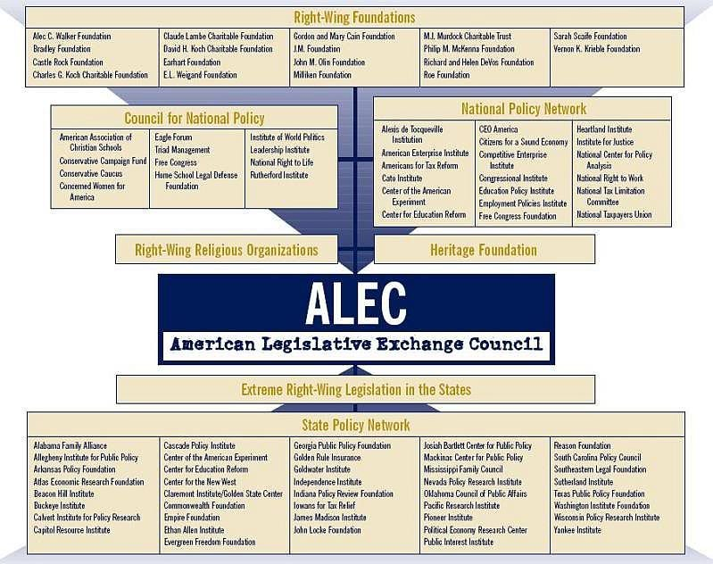
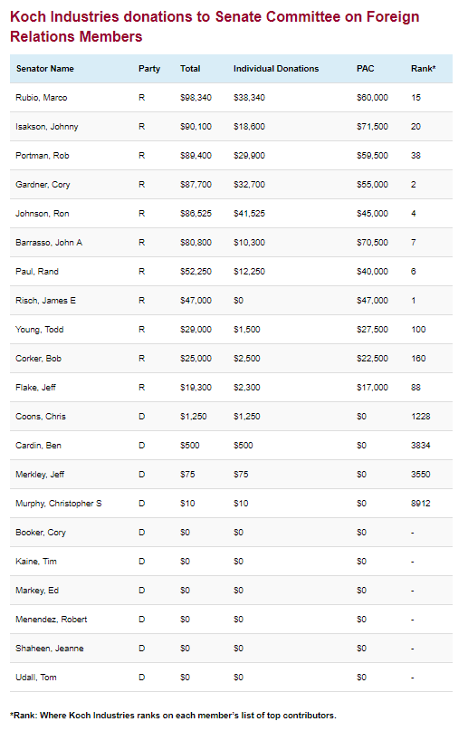

Mercers vs. Kochs vs. Adelsons: The three ultra-rich
families battling for control of the Republican party — Quartz (Dec 05 2017) <Click-to-Tweet>
How did the country get here just a year after Donald Trump ’s historic win? The donors ’ battle inside the GOP The Mercer ’s “ mindset is totally different from a traditional Republican donor mindset, ” he said. But Republican strategists
say it ’s a huge gamble. Three Republican families, three visions Robert, Diana, and Rebekah Mercer helped propel Trump ’s bombastic rise to the White House. https://twitter.com/DannyTarkanian/status/922580044697935872 ” Traditional “
establishment Republicans ” like Arizona ’s Flake — who has been an outspoken critic of Trump. Religion should n’t be political. The brothers say they are interested in civil-justice reform and slammed Trump ’s Muslim ban. Backed by Mercer
money. Mercer, his wife, Diana, and Who they back. It ’s that larger sense — ” “
Keywords: diana mercer, republican, president donald trump, donald trump ’s historic win, republicans, gop, wealthy hedge fund executive, senate, house, donald trump ’s, wealthy donors, rebekah mercer, donald trump
Abstract
ALEC and Koch Brothers Want to Gerrymander the Senate (Jul 18 2017) <Click-to-Tweet>
ALEC and Koch Brothers Want to Gerrymander the Senate A model bill to repeal the 17th Amendment, which established the popular election of United States senators in 1913. In 1912, progressive Republican US Sen. Robert “ ALEC ’s Model Bill
to Repeal the 17th Amendment The 17th article of amendment to the Constitution of the United States is hereby repealed. Section 2. One only needs to examine the electoral map to understand why ALEC is pushing for a repeal of the 17th
Amendment now. Only Utah has passed a resolution urging the repeal of the 17th Amendment. The result? ALEC has debated the repeal of the 17th Amendment before at the 2013 States and Nation Policy Summit. The Act did not call for a repeal of
the 17th Amendment, but gave a leg up to a favored candidate.
Keywords: united states, the us senate, popular election, gop state legislators, ballot box, alec, 17th amendment, education secretary betsy devos, the repeal of the 17th amendment before at the 2013 states, alec ’s model
bill, senate, state legislatures, koch brothers want to gerrymander
Abstract
Right-Wing Billionaires Are Buying Themselves a New Constitution (Apr 04 2017) <Click-to-Tweet>
It ’s time for us to be leaders among leaders, to take this back, Project ’s resolution. Would it be state legislatures? Or would it be Congress? Would it be the courts? ‘ And what that could ultimately lead to is basically which eventually
they surely will. In this way, the Article V movement is at once both myopic and farsighted: myopic to the extent that well-intentioned people may not actually understand the chaos and horrors that the federal government protects them and
their neighbors from, and farsighted to the extent that realizing their vision for the country is not contingent on any individual politician but structural, systemic changes. They ’re regulating everything. There ’s no facet of our life
that is not regulated anymore. ” “ ”
Keywords: article v movement is at once both myopic and farsighted:myopic to the extent that well-intentioned people may not actually understand the chaos and horrors that the federal government protects them and their
neighbors from,and farsighted to the extent that realizing their vision for the country is not contingent on any individual politician but structural,systemic changes ., congress, state representative, united states, ken ivory, convention of
states, recent conference call, amendments, dark money groups, former state legislators, mock convention, ’s, ’re regulating
Abstract
The Four Horsemen Of The Trumpocalypse: Koch, Mercer, Bannon, And Trump
Himself | HuffPost (Apr 3 2017) <Click-to-Tweet>
The Four Horsemen Of The Trumpocalypse: Koch, Mercer, Bannon, And Trump Himself
04/03/2017 Though Trump ’s presidency is still in its infancy, there are parallels with the character and ascent of Adolf Hitler. Robert Mercer is Koch-dark, a hedge-fund billionaire, and devotee of Ayn Rand ’s economic and political
philosophy. Trump ’s most influential policy advisor and chief strategist, But above all, Trump ’s craving for adulation and “ winning ” transcends fidelity to any of them. Trump ’s approval ratings continue to tank. The Four Horsemen Of
The Trumpocalypse: Koch, Mercer, Bannon, And Trump Himself
CONVERSATIONS
Real Life.
Keywords: organized political movement, major media outlets, critical posts, koch, mercer, breitbart news, trump himself
04/03/2017, german, donald trump, trump ’s mercurial nature, power, deeper political polarization, trump ’s
Abstract
The Brewing Billionaire Feud at the Heart of the G.O.P. (Sep 07 2016) <Click-to-Tweet>
Now, with Conway in Trump ’s corner ( and under Rebekah ’s thumb ), the Mercers sit at the nexus of the Trump campaign current power structure. think it is about Trump. While traditional Republican donors have mostly spurned Donald Trump,
one billionaire family has stepped into the void to quietly become one of the most powerful players in conservative politics. In the topsy-turvy world of Trump ’s G.O.P., Rebekah Mercer, the daughter of hedge-fund manager Robert Mercer and
heir to his billion-dollar fortune, has emerged as the new center of the conservative universe, Politico reports, pouring millions into a sustained effort to bolster the Republican nominee ’s campaign and remake the party in his image. Get
Vanity Fair ’s Cocktail Hour. And it ’s on the house.
Keywords: donald trump, mercers, sustained effort, politico, trump ’s g.o.p., the heart of the g.o.p., republican, trump ’s, politico reports, current power structure, millions, republican nominee ’s campaign
Abstract
ALEC Exposed: The Koch Connection | The Nation (Jul 12 2011) <Click-to-Tweet>
The Nation is reader supported: Hundreds of ALEC ’s model bills and resolutions bear traces of Koch DNA: raw ideas that were once at the fringes ALEC gave the Kochs its Adam Smith Free Enterprise Award, and Koch Industries has been one of
the select members of ALEC ’s corporate board for almost twenty years. The company ’s top lobbyist was once ALEC ’s chairman. Dozens of other ALEC bills would limit environmental regulations or litigation in ways that would benefit Koch.
Several pieces of ALEC ’s model legislation echo this plan. ” “ ALEC and the Kochs often pursue parallel tracks. But ALEC also operates like an arm of the Koch agenda, circulating bills that make their vision of the world concrete.
Keywords: koch, alec ’s corporate board, alec ’s support, koch dna, alec ’s model bills, alec, nation ’s, hard-core socialist, americans, public education, the center for media and democracy, group, kochs
Abstract
American Legislative Exchange Council (ALEC) | DeSmogBlog (Apr 23 2019) <Click-to-Tweet>
Along with legislators, corporations have membership in ALEC. Corporations sit on all nine ALEC task forces and vote with legislators to approve' model' bills. ( ALEC says that corporations do not vote on the board. ) Corporations fund
almost all of ALEC's operations. * Public Safety and Elections task force ( since disbanded ) [ 4 ]
ALEC Bills [ 6 ]
Stance on Climate Change
January, 2017 Global Climate Change is Inevitable. ” ALEC Conference, ” ALEC Annual Meeting, Dallas, Texas August, 2014 The science [ of climate change ] is bad, the consensus is wrong. Phil King ( ALEC Board member ) John Piscopo (
ALEC Board member ):
Keywords: change, former alec task force, climate change, alec task forces, alec, global climate change is inevitable, climate, corporations alec, sound science, important public policy innovations, climate denier, state
legislators
Abstract
ALEC Corporations - SourceWatch (Apr 01 2019) <Click-to-Tweet>
[ 20 ]
Industrial Biotechnology Association, member of ALEC's Health and Human Services Task Force in 1993 [ 94 ] [ 20 ] and member of ALEC's Civil Justice Task Force Kaplan Higher Education, Member of ALEC Education Task Force [ 99 ] Economic
Development Task Force [ 81 ] [ 37 ]," Trustee" level sponsor of 2011 ALEC Annual Conference [ 31 ] ( $ 5,000 in 2010 ) [ 32 ] [ 20 ]-announced it would leave ALEC April 5, 2012. Inc. [ 22 ]
Long Term Care, Inc., member of ALEC's Health and Human Services Task Force in 1993 [ 94 ] [ 20 ] Member of ALEC's Energy, Environment and Agriculture Task Force [ 121 ] Private Sector Member registered for the 2017 Annual Meeting.
Keywords: spring task force summit, alec, alec energy,environment and agriculture task force, alec member, joseph e. seagram & sons inc., alec utah host committee, alec funder, force, annual conference, private sector
member, alec annual meeting, commerce,insurance and economic development task force, economic development task force
Abstract
ALEC Non-Profits - SourceWatch (Apr 01 2019) <Click-to-Tweet>
[ 12 ]
American Principles Project, ALEC Education Task Force member [ 13 ]
American Stewards of Liberty ( a private property rights organization ) [ 19 ]
Americans United for Life ( pro- life advocacy group ), Exhibitor at ALEC's 2011 Annual Conference [ Task Force member [ 22 ]
Center for Competitive Politics ( an SPN associate member, Public Safety and Elections Task Force Executive Committee member [ 23 ] and Exhibitor at ALEC's 2011 Annual Conference, [ 6 ] terminated membership on March 19, 2013
Keywords: a plenary session, government affairs manager, takeda, " enacting a comprehensive k-12 education reform agenda, member, alec education task force, alec education task force member, alec annual conference, level
sponsor, energy studies, annual conference, alec, task force member
Abstract
ALEC (Jan 10, 2019) (YouTube Playlist)
National Right to Work Committee Mailer Backs Vukmir | PR Watch (Oct 29 2018) <Click-to-Tweet>
The two perennial anti- union bills were last introduced in Congress by Rep. Steve King ( R-IA ) in 2017. So-called" right to work" laws are actually designed to weaken unions and lower wages, as the Economic Policy Institute has reported.
Shortly after, Vukmir introduced an ALEC-style repeal of Wisconsin's prevailing wage law for public projects. In 2016, ALEC National Chair Vukmir" authored" yet another attack on workers, introducing an ALEC model bill prohibiting project
labor agreements. Project labor agreements encourage union representation and better wages and working conditions on public works projects. In 2014, Vukmir received a" Working for Wisconsin" award from the group. " Learn more about NRTWC
here, the Janus case here, and the latest anti- union campaigns here.
Keywords: union monopoly bargaining power, wisconsin, state laws, lower wages, public works projects, senate candidate leah vukmir, leah vukmir, aggressive anti, union, alec, union bills, labor groups, union protestors
Abstract

Ron Rabatsky on Twitter: "from my #ALEC files:… https://t.co/W52JrP7dmE" (Jul 8 2018)
ALEC Task Forces Gather in Grand Rapids to Draft Bills for Its Corporate Sponsors - EXPOSEDbyCMD (April 24th, 2018)
Chinese Corporation Alibaba Joins Group Ghostwriting U.S.
Laws (Mar 20 2018) <Click-to-Tweet>
We are probably the world ’s largest e-commerce company you have never heard about. Alibaba ’s decision to join the powerful legislation-writing organization comes as many Chinese companies have entered the U.S. market and stepped up their
influence in domestic politics. Executives involved in the transaction denied the Chinese government ’s involvement in the sale. A spokesperson for Heinz emailed The Intercept to say Heinz had “ no financial interest or investment ” in
the deal undertaken in China. It ’s not clear which of ALEC ’s “ model ” bills Alibaba has sought to influence. Alibaba ’s Anaya was brought to the summit in Nashville by an ALEC staffer involved in the group ’s actions on minimum wage
issues. U.S. companies sell and export their goods into China.
Keywords: chinese, alec, other interest groups, alibaba, u.s., private group, alec ’s, the intercept to say heinz had “ no financial interest or investment ” in the deal undertaken in china.
, china, company ’s entry, lobbyists, many chinese companies, local lawmakers
Abstract
Revealed: Names of ALEC Lobbyist and Legislator Members - Documented (Mar 08 2018) <Click-to-Tweet>
The names of the members were listed in a document that details the conference registrations for ALEC ’s 44th annual meeting that took place in Denver, Colorado in July 2017. The AARP Florida state chapter is listed as being a full ALEC
member. American Electric Power dropped its ALEC membership in 2015 over ALEC ’s opposition to the Clean Power Plan. AEP ’s State Government Affairs Manager registered to attend the meeting. Yelp ’s Director of Public Policy is listed as
being registered for the meeting. Numerous electric utilities are funding ALEC. Florida Power and Light, Indianapolis Power & Light Company and Dominion Energy were listed as being registered for the meeting. ’s going away party. Seitz
is a member of ALEC ’s board of directors. You can download the full pdf list here.
Keywords: members, denver, list, colorado, exxonmobil,peabody energy, alec, full pdf list, alec ’s members, front groups, place, alec ’s 44th annual meeting, meeting, alec ’s membership
Abstract
ALEC Push for Constitutional Convention Faces Legal Questions (Aug 03 2017) <Click-to-Tweet>
ALEC Here ’s What You Need to Know About It. Amendments may be proposed by Congress, or two-thirds of state legislatures ( currently 34 states ) may call for a convention for proposing amendments. But this has n’t dampened ALEC ’s support
for the notion. Convention Plans Three groups are actively peddling the Constitutional Convention idea and competing for the attention of ALEC legislators. The ALEC model resolution “ The organization ’s website lists ALEC and the Heartland
Institute among its partner organizations. ALEC ’s corresponding model bill is called “ Compact for America: Balanced Budget Amendment. A 2016 memo from BBATF ’s Biddulph to ALEC ’s board exposes the level of hostility between the groups.
CFA ’s
Keywords: alec, target states, right-wing convention backers, bbatf, a constitutional convention, amendments, article v applications, ’s legislative season, nick dranias, resolution calling, article v of the constitution,
alec ’s support, state legislatures
Abstract
“ALEC’s real goal is preventing the federal government from providing health care and most other things in the first place. And they are working diligently, with the Balance Budget Amendment Taskforce (BBAT) and the Convention of States (COS), to do just that by corralling 34 states to call for an Article V Constitutional Convention.”The ALEC Swampland | PR Watch (Jul 23 2017) <Click-to-Tweet>
” So ALEC is trying to backdoor these rollbacks by calling for a first ever Article V constitutional convention to cut federal spending and limit federal authority. ALEC ’s Article V constitutional convention push is really a hissy fit of the far right. ALEC ’s real goal is preventing the federal government from providing health care and most other things in the first place. The BBAT wants a convention to adopt amendments specifically requiring a federal balance budget. Twelve states have passed resolutions calling for this type of constitutional convention. ” “ The COS folks believe that the authority of the federal government is the disease which must be cured, and the spending is but a symptom.
Pruitt Emails Reveal Communications with ALEC and Koch Groups | PR Watch
(Feb 21 2017) <Click-to-Tweet>
After Pruitt became attorney general, he stayed engaged with ALEC on energy and environmental issues. ALEC is funded by a number of big polluters including Devon Energy, Peabody Energy, Koch Industries, and ExxonMobil. Another email from
Anderson to Pruitt and others, provides details of Pruitt's participation in an energy workshop at ALEC's May 2013 meeting. Pruitt spoke at a December 2013 ALEC meeting on a panel called" Embracing American Energy Opportunities: From
Wellheads to Pipelines. In 2014, Pruitt spoke at another ALEC meeting that was sponsored by Peabody Energy, ExxonMobil, Chevron, and the American Coalition for Clean Coal Electricity ( ACCCE ). Pruitt led a group of state attorneys general
in suing the EPA for its correspondence with environmental groups. " "
Keywords: attorney general, state letterhead, alec, pruitt, epa, email, koch industries, devon energy,peabody energy, industry groups, industry executives, embracing american energy opportunities, alec meeting, alec civil
justice
Abstract
“ALEC has pushed for the repeal of the Affordable Care Act, which has saved Medicare enrollees millions of dollars by closing the Medicare drug benefit "donut hole." It has opposed Medicaid expansion under Obamacare. It has targeted public pensions, pushing to cap benefits and shift workers toward defined contribution plans, which layer more market risk on individual workers' shoulders.”Why is AARP cozying up to the right-wing group ALEC while big corporations flee? - Los Angeles Times (Aug 01 2016) <Click-to-Tweet>
The right-wing legislative lobbying group ALEC has been losing corporate members at a remarkable pace since 2012, due in part to its support of measures attacking clean energy, workers rights and voting rights. That makes the appearance of AARP on the list of sponsors of ALEC's 2016 annual meeting last month all the more curious. AARP is n't exactly hiding its new financial relationship with ALEC. The Koch-affiliated ALEC — the name stands for Fla. After Florida enacted its measure, it was translated into an ALEC model and passed in 16 more states. Backlash against ALEC began in 2011, just as its influence among state legislators was reaching its peak. ALEC has n't responded to our request for comment. It would be wise for AARP to follow that model.
Proposing Constitutional Amendments by a Convention of the States - Article V - A Handbook for State Lawmakers (2016) (PDF)
Resolution on the Tax and Fiscal Effects of Medicaid Expansion - American Legislative
Exchange Council (September 4, 2015)
This resolution memorializes the harmful fiscal effects of Medicaid expansion under the Patient Protection and Affordable Care Act, otherwise known as ObamaCare, and commends the 21 states that have rejected ObamaCare’s Medicaid expansion.
Abstract
State Legislatures and ALEC: Last Week Tonight with John Oliver (HBO) - YouTube (Nov 2,
2014)
While midterm coverage is largely focused on the parts of Congress that do very little, vital (and bizarre) midterm elections are going unexamined. State legislators pass a lot of bills, and some of that efficiency is thanks to a group
called ALEC that writes legislation for them. It’s as shady as it sounds!
Abstract
ALEC’s stealth constitutional convention derailed by Senate President Andy
Biggs | Blog for Arizona (Apr 27 2014) <Click-to-Tweet>
ALEC ’s stealth constitutional convention derailed by Senate President Andy Biggs
By Earlier this year I posted about ALEC ’s stealth constitutional convention, purportedly to propose a balanced budget amendment to the U.S. Constitution that if it were ever actually adopted would wreak economic havoc on the U.S. economy.
So naturally the Tea-Publicans in the Arizona House were all for it Then they did it again in a strike everything amendment to Cap’n Al Melvin ’s bill, SCR 1016 (.pdf ). All of these ALEC model bills died in the Arizona Senate where Senate
President Andy Biggs, who is no fan of Article V conventions, made certain that these bills never came up for a final vote. Andy Biggs — just this once.
Keywords: application for an article v convention, andy biggs, sanity andy biggs, economic havoc, cap’n al melvin ’s bill, international standards, facebook, senate, sarah palin, great economic damage, the u.s.
constitution, balanced budget amendment, alec ’s stealth constitutional convention
Abstract
ALEC’s stealth constitutional convention | Blog for Arizona (Feb 17 2014)
<Click-to-Tweet>
ALEC ’s stealth constitutional convention Oy. :
ALEC's Stealth Convention " " The right is not united in their support for the Article V constitutional amendment effort. The economic problems are the most serious, and they would pertain to any version of a constitutional balanced budget
amendment. Some proponents of a constitutional balanced budget amendment have argued that other developed countries ’ constitutions require balanced budgets, suggesting that such a requirement for the federal government would therefore be
appropriate. [ 2 ] ” ” The amendment has long been a popular idea. * * * The economic argument assumes the amendment would be enforced. It is n’t clear how it would be. This constitutional convention idea is a terrible idea from the"
Kochtopus" organization ALEC.
Keywords: european country, article v constitutional amendment,and at its last two, constitutional convention, others, recessions, balanced budget amendments, federal constitution, recent years, other delegates, alec, other
issues, idea, article
Abstract
ALEC facing funding crisis from donor exodus in wake of Trayvon Martin row | US news | The
Guardian (Dec 03 2013) <Click-to-Tweet>
Alec has identified more than 40 lapsed corporate members. But Alec's senior director of public affairs, Bill Meierling, insisted that the group complies with all state and federal tax laws. Meierling insisted that Alec does not lobby in
any state. Alec's own internal records of its membership states that it has 1,810 state legislators on its membership books – The documents show that Alec has struggled to hold on to members from the financial services industry. A total of
41 companies are listed by Alec as targets to be lured back into membership. But Alec said that the draft agreement was not adopted by the membership committee or by any of the state chairs. We believe they would have a strong interest in
Alec. The Alec board, consisting solely of state legislators, rejected the gambling plan.
Keywords: internal alec documents, gun laws, public employee compensation, alec, donor exodus, new members, former members, bare alec, strong interest, membership fees, lobby group appealing, alec reconvenes, state
legislators
Abstract
Article V: A Handbook for State Lawmakers, by Robert G. Natelson (2013) (PDF)
ALEC - The American Legislative Exchange Council - Explained in 5 Minutes - YouTube (Apr
30, 2012)
DISCLAIMER: As far as I know, the ALEC scholarship fund has not paid for any legislator to tan - that said, the fund has been used for sporting events, gun shows, cigar tours, and other "junket" type activities. My apologies for the mixup.
ALEC is a 501 c3 non-profit organization. According to the group: "It is the nation's largest nonpartisan (sic) individual membership association of state legislators (sic), with nearly 2,000 members across the nation and more than 100
alumni members in Congress." What ALEC does is criminal, and it needs to be stopped.
Abstract
How ALEC became a political
liability - The Washington Post (Apr 24 2012) <Click-to-Tweet>
When I joined ALEC eight years ago, it was a very different organization, ” Vick said in a statement. So what is ALEC, and why is it causing such a fuss? While legislators pay $ 50 a year to belong to the group, most of the ALEC ’s money
comes from corporations. Criticism, an ALEC spokeswoman said, is inspired by the group ’s conservative philosophy, not its methods. The group created a new website, ALEC Exposed, to house the drafts and publicize ALEC ’s work. “ Part of
ALEC ’s modus operandi was to operate behind the scenes without a lot of visibility. It ’s getting that visibility now. ” But ALEC ’s critics are not satisfied.
Keywords: alec ’s money, group ’s conservative philosophy, alec, ground laws, alec spokeswoman, damage control, ’s, alec ’s work, today, trayvon martin, task force legislation, ted vick, group
Abstract
Article V Handbook - American Legislative Exchange Council ( Feb 1, 2012) <Click-to-Tweet>
Our nation is trillions of dollars in debt without a credible plan to stop spending. The battle in Congress has escalated to a point where politics outweighs the cost of our economic future, and there is little hope our nation ’s leaders
will make the tough choices that need to be made in order to reign in our debt and revive our economy. Balancing our budget transcends party politics. No matter who controls Congress or the presidency, our $ 15 trillion dollar ( and growing
) national debt will remain an ever-present hurdle to economic growth and recovery. Today America faces an uncertain economic future. State legislators must take the long-sighted view and exercise our rights within the Constitution to limit
Congress ’s ability to drive our nation into further economic decay.
Keywords: ’s, balanced budget, national debt, economic growth, limit, congress, party politics, economic future, the united states constitution, nation, uncertain economic future, politics, cost
Abstract
A CMD Special Report on ALEC's Funding and Spending | PR Watch (Jul 13 2011) <Click-to-Tweet>
The special report focuses on ALEC's funding. Learn more at ALEC Exposed. Is that All the Kochs Have Done with ALEC? Other right-wing foundations have also supported ALEC, far beyond the" dues" paid by any legislator. Who Else Gives to
ALEC? Other current ALEC corporate leaders have given an undisclosed sum to ALEC this year and before. For one, they help subsidize legislators' trips to attend ALEC meetings. ALEC reports that it has spent over $ 250,000 for childcare for
meetings in 2009. But ALEC membership does provide other rewards for legislators. How Much Do These ALEC Conventions Cost? ALEC conventions cost about $ 2 million a year, but only bring in about $ 850,000 in revenue. What Else Does ALEC Do
with the Corporate Money?
Keywords: corporate coffers, alec meetings, annual alec conventions, annual alec meeting, alec, legislators, charles g. koch charitable foundation, corporations, severance pay, alec exposed, state legislators, other
sources, legislative members
Abstract
ALEC Exposed: The Koch Connection | The Nation (Jul 12 2011) <Click-to-Tweet>
Hundreds of ALEC ’s model bills and resolutions bear traces of Koch DNA: raw ideas that were once at the fringes ALEC gave the Kochs its Adam Smith Free Enterprise Award, and Koch Industries has been one of the select members of ALEC ’s
corporate board for almost twenty years. The company ’s top lobbyist was once ALEC ’s chairman. Dozens of other ALEC bills would limit environmental regulations or litigation in ways that would benefit Koch. ALEC ’s model legislation
reflects parts of the Kochs ’ agenda that have little to do with oil profits. Long before ALEC started pushing taxpayer-subsidized school vouchers, for example, the Koch fortune was already underwriting attacks on public education. Several
pieces of ALEC ’s model legislation echo this plan. ALEC and the Kochs often pursue parallel tracks.
Keywords: alec ’s corporate board, alec, hard-core socialist, koch dna, the center for media and democracy, public education, nation ’s, americans, koch, group, alec ’s model bills, alec ’s support, kochs
Abstract
ALEC Exposed (n/a) <Click-to-Tweet>
ALEC ’s post- Janus toolkit inadvertently sheds light on the real aims of the group ’s union-busting activities. Bill ’s author never met the threshold for election that he is demanding for union recertification. More ALEC News
AT&T joins Verizon in rush to the exit after ALEC featured a far-right speaker at its annual meeting. Verizon has decided to quit the American Legislative Exchange Council ( ALEC ) following a public outcry over the corporate lobby
group ’s hosting of David Horowitz as a prominent speaker at its annual meeting in New Orleans in August. Invitations have gone out for the American Legislative Exchange Council ( ALEC ) Wisconsin GOP Just Nominated ALEC ’s “ Iron Lady ” to
Take on Tammy Baldwin
Keywords: horowitz speeches, alec, alec ’s post, group ’s union-busting activities, tammy baldwin, david horowitz, washington, ’s, join, alec news, real aims, light, union recertification
Abstract
ALEC's Attack on Public Education | HuffPost (n/a)
<Click-to-Tweet>
ALEC's Attack on Public Education
08/01/2017 The issue of the moment for ALEC is public education — that is, undermining it. Fittingly, the keynote speaker at ALEC ’s July 19- 21 conference was school privatization czarina Betsy DeVos. DeVos has spent most of her life using
her billions to push privatizing public education through charter and voucher school schemes. I heard repeatedly ( perhaps because of the millions of dollars the school privatization industry Her priority, and ALEC ’s agenda, are otherwise.
It ’s no longer about low-income students in low-performing schools. What you never hear at ALEC is any discussion about improving public education. To DeVos, those who support public schools are “ supporters of the status quo. ” But
Children, as most attend public schools that ALEC members want to unravel.
Keywords: voucher school schemes, families, schools, alec, public schools, school privatization czarina betsy devos, public education, first state voucher scheme, new federal program, betsy devos, the millions of dollars,
alec conference, alec ’s july
Abstract
American Legislative Exchange Council - LittleSis (n/a) <Click-to-Tweet>
Edited by EditorDeSmog 2 months ago History
Advances policies of free markets, limited government, federalism, and individual liberty, through a nonpartisan public-private partnership of...
Advances policies of free markets, limited government, federalism, and individual liberty, through a nonpartisan public-private partnership of America's state legislators, members of the private sector, the federal government, and general
public.
Keywords: general public, individual liberty, limited government, free markets, america, history
advances, federalism, federal government, policies, government, private sector, state legislators, liberty
Abstract
Article V models - American Legislative Exchange Council (n/a) <Click-to-Tweet>
Congress _ _ Res. _ of the United States of America ( the _ _ _ _ _ _ _ _ _ _ _ _ _ _ _ _ State of _ _ _ _ _ _ _ _ _ _ _ _ _ _ _ _ ) _ _ _ _ _ _ _ _ _ _ _ _ _ _ _. _ _ _ _ _ _ _ _ _ _ _ _ _: …
2 years ago “ Whereas, Article V of the Constitution of the United States provides that upon the application of two-thirds of the several states, Congress shall convene a convention to propose amendments to …
3 years ago Section 1. •
Keywords: congress, devil ’s advocate, states, several states, first anniversary, the u.s. constitution, the alec article v handbook, amendments, the alec board of scholars, the united states of america, state legislative
body, fascinating discussion, constitutional amendments
Abstract
Constitution Interrupted (n/a) <Click-to-Tweet>
I know because I am a Wisconsin legislator, and a member of ALEC. We were given a model Article V constitutional convention resolution, urged to save the Republic, and sent on our way. His resolution, which would make Wisconsin the 30th
state calling for a Constitutional Convention to propose a balanced budget amendment, will soon be considered by the Wisconsin legislature. ALEC is a driving force behind this austerity movement, supplying model bills, “ how to ” books, and
support for pro- amendment groups. That sums up ALEC. To them, government is not about the people, but the most powerful doing what they want, when they want, and to whom they want.
Keywords: resolutions, alec, model legislation, austerity movement, workers, campaign finance reforms, people, federal government, amendment groups, wisconsin, constitutional amendments, voting rights, state legislators
Abstract
History Was Made in Phoenix This Month - American Legislative Exchange Council (n/a) <Click-to-Tweet>
On September 12, official delegations from 19 states as well as observers from several additional states assembled in Phoenix for the first convention of states since 1861. Not surprisingly, state legislators who are members of ALEC were
prominent at the planning convention, and here are some of their observations. ”
Chair of the Federalism Subcommittee at ALEC and Utah state lawmaker It has been 156-years since a state has called a Federal convention, the last being the Peace Convention held in Washington D.C. in 1861. ” Convention Chair Representative
Kelly Townsend was, “ so proud of the work accomplished … by delegates of the planning convention. ” We ’ve still got a lot of work to do to make a balanced budget amendment a reality, but the momentum for a constitutional convention is
clearly building.
Keywords: state, planning, several additional states, congress, federal convention, bba, amendments, convention, the planning convention chair, first convention, the annapolis convention, hard political work, phoenix
Abstract
Leadership - American Legislative Exchange Council (n/a) <Click-to-Tweet>
Contact
Board of Directors A dedicated team of state legislative leaders from across the country serves as the governing board of ALEC. They are among the vanguard for freedom who dedicate their time and resources to promote limited
government, free markets and federalism.
Keywords: board, limited government, state legislative, leaders, free markets, alec, federalism, markets, government
Abstract
REPORT: Legislating Under the Influence - How
Corporations Write State Laws in Minnesota | Campaign Finance In The United States | State Legislature (United States) (n/a) <Click-to-Tweet>
ALEC exists specifically so that lobbyists and corporations can influence state legislative policies away from public view. With help from corporate political contributions, lobbyists then help move the legislation forward. Increasingly
however, that ’s not thecase and corporate lobbyists, not our legislators, are drafting Minnesota ’s laws. In Minnesota, at least 19 legislators are members of ALEC ’s legislative task forces. Protecting Corporate Tax Breaks in the
Minnesota Constitution
Minnesota spent over $ 24.3 billion
1
on tax breaks in the 2011- 2012 state budget, which is morethan 40 % of the state budget. This legislation has been introduced in both the Minnesota House and the Senate ( HF 1369/SF1118 ).
Keywords: corporate lobbyists, revenue, state capitols, tax breaks, draft legislation, true tax benefits, increases, legislators, minnesota, largest corporations, minnesota ’s laws, cookie-cutter legislation, tax
Abstract
Rep. Chris Taylor | HuffPost (n/a) <Click-to-Tweet>
Tap here to turn on desktop notifications to get the news sent straight to you.
Open Search
Keywords: news, desktop notifications
Abstract
Institute for New Economic Thinking (May 30 2018) <Click-to-Tweet>
James McGill Buchanan is a name you will rarely hear unless you ’ve taken several classes in economics. MacLean could not gain access to Buchanan ’s papers to test her hypothesis until after his death in January 2013. Buchanan vehemently
disagreed Buchanan ’s view of human nature was distinctly dismal. It did to Buchanan. a precursor of modern public choice theory ” who “ anticipates ” Buchanan ’s thinking. But the Virginia school ’s focus and career missions were distinct.
Buchanan ’s school focused on public choice theory, later adding constitutional economics and the new field of law and economics to its core research and advocacy. It was n’t. Buchanan was not a dystopian novelist. Research like MacLean ’s
provides hope that toxic ideas like Buchanan ’s may finally begin to face public scrutiny.
Keywords: james buchanan, many economics students, government, public services, personal power, nobel laureate james buchanan, nancy maclean, public, ’s, donald trump ’s, consumer rights, george mason university, james
mcgill buchanan
Abstract
A despot in disguise: one man’s mission to rip up
democracy | George Monbiot | Opinion | The Guardian (Jul 19 2017) <Click-to-Tweet>
To read Nancy MacLean ’s new book, Democracy in Chains: The Deep History of the Radical Right ’s Stealth Plan for America, is to see what was previously invisible. The programme is now reshaping politics, and not just in the US. MacLean
says that Charles Koch poured millions into Buchanan ’s work at George Mason University, whose law and economics departments look as much like corporate-funded thinktanks as they do academic faculties. Here ’s why | George Monbiot In one
respect, Buchanan was right: there is an inherent conflict between what he called “ economic freedom ” and political liberty. Buchanan ’s programme is a prescription for totalitarian capitalism. But at least, thanks to MacLean ’s
discoveries, we can now apprehend the agenda. We ’re getting there.
Keywords: public spending, state-sponsored private schools, american, tradition, billionaire charles koch, racial desegregation, freedom, nancy maclean ’s, hidden programme, koch network, politics, democracy, james mcgill
buchanan
Abstract
James McGill Buchanan’s terrifying vision
of society is the intellectual basis of the far-right. (Jun 22 2017) <Click-to-Tweet>
So why is James Buchanan so unknown? Friedman was always very anxious to be in the limelight, and Buchanan was not like that at all. So what was he writing from? So that was a very dark work. So yeah, it ’s pretty dark. There ’s been
brilliant work by journalists, Oh, this is what he ’s talking about! That ’s what this is! ” Is it possible to disentangle those two? These are these good old boys who hate black people and that ’s why they ’re doing this. So it ’s about
power, money. Your book calls Buchanan ’s ideas a “ stealth plan. And that ’s not what this is about. That ’s why they ’re doing things in the deceitful and frightening ways that they are.
Keywords: buchanan ’s, democracy in chains:the deep history of the radical right ’s stealth plan for america, white supremacy, government spending, people, radical right ’s stealth plan, tennessee-born economist james
mcgill buchanan, dark work, other people, charles koch, ’re, new book, james mcgill buchanan
Abstract
What Is the Far Right’s Endgame? A
Society That Suppresses the Majority. (Jun 22 2017) <Click-to-Tweet>
What Is the Far Right ’s Endgame? I spoke with MacLean about Buchanan ’s intellectual evolution and its legacy today. So why is James Buchanan so unknown? So what was he writing from? So that was a very dark work. So yeah, it ’s pretty
dark. There ’s been brilliant work by journalists, Oh, this is what he ’s talking about! That ’s what this is! ” Is it possible to disentangle those two? These are these good old boys who hate black people and that ’s why they ’re doing
this. So it ’s about power, money. Your book calls Buchanan ’s ideas a “ stealth plan. And that ’s not what this is about. That ’s why they ’re doing things in the deceitful and frightening ways that they are.
Keywords: libertarian ’s work, charles koch, people, ’re, tennessee-born economist james mcgill buchanan, new book, democracy in chains:the deep history of the radical right ’s stealth plan for america, white supremacy,
more money, other people, government spending, far right ’s endgame, james mcgill buchanan
Abstract
Citizens for Self-Governance - SourceWatch (Feb 25 2019) <Click-to-Tweet>
[ 6 ] ( See the brochure here. ) [ 7 ] About ALEC
ALEC is a corporate bill mill. It is not just a lobby or a front group; it is much more powerful than that. Corporations fund almost all of ALEC's operations. CSG Pushes Constitutional Convention at ALEC Conferences CSG has held workshops
on its constitutional amendment strategy during at least two ALEC conferences. " " Convention of States is a much more radical approach to a constitutional convention... Convention of States Article V Application Gaining Momentum Unfairly
Targeted ( 2013 ) [ 12 ] [ 14 ] [ 13 ]
CSG Funds Challenge to Wisconsin Law on Illegal Campaign Coordination [ 5 ] [ 17 ] [ 19 ] [ 20 ]
Funding [ 22 ]
Keywords: csg, resolutions, alec, front group, congressional term limits, csg pushes constitutional convention at alec conferences, the landmark legal foundation, federal power, constitutional convention, wisconsin law, "
calling a convention of the states:the constitutional check on the abuses of federal power, illegal campaign coordination, state legislators
Abstract
Affiliates Program (Feb 26 2001) (via Wayback Machine)
CSG National Committees (Feb 26 2001) (via Wayback Machine)
CSG - The Associates Program (Feb 26 2001) (via Wayback Machine)
FAQ about CSG (Feb 26 2001) (via Wayback Machine)
StatesNews, Your Source for Daily State and CSG News (Feb 26 2001) (via Wayback Machine)
Suggested State Legislation (Feb 26 2001) (via Wayback Machine)
Who's Who at CSG (Feb 26 2001) (via Wayback Machine)
Council for National Policy - SourceWatch (Feb 25 2019) <Click-to-Tweet>
Jump to: navigation, search The Council for National Policy ( CNP ) is a shadowy, secretive group dubbed" Sith Lords of the Ultra-Right" by the liberal blog DailyKos. [ 1 ] Mark Crispin Miller called CNP a" highly secretive... theocratic
organization-- what they want is basically religious rule" ( A Patriot Act ). Their membership ( see below ) is a Who's Who list of the biggest names of the Radical Right. " The CNP describes itself as a counterweight against liberal
domination of the American agenda," reported ABC News. [ 3 ] The archive contains 3,500 documents, some 27,000 pages, covering 350 organizations and individuals. Access the index to the Anti- Environmental Archives here.
Keywords: koch, pre franklin delano roosevelt, the council for national policy ( cnp, the new york times, 19th century capitalist roots, secretive group, complex web, decency movements, the dead billionaires club, genuine
leaders, the adolph coors foundation, richard devos, sith lords of the ultra-right
Abstract
Council for National Policy (2017) (PDF)
Council for National Policy Database A-G (2017) (PDF)
Council for National Policy Database H-M (2017) (PDF)
Council for National Policy Database N-Z (2017) (PDF)
Education Reform Report, by Bob McEwen, Executive Director, CNP (2017) (PDF)
Revealed: Conway, Bannon Members of Secretive Group | Southern Poverty Law
Center (Aug 31 2016) <Click-to-Tweet>
” Revealing when or where the group meets, or what it discusses, is also forbidden. It shows that Conway was a member of the CNP ’s executive committee that year, and that Bannon was a regular member. It is not known if they remain. As the
SPLC noted when it published the 2014 directory in May of this year, the CNP has every right to keep its membership secret. ”
Bannon was already controversial. It ’s not known how their contacts within the CNP may have affected Conway and Bannon. But as the SPLC concluded in its May report on the CNP: “ ’s future. ” That is as true of campaign leaders as it is of
political candidates.
Keywords: other similar characters, members, shadowy group, former senior fellow, membership, conway, people, political operatives, cnp, donald trump ’s, that year, council for national policy ( cnp, immigrants
Abstract
The Council for National Policy: Behind the Curtain | Southern Poverty Law Center
(May 17 2016) <Click-to-Tweet>
Higher Education & the CNP
The Council for National Policy, a highly secretive group, is a key venue where mainstream conservatives and extremists mix. That is about to end. The following visualizations were created from the Council for National Policy ’s ( CNP )
membership directory. The 2014 CNP members are paragons of the conservative establishment. He is hardly alone. These members are listed on the CNP ’s board of governors right alongside people who are not particularly known for their
political extremism, although they are certainly highly conservative. Leaders and Money The CNP ’s latest available tax forms show that the group has a budget of between $ 1.5 million and $ 2 million. “ A Who ’s Who of the Right ” One of
the organization ”
Keywords: the council for national policy ( cnp, mainstream conservatives, gay people, groups, secretive group, cnp founders, organization ’s tax forms, many members, other republican presidential candidates, ’s, past
presidents, the council for national policy, last time long lists
Abstract
Council for National Policy - 2014 Membership Directory (2014) (PDF)
The Council for National Policy: What It Is (March 14, 2008) (via Wayback Machine)
Craig Unger on Tim LaHaye | Vanity Fair (Jan 01 2007) <Click-to-Tweet>
— just as they do in LaHaye ’s … he wants to be with us. He wants us to be with him. Amen ” and “ That ’s right. The sight This is all of us, ” Frazier says. That ’s the blood of as many as two and a half billion people. ” Nevertheless,
LaHaye ’s disciples are certain these events — Not soon enough, ” she says. Not soon enough. ” No. 1 ’ There should be an understanding between us and them. He said, ‘ What can I do? ‘ ’ ” … —GOD. And it ’s not about just going to church.
Tourism is one. ’ They ’re According to LaHaye and Jenkins, it is God ’s intent “ ” ” And it's on the house.
Keywords: ancient israel, israel, ’s house, the temple mount —, minute, tim lahaye, people, christ, jerry falwell ’s, the kingdom of god, america, the coming messiah, ’s prophetic plan
Abstract
Inside the Council for National Policy - ABC News (Jan 06 2006) <Click-to-Tweet>
What they are — or rather, what sway they hold — is a source of some dispute. So did the Bush campaign, citing the CNP. The two events might not be connected. Partly because so little was known about CNP, the hubbub died down. The CNP
Against Liberalism Conservative, it clearly is. There's But the CNP is one factory among many. Such talk is an apparition, members say. It's certainly not for a political reason. " That," he said," was really the hook. — They Like It The
CNP remains obscure. Both the Council and Center are not to be confused with the Center for Budget and Policy Priorities. Or the National Center for Policy Analysis. " " bubble_chat
Keywords: little more, cnp members, cnp backers, campaign ministration, conservative version, cnp, policy circles, magisterial conservatives, political action committee, national policy, member, group, influence
Abstract
A Nation Under God – Mother Jones (Dec 01 2005) <Click-to-Tweet>
TRINITY CHAPEL in suburban Atlanta ’s Cobb County is hardly the picture of a revolutionary outpost. That ’s no longer the case. That ’s established — established by God! DeMar ’s lecture focused on the “ three governments”—family, church,
and state — And, perhaps most importantly, the state is “ ’s Larson. If Schaeffer was Reconstruction ’s John the Baptist, Rushdoony was its pope. At the heart of Rushdoony ’s argument were two biblical passages. The debate was over whether
Brezhnev was the Antichrist, ” says the University of Georgia ’s Larson. Reconstruction ’s alternative was “ postmillennialism ”: Christ would not return until the church had claimed dominion over government, and most of the world ’s
population had accepted the Reconstruction brand of Christianity. ” ” “
Keywords: movement ’s founder, religious right, trinity ’s, suburban atlanta ’s cobb county, university of georgia, church of god, gary demar, christian reconstruction —, christian right, christian, christian government,
trinity ’s parking lot, roy moore
Abstract
Secretive Council for National Policy Pushing Trump to Sign ‘Religious
Liberty’ Order – Alternet.org (n/a) <Click-to-Tweet>
Posner ’s article quotes a Lambda Legal attorney who says the draft order is similar to a law signed by the Mississippi governor last year, “ which a federal district court ruled violated both the Establishment Clause and the Equal
Protection Clause. ” That case is on appeal. The desire to get federal courts to embrace the right ’s vision of religious liberty was one of the major reasons Religious Right leaders ’ rallied around Trump after he promised them the Supreme
Court of their dreams. That ’s a major reason that the Religious Right is thrilled about the Gorsuch nomination.
Keywords: trump, the establishment clause, religious right leaders, appeals court judge, penny nance, the equal protection clause, religious freedom, cnp, equal, equal protection clause, nondiscrimination laws, trump ’s,
clause
Abstract
The Council for National Policy (to
which Kellyanne, Bannon, the DeVos family, the Mercers, Pence… (n/a) <Click-to-Tweet>
Here is an excerpt from Dean ’s sentencing document, also obtained by Beverly Harris. But Harris obtained Dean ’s court file, which included internal Diebold memos showing that Dean remained as a Diebold consultant. At the time, Diebold ’s
machines were paperless, and Diebold had paid Abramoff ’s firm at least $ 275,000 to lobby for its machines. [ Describing Diebold as “ among the country ’s biggest suppliers of paperless, touch-screen voting machines. ” ]
https://harpers.org/blog/2012/10/an-excerpt-from-how-to-rig-an-election/ It ’s impossible to know for sure ” if results from paperless voting machines “ accurately reflect voters ’ choices.. ”
http://www.cleveland.com/opinion/index.ssf/2013/07/how_to_make_voting_easy_effici.html …
57. A Global machine did inexplicably lose at least 16,000 Gore votes in Volusia County, Florida during the 2000 election. Volusia County was within Feeney ’s district.
Keywords: abramoff, bush-kerry election, new voting machines, votes, machine business, diebold, machine, dean ’s, jeffrey dean, tom feeney, computer files, tampering, florida
Abstract
Secret Society – Alternet.org (n/a) <Click-to-Tweet>
At least, so say anthropologist Paul H. Ray and psychologist Sherry Ruth Anderson, who believe that" cultural creatives"-- who number at least 50 million in America alone-- are soon to change the world. well … there would be no stopping
them. They are the Cultural Creatives. The findings are meticulously and entertainingly revealed in The Cultural Creatives: Not so, says Ray. There are two pieces to the story of the Cultural Creatives, ” expounds Anderson. The other piece
is, ‘ OK. know they ’re and those have, basically, been the seedbed from which the Cultural Creatives have come. They became the Cultural Creatives. Then, ” says Ray, “ there will be major changes. ”
Keywords: the cultural creatives, ’ve had focus, other revolutionaries, similar people, the next 25 years, h. ray, paul h. ray, research studies, psychologist sherry ruth anderson, incremental changes, anthropologist paul
h. ray, sherry ruth anderson, new social movements
Abstract
See Perkins, Tony, below
(See also: Christian Dominionists)
Rebekah Mercer, Ted Cruz and Cambridge Analytica
Connection (May 05 2018) <Click-to-Tweet>
An interesting March 20, 2018 piece by The Dallas Morning News however has raised questions about the role Cambridge Analytica played in Ted Cruz ’s Presidential Campaign. In the article members of the Texas Democratic Party blasted Cruz ’s
ties to Cambridge Analytica saying Cruz benefited from a “ Massive invasion of privacy ” and “ deceitful activity ”. The response by Cruz Campaign Spokeswoman Catherine Frazier therefore, that they relied on Cambridge Analytica ’s
assurances not to invade people Nobody is faulting the Cruz Campaign for relying on Cambridge Analytica ’s assurances. At that time Cambridge Analytica was still in Cruz ’s corner as he tried to fend off then candidate Donald Trump from
scoring an upset victory in Texas. The DNC / Texas Dems should really explore a federal lawsuit against the Cruz Campaign.
Keywords: social media giant facebook, public ’s outrage, ’s top executives, user data, campaign ’s benefit, ted cruz, ted cruz ’s presidential campaign, cambridge analytica, rebekah mercer, the texas democratic party,
cruz, political campaign purposes, the cambridge analytica connection
data
Abstract
Dominionism Rising: A Theocratic Movement Hiding in Plain Sight | Political
Research Associates (Aug 18 2016) <Click-to-Tweet>
” 1 106 107 5 ” 6 ” 7 ” 9
Ted Cruz ’s religious political ambitions owe much to his father ’s belief in Seven Mountains dominionism. 10 It ’s like saying Oh, you ’re oh, you ’re 14 had Ted Cruz ’s 2016 campaign lasted longer. 21 22 23 25 28 29 — 30 32 33 God ’s
blessings from the top down, unless you ’re 36 37 38 ” 40 41 ” 44 45 ) 46 47 49 51
7 55 ” 60 ” 61 ” 62 63 ” 65
Dominion!: [ and] ” 68 70 74 ” 76 ’ ” 77 81 82 ) 86 87 88 90 91 94 98 ) 104 that, “ ” ” “ 197- 206. 199. ‘ 233. 10 Notably:
Keywords: ted cruz ’s, biblical laws, term dominion theology, dominion, dominionism, christian, dominionist spectrum, political future, evangelical pastor, god, ted cruz, religious supremacy
Abstract
Henry McMaster Opposes Article V Convention – FITSNews (Mar 06
2018) <Click-to-Tweet>
Tweet
South Carolina governor Henry McMaster does not support calling a convention of states to address changes to the U.S. Constitution. Not surprisingly, Templeton ’s campaign wasted little time taking a dig at McMaster … Catherine prefers to
stand with the people of South Carolina, Jim DeMint, and conservatives instead of Henry McMaster and Democrats. The other method is a two-thirds vote of the U.S. House and Senate. Are there really thirty-eight states out there likely to
support repealing the Second Amendment? Or abolishing the Electoral College? We think not … The rest – 36.1 percent – were undecided. ” That ’s true … “ Developing … * CLICK HERE. Want to support what we ’re doing? SUBSCRIBE HERE. Banner:
Keywords: jamie lovegrove, henry mcmaster, term limits, states, catherine templeton, support, the u.s. constitution, south carolina, convention, kevin bryant, constitutional convention, mcmaster ’s position, jim demint
Abstract
WV MetroNews DeMint pushes House of Delegates to support constitutional
convention - WV MetroNews (Feb 13 2018) <Click-to-Tweet>
DeMint pushes House of Delegates to support constitutional convention
Gage Skidmore / Flickr
Former Sen. Jim DeMint speaking at the Conservative Political Action Conference in 2017. — Former South Carolina Sen. Jim DeMint was in Charleston Monday, pushing members of the House of Delegates to support a movement calling for a
convention of states for amending the U.S. Constitution. DeMint serves as a senior adviser for the Convention of States Project, a nationwide organization pushing state legislatures to agree to hold a national convention, in which
constitutional amendments would be proposed to limit the powers and spending of the federal government. Twelve states have already passed resolutions supporting a convention of states. DeMint said a bill calling for a convention needs 51
sponsors in the House of Delegates before it could head to a floor vote. “
Keywords: house of delegates, more states, the u.s. constitution, federal government, gage skidmore / flickr, national convention, powers, state bodies, constitutional convention, convention bodies, constitutional
amendments, new idea, state legislatures
Abstract
How Conservatives Are Trying to Rewrite the Constitution - Pacific Standard (Jun 15 2017) <Click-to-Tweet>
How Conservatives Are Trying to Rewrite the Constitution If just four more state legislatures pass resolutions calling for a constitutional convention, the United States Constitution could change — and radically. For years, conservatives
have been trying to rally a two-thirds majority of states around a balanced budget amendment. In March, Arizona became the seventh state to call for a constitutional convention — or maybe the ninth, depending on how you're counting. No.
11 in Just 34 states are needed. requires a two-thirds majority of states to call for a constitutional convention. Governor John Kasich has been pushing a balanced budget amendment for decades. " The possibility of a state-initiated
constitutional convention marking another is real.
Keywords: calls, maryland, resolutions, cos, government spending, constitution, balanced budget amendment, more state legislatures, convention, conservatives, constitutional convention, the united states constitution, jim
demint
Abstract
Jim DeMint joins growing ‘convention of the states'
movement (Jun 12 2017) <Click-to-Tweet>
FacebookEmail Twitter Google+ LinkedIn Pinterest
Exclusive: In latest job, Jim DeMint wants to give Tea Party' a new mission'
Former Heritage Foundation chief joins conservative group gaining traction with its push for states to demand a convention to change the Constitution. Post to Facebook
Exclusive: In latest job, Jim DeMint wants to give Tea Party' a new mission' Former Heritage Foundation chief joins conservative group gaining traction with its push for states to demand a convention to change the Constitution. Check out
this story on USATODAY.com: https://usat.ly/2tbPgSn
CancelSend A link has been sent to your friend's email address. Posted! A link has been posted to your Facebook feed. Join the Nation's Conversation
Keywords: traction, former heritage foundation chief, conservative group, constitution, push, states, tea party ', convention, email address, former heritage foundation, new mission, join the nation 's conversation,
linkedin pinterest
exclusive
Abstract
Jim DeMint adds momentum to Convention of States movement - Conservative
Review (n/a) <Click-to-Tweet>
’s time for the states to take power themselves, says DeMint. If 33 states call for a convention of states, Article V is triggered, and the process of amending the Constitution begins. Three-fourths of the several states — 38 states — must
ratify any amendment proposed by convention delegates. So far, 12 states have adopted resolutions calling for a convention of states. DeMint will travel to North Carolina later this month on behalf of the Convention of States Project to
encourage the state House to follow the state Senate ’s lead in passing a resolution calling for a convention of states. Should the House do so, North Carolina will become the 13th state to call for a convention to amend the Constitution. ”
“
Keywords: constitution, several states, convention delegates, state governments, states, tea party conservatives, an article v convention of states, convention, new purpose, power, washington, the convention of states
project, jim demint
Abstract
Jim DeMint [a vocal advocate for passing a balanced-budget amendment to the Constitution] resigns from Senate
| TheHill (Dec 06 2012) <Click-to-Tweet>
Jim DeMint resigns from Senate
By Alexander Bolton-12/06/12 ADVERTISEMENT I ’m leaving the Senate now, but I ’m not leaving the fight. DeMint's decision to leave the Senate after only eight years shocked Washington. DeMint had been seen as a future Senate leader for his
party and was already a leader to a growing number of conservatives in the House and Senate. He also will be in line for a significant raise. DeMint is also not one of the richest members of Congress. This was a shocker. " Howard Paul
Overnight Defense: “ I'd rather have 30 Marco Rubios in the Senate " This is an urgent time," DeMint said. —
Keywords: trump, senate republican leadership, republicans, government spending, conservative vision, more than $ 1 million, conservative movement, lane flake mark kelly, the senate tea party caucus, conservatives, tax
form, senate, jim demint
Abstract
Alticor - SourceWatch (Feb 25 2019) <Click-to-Tweet>
9 Related SourceWatch resources
Ties to the American Legislative Exchange Council Amgen has been a corporate funder of the American Legislative Exchange Council ( ALEC ) [ 2 ] [ 3 ]. See ALEC Corporations for more. About ALEC
ALEC is a corporate bill mill. Corporations fund almost all of ALEC's operations. The Revival of Amway in the USA The company will use a transitional name, Amway Global, before reverting in about a year to Amway.... And most of its recent
growth, in such developing Asian markets as China, India and Russia, has been under the Amway name. [ 5 ]
Lobbying The company spent $ 80,000 for lobbying in 2006. This was caught by the Wikiscanner tool. [ 2 ]
Personnel
Keywords: amway, negative opinions, prwatch.org site, corporate funder, the american legislative exchange council, market research, alec, corporate bill mill, recent growth, deceptive practices, basic model, company, betsy
devos
Abstract
“I’m Tired of America Wasting Our Blood and Treasure”: The Strange Ascent of Betsy DeVos and
Erik Prince | Vanity Fair (Sep 06 2018) <Click-to-Tweet>
— everyone, anyone, but Donald Trump. She had agreed to be Trump ’s education chief. — the Michigan Medicis of Donald Trump ’s America. Peale ’s politics were congenial too. Today, about 80 percent of Michigan ’s charter schools are
privately operated. no less — became yet another of the country ’s right-to-work states. Trump U. Trump ’s pitch: [ It ’s ] And today, Prince ’s influence has been on the rise. Prince ’s most conspicuous moment in the Trump orbit, however,
came soon after the election. angry, even truculent — can also be heard in Prince ’s congressional testimony. For the time being, she has been in the forefront of Trump ’s campaign to strip down federal agencies
Keywords: battleground state, michigan, ’s, charter schools, erik prince, trump ’s, prince corporation, city ’s business class, republican nominee donald trump, donald trump, trump ’s motorcade, betsy devos, richard devos
Abstract
Education Department Unwinds Unit Investigating Fraud at For-Profits - The New York
Times (May 13 2018) <Click-to-Tweet>
The investigation into DeVry ground to a halt early last year. A team at the Education Department investigating for-profit schools has dwindled in size, and its inquiry into DeVry Education Group ground to a halt last year. ” But the
investigative team continued to look into the institution ’s job placement claims and other recruiting practices. She joined the Trump administration early this year. That group ’s work all but came to a stop last year, but has recently
gotten going again. ” He has been waiting for more than a year for the Education Department ’s decision on his claim to forgive the $ 15,000, he said. In the meantime, he worries about the department ’s new direction. “
Keywords: education department unwinds, schools, other matters, team ’s new supervisor, department ’s general counsel, special team, early last year, investigations, students, colleges, recruitment practices, student loan
forgiveness applications, smaller compliance cases
Abstract
DeVos lost millions in embattled start-up: report | TheHill (May 03 2018) <Click-to-Tweet>
DeVos's family was among a list of prominent figures who lost a total of $ 600 million in investments in the blood-testing company now facing federal fraud charges, According to the newspaper, Theranos founder Elizabeth Holmes warned
investors in an April 10 email that the company would soon be liquidated. The company has been charged with" massive fraud" by the Securities and Exchange Commission ( SEC ) and is currently under federal investigation for its
statements used to lure investors. Holmes has agreed to settle the fraud charges against her and her company by giving back some of her Theranos stock, giving up voting control of the company and paying a $ 500,000 penaly.
Keywords: federal fraud charges, fraud charges, tens of millions of dollars, company, devos, family, charges, massive fraud, blood-testing company, fraud, other big-time investors, holding company, theranos
Abstract
DeVos Education Dept. Begins Dismissing Civil Rights Cases in Name of Efficiency - The New
York Times (Apr 20 2018) <Click-to-Tweet>
Politics |DeVos Education Dept. Begins Dismissing Civil Rights Cases in Name of Efficiency
Advertisement
DeVos Education Dept. Begins Dismissing Civil Rights Cases in Name of Efficiency
Image The Education Department ’s Office for Civil Rights has begun dismissing hundreds of civil rights complaints under a new protocol that allows investigators to disregard cases that are part of serial filings or that they consider
burdensome to the office. ’s revision of its manual that lays out procedures for processing civil rights cases. So far, the provision has resulted in the dismissal of more than 500 disability rights complaints. we wo n’t open some cases
because it ’s too much for us, ’ or Aims for Efficiency by Dismissing Rights Cases.
Keywords: filing, education dept, civil rights cases, office ’s rejection, civil rights complaints, investigation pipeline, students, civil rights groups, disability rights complaints, the education department ’s office for
civil rights, office, group
Abstract
Trickle-Down Cuts to Education - Center for American
Progress (Oct 25 2017) <Click-to-Tweet>
1 3 4 President Trump proposed to cut $ 9.2 billion from the Department of Education ” 6 7 8 11 12 For example, the full Trump budget — 19 21 22 23 ’s success in school. Direct cuts to federal investment in public education 25 26 27 28 30
31 33 34 35 36 38 49 51 52 53 Higher education funding 57 58 59 60 — again. 61 62 64 Regardless, all of these direct cuts to federal education programs are just the beginning. 65 66 68 69 70 73 74 76 86 87 88 89 90 91 92 95 99 100 101 The
Budget Process Is Failing. n’t. Alyson Klein, “ Trump ’s Education Cuts — Not To. ‘ ‘ Bush ’ Tax Cuts ” , Who Benefits From President Trump ’s ” “ ↩
Keywords: trump, working families, draconian cuts, federal funding, ’s budget process, cuts, public education, many states, mandatory programs, budget negotiations, the department of education, federal programs, the budget
process is failing
Abstract
DeVos’ family seeks deregulation of Amway so it can beat Herbalife
(Sep 19 2017) <Click-to-Tweet>
10:23pm
Betsy DeVos AP Betsy DeVos ’ well-connected family wants Amway to get a leg up on Herbalife — The US education secretary ’s Michigan-based family, which is the controlling shareholder of privately held Amway, is backing a little-noticed
amendment to the US House spending bill that would limit regulatory oversight of so-called multilevel marketers, or MLMs. — the kind that Herbalife will be forced to implement whether Amway ’s bill passes or not. Amway, with an estimated $
9 billion in yearly sales, “ is still completely controlled by the DeVos family, ” an industry source said, noting that Betsy DeVos ’ husband Dick DeVos is a former Amway president and her brother-in-law, Doug DeVos, is Amway ’s current
president.
Keywords: product, mlms, family, distributors, commissions, more product, amway ’s bill, amway, former amway president, us, herbalife, joseph mariano, betsy devos
Abstract
Overlooked or Scooped? Adventures in Independent
Journalism–a Blogger’s Tale – ANTHOLOGY (Feb 20 2017) <Click-to-Tweet>
This particular entry is, admittedly, a bit of both. Specifically, the links were to its Education Reform Committee ’s Report ( as a PDF document ), in addition to a SoundCloud recording– almost 50 minutes of a speech from a November
meeting. In the same article, education blogger Peter Greene is credited with noticing the Education Reform Report in his entry posted February 11. It was Greene ’s blog entry that led me to the Washington Post article from Emma Brown. ’s
education, with the inherent right to teach, or to choose teachers and schools, whether institutional or not, and 4 ) Restore Ten Commandments posters to all K-12 public schools; 2 ) Clearly post America ’s Constitution and Declaration of
Independence; SuperPACs — Sources:
Keywords: education reform committee ’s report, state officials, few times, report, national policy ’s website, reflective journal entry, investigative news article entry, school choice, education blogger peter greene,
february 1, the council for national policy ’s, blogger ’s, america
Abstract
A theocracy in America?
Influential conservative group calls for injecting God into American public schools « Why Evolution Is True (Feb 17 2017) <Click-to-Tweet>
Influential conservative group calls for injecting God into American public schools
Two days ago, the Washington Post ran an article warning of the dangers of theocratic incursions into American public education, “ Influential conservative group: Trump, DeVos should dismantle Education Department and bring God into
classrooms. ” Well, we do n’t want that, do we? This is to education as the infamous Wedge Document was to science: an embarrassing, religiously motivated plan of action that was removed from the Internet because it clearly conflicted with
secular public education. ” So we do n’t know, and — just as it was worthwhile knowing about the Wedge Document. Some have joked that the new logo for the Department of Education would be the one below, but that ’s a bit premature:
Keywords: secular sex education materials, days, american, god, schools, american public, education department, two days ago, infamous wedge document, american public education, education, trump,devos, document
Abstract
Influential
conservative group: Trump, DeVos should dismantle Education Department and bring God into classrooms - The Washington Post (Feb 15 2017) <Click-to-Tweet>
’s members are closely held. — served on the council ’s executive committee. ’s board of governors. ” promote instruction “ from a Judeo-Christian perspective ” and remove “ secular-based sex education materials from school facilities. But
the council ’s vision would be a dramatic departure for education in America. That includes the provisions about the prohibition against religious instruction in schools. E. Ray Moore Jr., a member of the council ’s education committee,
said he thinks that Trump ’s election shifted the education debate toward the right, away from a focus on how to fix public schools and toward how to create alternatives. And that ’s what is needed, Moore said, to strengthen education. ” ’
”
Hearne said council members also worry children are n’t learning right from wrong in school. “
Keywords: trump, department, free-market private schools, public schools, religious schools, 11-member education committee, secular-based sex education materials, k-12 public schools, student data, betsy devos, ’s members,
council ’s executive committee, school facilities
Abstract
CURMUDGUCATION: The Hard Right's Planning Document for Education (Feb 11 2017) <Click-to-Tweet>
The Hard Right's Planning Document for Education Well, this is kind of scary. ’s education, with the inherent right to teach, or to choose teachers and schools, whether institutional or not. This is their proposed plan for reforming
education under the Trump / DeVos regime. 1. "
4. Push for school choice in all states ( over voucher schemes ). Restore Ten Commandments posters to all K-12 public schools. 2. Clearly post America ’s Constitution and Declaration of Independence. 3. 4. 5. 6. 7. Well, sort of. So who are
these people? you did n't. " So what. It may well be. "
Values. 2 ) 6 ) 7 ) So how scary is this, really? Super likely. "
Keywords: colonial times, schools, local schools, ’s education, judeo-christian, america, religious freedom, cnp, school choice, education, year spans, group, the hard right 's planning document for education
Abstract
“"Our desire is to confront the culture in ways that will continue to advance God's Kingdom," said Betsy in a 2001 interview. "As we look at many communities in our country, the church has been displaced by the public school as the center for activity," added Dick.”The DeVos Legacy: Crumbling Schools, Poisoned Water | PR Watch (Jan 19 2017) <Click-to-Tweet>
The DeVos family has been promoting and funding efforts to" Christianize" public education for more than twenty years. In the DeVos' personal worldview, public schools inappropriately vie with religion for the hearts and minds of students. " All in all, the DeVos family pumped more than $ 44 million into Michigan Republican campaign committees and candidates between 1997 and 2012, and followed that up with another $ 8.3 million in Michigan's 2014 and 2016 elections. And that's just what was disclosed. In Detroit, Snyder used state control to defund public schools and allow a" Wild West" of charter schools to spring up. Detroit parents lost their democratic rights, while unelected managers closed two-thirds of their schools.
Betsy DeVos Wants to Use America’s Schools to Build “God’s Kingdom” –
Mother Jones (Jan 17 2017) <Click-to-Tweet>
Betsy is not against public schools, ” he says. But Dick and Betsy have given money to public schools, too. ” Overall, their foundation gave $ 5.2 million from 1999 to 2014 to charter schools. About the Future for Kids and Schools ’s
immigrants to the United States before 1850. — and explicitly not the government—and sent their kids to religious schools. Trump ’s education proposal calls for $ 20 billion to help families leave “ failing government schools ” for
charter, private, or religious schools. About 80 percent of the state ’s charter schools are run by for-profit companies — a much higher share than anywhere else in the country — with little oversight from the state. Most kids in this
neighborhood go to public schools.
Keywords: private schools, traditional public schools, charters, religious schools, public schools, school, the devos clan ’s plan, charter schools, education secretary, ’s christmastime, controversial choice, michigan,
same grade school
Abstract
Opinion | Betsy DeVos and God’s Plan for Schools - The New York Times (Dec 13 2016) <Click-to-Tweet>
Betsy DeVos and God ’s Plan for Schools — He was n’t our preferred candidate, ” the Christian nationalist David Barton said in June, but he could be “ God ’s candidate. Ms. DeVos is a chip off the old block. to “ advance God ’s kingdom. “
America Can Be Saved! ” He said he hoped to see the day when there would n’t be “ ”
Vouchers are part of the program. But activists soon grasped that vouchers could be useful in a general assault on public education. Vouchers are a type of reform that is possible now. There is nothing conservative about this agenda; it is
radical. Gutting public education will be just the beginning. Katherine Stewart is the author of “ The Christian Right ’s Stealth Assault on America ’s Children. ”
Keywords: america can be saved, school voucher programs, religious right, donald j. trump, public education, christian conservative movement, christian right, christian, school choice, ’s candidate, betsy devos, god ’s
plan, education reform
Abstract
“The DeVos family has been promoting and funding efforts to "Christianize" public education for more than twenty years. In the DeVos' personal worldview, public schools inappropriately vie with religion for the hearts and minds of students.”Detroit school legislation backed by charter advocates was years in the making | News Hits (Jun 08 2016) <Click-to-Tweet>
The bills, which have largely been criticized for their draconian policies against teachers and limited funding, have interesting supporters: charter school advocates. Why would these billionaires be so intent on charter school expansion? After Engler — who received $ 226,000 from the" Big Four" charter backers between 1989 and 1994-passed charter legislation in 1993, some of the" school reform" groups also receiving funding from the" Big Four" began pushing for voucher schools ( state funds for private schools ) in Detroit. Then check out our recent feature on the DeVos family's current funding of the House's charter school DPS package, and then go read former
CHILLING: This is why we've
been trying to warn the USA about Betsy DeVos – Destroying the wall between church & state | Eclectablog (n/a) <Click-to-Tweet>
Though it ’s short, it outlines an approach to education that is as unconstitutional as it is frightening. Who ’s So, what ’s the connection to Betsy DeVos? ’s education, with the inherent right to teach, or to choose teachers and schools,
whether institutional or not. There ’s more HERE, as well. Develop position paper on purpose of education in America. Push for school choice in all states ( over voucher schemes ). ” – This document is a primer for destroying public
education and handing it over entirely to religious-based schools. ” This is a group she ’s directly affiliated with and whose goals she clearly supports with her rhetoric, with her money, and with her tireless work toward the destruction
of public education.
Keywords: colonial times, schools, the hard right ’s planning document for education, religious charter schools, devos, public education, amazing education blogger, 300 years, individual states, public school
administration, education, america, education reform
Abstract
Dear Betsy DeVos: The Religious Right's Education Agenda | Right Wing Watch
(n/a) <Click-to-Tweet>
Dear Betsy DeVos: The Religious Right ’s Education Agenda
By Peter Montgomery | February 16, 2017 The CNP ’s “ Education Reform Report ” was noticed by education blogger Peter Greene, who calls it we wo n’t have any public schools ” because the “ churches will have taken them over again and
Christians will be running them. It ’s been a long-standing goal of the Religious Right to replace public education with Christian education. ’s education, with the inherent right to teach, or to choose teachers and schools, whether
institutional or not. Clearly post America ’s Constitution and Declaration of Independence. Implement select Bible classes, such as Chuck Stetson ’s Bible Literacy Project.
Keywords: free-market private schools, schools, public education, cnp, ’s, education blogger peter greene, education, dear betsy devos, home schools, religious right ’s education agenda, church schools, america, federal
financial support
Abstract
A Dozen Major Groups Help Drive the Religious
Right’s Anti-Gay Crusade | Southern Poverty Law Center (Apr 05 2005) <Click-to-Tweet>
Below are profiles of a dozen of today's most influential anti- gay groups. www.alliancedefensefund.org — largely on the basis of anti- gay appeals. And who are their targets for recruitment? Children! " ( see also Making Myths ). DeMar is
also down on anti- poverty programs. What It Is, What It Is n't. "
Chalcedon Foundation
www.chalcedon.edu a group formed in 1981 to" reclaim America. Sometimes, rumors are true. Should n't you know the truth? : they are after our children!! Concerned Women for America
www.cfwa.org She pins much of the blame for the" radical crusade" on gay people. Coral Ridge Presbyterian
www.coralridge.org " Sex with Children? Homosexuals Say Yes! Family Research Council
www.frc.org " A pedophilia market? "
Keywords: the american family association, homosexuality in america, homosexuals, early anti, various fundamentalist groups, radical homosexual legal agenda, reconstructionism ( see chalcedon foundation, gay crusade,
influential anti, homosexual marriage, gay movement, gay crusaders, america
Abstract
See Perkins, Tony, below
See Weyrich, Paul, below
Foundation for Research on Economics and the Environment - SourceWatch
(Feb 25 2019) <Click-to-Tweet>
Foundation for Research on Economics and the Environment
From SourceWatch
Jump to: navigation, search " " For more than ten years, FREE has been offering expense-paid seminars in its philosophy to federal judges. ( View a copy of an invitation ). The group also offers expense-paid courses for university faculty
and students, these reportedly taught on the campus of Montana State University. Between August 14- 19, 2004, FREE hosted the 2004 general meeting of the Mont Pelerin Society at the Grand America Hotel in Salt Lake City. Documents Contained
at the Anti- Environmental Archives
Documents written by or referencing this person or organization are contained in the Anti- Environmental Archive, launched by Greenpeace on Earth Day, 2015. Access the index to the Anti- Environmental Archives here.
Keywords: decentralization, federal judges, montana state university, the anti-environmental archives
documents, " liberty and the environment:a case for judicial activism, montana, salt lake city, the grand america hotel, earth day,2015, golf courses, greatest profit, expense-paid seminars, the national petroleum council
Abstract
Issues Groups Fund Seminars for Judges (May 25 2015) <Click-to-Tweet>
FREE describes its policy seminars for federal judges. James Paine, Fla.; S. Jay Plager, Federal Circuit. Robert Yock, Federal Claims. Federal judges are some of America's most important environmental decision-makers," he said. Two major
sources of FREE attendees are the U.S. Court of Claims and the U.S. Court of Appeals for the Federal Circuit. These courts are specialized bodies that hear most property rights cases against the federal government. This is heavy-duty stuff.
"
FREE is not the only group that sponsors judicial seminars. Nearly 40 percent of the federal judiciary have attended the seminars. so there's a potential conflict. " That would be grossly counterproductive, I think. " ©
Keywords: federal judges, 1st circuit, page a01
federal, dudley bowen jr., 3rd circuit, free, 'm, ill., 6th circuit, seminars, policy seminars, california, circuit
Abstract
3 Judges Criticized for Being on Advocacy Group's Board - The New York
Times (Mar 23 2004) <Click-to-Tweet>
It is improper for a judge to sit on the FREE board,'' ' It's an advocacy group. If he's on the board, he's got a fiduciary obligation to serve their interest. That's inconsistent with his judicial obligations.' '
Advertisement
Continue reading the main story
About 5 percent of all federal judges attend a FREE seminar each year, the foundation said. The report also criticizes a lawyer who briefly served on the foundation's board. That lawyer, Edward W. Warren, of the Washington office of
Kirkland & Ellis, joined the board while an important environmental case in which he was lead counsel for an industry group was pending in the federal appeals court in Washington. We are continually improving the quality of our text
archives. |
Keywords: edward w. warren, federal judges, service, modest prosperity, fiduciary obligation, judges, free, important environmental case, free board, board, each year, foundation, ginsburg
Abstract
Giuliani-linked law firms provided legal advice to pro Trump super
PAC (May 30 2018) <Click-to-Tweet>
The PAC was funded and led by the Mercer family, which was also one of the forces behind Cambridge Analytica. Giuliani denies that the PAC and the Mercers were his clients. America Number 1 super PAC. Published 12:02 We d, Rudy Giuliani
pro- Trump Make show chapters
11:49 | Giuliani told CNBC that neither the PAC nor the Mercers were his clients. Talk to him. An influential super PAC is formed The PAC, first known as Keep the Promise Cambridge Analytica had denied wrongdoing. In May of that year, the
PAC paid $ 99,470 to Greenberg Traurig. America Number 1. The PAC finished the election cycle paying Cambridge Analytica more than $ 5 million over 116 payments. Legal scrutiny for Make " " WATCH:
Keywords: trump, rudy giuliani, female staffers, male staffers, show, giuliani-connected law firms, chapters, cambridge analytica, mercer, mercer family, america number, super pac, trump super pac
Abstract
See also: The Mercers
Heritage Foundation - SourceWatch (Feb 25 2019) <Click-to-Tweet>
[ 3 ] [ 5 ] [ 7 [ 8 ] [ … ] ” [ 12 ] [ 14 ] " [ 13 ] "" [ 15 ] [ 17 ] [ 13 ] [ 20 ] “ [ 21 ] [ 22 ] [ 23 ] [ 26 ] [ 25 ] " [ 27 ] [ 29 ] [ 29 ] [ 30 ] [ 31 ] Amid the controversy, Richwine, resigned from the Heritage Foundation. [ 32 ] [ 34
] [ 37 ] [ 38 ] [ 34 ] [ 35 ] " [ 43 ] The Lambe Foundation contributed at least $ 4.8 million to the Heritage Foundation between 1998 and 2012. " [ 44 ] [ 46 ] [ 47 ] [ 48 ] [ 47 ] [ 48 ]
Keywords: heritage foundation, heritage scholar, obamacare, jim demint 's, political news, heritage action for america draws criticism, news organizations, current ties, heritage, action, the heritage foundation, foreign
policy, tea party movement
Abstract
Our ‘Cold Civil War’ Over 2 Constitutions (May 15
2018) <Click-to-Tweet>
Print ( Photo: The State of the Constitution ” during the 2018 Bradley Symposium at The Heritage Foundation. One is to change the subject. The others are more undesirable: secession or war. This one, he said, is also the “ conservatives ’
Constitution. ” The other one is the “ living Constitution, ” or what he called “ the liberals ’ Constitution. ” A formula for the old Constitution was it was unchanging precisely because it was designed to keep the times in tune with the
Constitution, ” Kesler said. The new Constitution is designed to keep the Constitution in tune with the times as much as possible. ” “ seriously — in the direction of a government by presidential decree. Not only has the Trump
administration withdrawn many of the Obama administration Donate now
Keywords: christopher demuth, the federal trade commission, constitution, the state of the constitution ”, president, government, presidential decree, life support, cold civil war, cost-sharing expenditures, the claremont
institute, charles kesler, crisis
Abstract
A Father of Modern Conservative Movement (Dec 19
2008) <Click-to-Tweet>
Washington Post Staff Writer " Paul Weyrich was conservative long, long before it was cool," said American Conservative Union Chairman David A. Keene. More than any person, perhaps excluding President Ronald Reagan, whom he attacked as
insufficiently conservative, Weyrich stitched the religious, social-issue voters into the secular fabric of the Republican Party. His Free Congress Foundation virtually invented the use of grass-roots direct-mail fundraising campaigns for
conservative politicians and social causes. At a 1979 gathering of religious leaders, Weyrich talked about a" moral majority" of American voters. A blunt speaker who created enemies even among those who agreed with him, Weyrich was called"
the Robespierre of the right" and a" pillar of the modern conservative movement. " "
Keywords: conservative leaders, religious right, believers, tank, fairfax, republican party, conservative movement, the past three decades, inova fair oaks hospital, republican presidents, culture wars, little time,
conservative thinker
Abstract
Anti-gay conservative icon Paul Weyrich kicks it (n/a) <Click-to-Tweet>
Anti- gay conservative icon Paul Weyrich kicks it Pandagon is daily opinion blog covering feminism, politics, and pop culture. Come for the politics, stay for the complete lack of patience for the B.S. and bad faith coming from conservative
leaders and pundits. Paul Weyrich was one of the founders of the Heritage Foundation and at the time of his death, he was president and CEO of the Free Congress Foundation. My concern is temperament. But I am concerned about temperament.
Here is the real problem. It has been known for many years that Congressman Foley was a homosexual. Homosexuals tend to be preoccupied with sex. It happens to be true. That is your opinion. See ya, Paul. Do n't let Silicon Valley control
what you see.
Keywords: bad faith, conservative leaders, homosexuals, cnn, paul weyrich, b.s., exception, the committee on missing and exploited children, entire primary season, daily opinion blog, feminism, the heritage foundation,
silicon valley control
Abstract
Conservative Scholar Warns Failure To Defeat
Liberal Constitution Could Lead To Secession Or War | Right Wing Watch (n/a) <Click-to-Tweet>
Speaking on a panel about the Constitution during the 2018 Bradley Symposium at the Heritage Foundation, Kesler promoted a conservative originalist approach to the 18th Century Constitution: He described one Constitution, the original 1787
document as amended, as steeped in natural rights and limited government. This one, he said, is also the “ conservatives ’ Constitution. ” The other one is the “ living Constitution, ” or what he called “ the liberals ’ Constitution. ”
Kesler said that a “ cold civil war ” broke out when conservatives fought back:
The conservatives who began an epic campaign against the inevitable emergency of the living Constitution had in common the desire, the duty to oppose the gradual disappearance of limited government from American political life.
Keywords: life, century constitution, american, constitution, 18th century constitution, government, american political life, support, life support, conservative scholar charles kesler, cold civil war, charles kesler,
limited government
Abstract
Mandate for Leadership Policy Recommendations | Veterans Health Administration | United
States Government (n/a) <Click-to-Tweet>
Copyright: © All Rights Reserved You are on page 1of 19
Search inside document
2017 Mandate For Leadership Recommendations Status1/23/20181
RECOMMENDATION STATUS DEPARTMENT
Eliminate the Essential Air Service Program ( EAP)AdoptedTransportationEliminate capital investment grants for new transit projects Mandate For Leadership Recommendations Status1/23/20182 RECOMMENDATION STATUS DEPARTMENT
Reform Railroad Rehabiliation and Improvement program ( RRIF ) 1. prohibit Amtrak from receiving RRIF Loans 2. High-speed rail projects precluded from from receiving RRIF Loans 3. Reduce RRIF's maximum share of the project's cost from 100 %
to 33 % percent for viable projects AdoptedTransportationDetermine total federal subsidies to passenger transportation: 2017 Mandate For Leadership Recommendations Status1/23/20183 the District of Columbia into an All-Choice
DistrictAdoptedEducationStreamline Education Program Office Structure to better coordinate servicesAdoptedEducationEliminate new Not AdoptedEducationMove federal student aid to the Treasury departmentAdoptedEducationRepurpose (
HBCUs)AdoptedEducationEliminate the Federal Housing Administration
Keywords: the department of education office for civil rights, every student succeeds act, high-speed rail projects, new starts eligibility requirements, capital investment grants, taxesnot adoptedtransportationreform
office of the secretary, the federal transit administration, federal role, federal regulations, adoptedtransportationdetermine total federal subsidies, direct state eduaction secretaries, capital programs, funding level
Abstract
See also: The Powell Memo
The White-Supremacist Roots of America’s Libertarian Right - In These
Times (May 03 2019) <Click-to-Tweet>
White supremacists vowed “ massive resistance, ” with Virginia ’s Prince Edward County going so far as to shutter its entire public school system for several years. That ’s where the intellectual antihero of MacLean ’s book, James Buchanan,
comes in. In 1959, the fire-breathing libertarian theorists at UVA thrust themselves into the heart of Virginia ’s desegregation battle by proposing a now-familiar libertarian ploy: privatization of the state ’s public schools. After
Buchanan had a falling out with Koch in 1998, the hack libertarian economist Tyler Cowen kept hammering away at the Buchananite gospel from his perch atop George Mason ’s Koch-funded Mercatus Institute.
Keywords: fire-breathing libertarian theorists, levels, radical right ’s stealth plan, charles koch, several years, america, ’s, libertarian, libertarian ploy, ’s prince edward county, democratic ideal, virginia, old jim
crow order
Abstract
Turning Point USA | DeSmogBlog (Apr 30 2019) <Click-to-Tweet>
( TPUSA )
Background
Turning [ 7 ] [ 1 ] Ginni Thomas is also a member of TPUSA ’s advisory council. that ’s very hush hush. [ 21 ], [ 20 ] ” [ 22 ], [ 23 ], [ 24 ] [ 25 ], [ 26 ], [ 27 ]
TPUSA Koch Connection [ 29 ], [ 30 ], [ 31 ] [ 31 ] — Donald J. Trump ( @realDonaldTrump ) — [ 84 ], [ 85 ] [ 86 ], [ 87 ] [ 88 ] [ 87 ], [ 88 ] Nightmare. all … [ 5 ] [ … ] [ 5 ], [ 31 ] “ ” ” [ 49 ] [ 47 ], [ 31 ]
Keywords: trump, group, nonprofit group, support, family members, tpusa director, college campuses, campaign activities, campaign events, trump administration, students, tpusa, tpusa ’s
Abstract
PERI - Toxic 100 Lists Top Climate, Air, and Water Polluters (Apr 27 2019) <Click-to-Tweet>
The Greenhouse 100 index ranks Southern Company, Duke Energy and American Electric Power as top greenhouse gas emitters. Topping the list of air polluters are Zachry Group, DowDuPont and Berkshire Hathaway. Topping the list of water
polluters are DowDuPont, American Electric Power and Honeywell International. The Greenhouse 100 Index ranks companies by 2015 direct emissions from large sources. The top three companies, Southern Company, Duke Energy, and American
Electric Power, each released over 100 million metric tons of CO2-equivalent emissions in 2015. The Toxic 100 Air Polluters Index includes an environmental justice report card showing companies' pollution burden on minority and low-income
communities. Minorities bear disproportionate risk from eight of the top ten companies. DowDuPont, American Electric Power, and Honeywell International top the Toxic 100 Water index for 2015.
Keywords: minorities, peri, american electric power, the u.s. epa greenhouse gas reporting program, toxic, water polluters, companies, u.s., honeywell international, duke energy, low-income communities, top corporate air,
emissions
Abstract
PERI - Toxic 100 names top air and water polluters (Apr 27
2019) <Click-to-Tweet>
The index uses the newest data from EPA analysis of air and water releases of hundreds of chemicals from thousands of industrial facilities across the U.S. Topping the list of air polluters are Alcoa and Dupont corporations. Topping the
list of air polluters are Alcoa and Dupont corporations, while Dow Chemical and American Electric Power top the list of water polluters. We assess not just how many pounds of pollutants are released, but which are the most toxic. The data
on toxic chemical releases come from the EPA ’s Toxics Release Inventory ( TRI ). In addition to TRI data, the EPA ’s RSEI includes toxicity weights for both air and water releases. For water pollution, the Toxic 100 rankings are based on
the RSEI Hazard, which is total pounds released weighted by chemical toxicity.
Keywords: air toxics risk, release, american electric power, industrial facilities, chemicals, corporate air, epa, manufacture chemicals, water releases, dupont corporations, koch industries, dow chemical, air releases
Abstract
Koch Brothers "Secret Sins" Exposed In Bloomberg News Investigation | DeSmogBlog
(Apr 26 2019) <Click-to-Tweet>
Koch Brothers" Secret Sins" • ” The deed? “ Why the' Haves' Come Out Ahead ” Essay Why the' Haves' Come Out Ahead: The article is highly applicable not only to the Koch Brothers, but to all corporate criminals of their ilk. the “ haves,
” or the “ Repeat Players, ” as he puts it, nearly always come out ahead. This is highly evident when reading through the Bloomberg article – the Koch Brothers' attorneys are “ Repeat Players ” par excellence – “ Repeat Players, ” or the
“ haves. ” ” The legal system is simply not a deterrent for the Koch Brothers and their corporate allies, who over time, have only grown richer and richer.
Keywords: historical essay, uncontrolled benzene, kochs, article, millions of dollars, the “ repeat players, texas regulators, american legal system, infamous koch brothers, corporate criminals, koch industries, hundreds of
thousands of dollars, koch brothers
Abstract
Koch Industries' Extensive Funding of Climate Denial Industry Unmasked |
DeSmogBlog (Apr 26 2019) <Click-to-Tweet>
• Greenpeace ’s attempt to lift the veil of secrecy inherent to a private company like Koch Industries is no easy task. That intentional secrecy allows Koch Industries, the second-largest privately-held company in the United States, to fly
largely below the public ’s radar. Charles G. and David H. Koch, two of Fred ’s four sons, each now own 42 % of the company ’s stock. During the 2008 elections, Koch Industries contributed over $ 1.8 million, 88 % to Republican candidates.
Koch Industries has bankrolled Americans for Prosperity to the tune of over $ 5 million since 2005. ” ” More attention needs to be paid to Koch Industries, and this report will hopefully encourage deeper investigation into the Koch web ’s
confusion campaign.
Keywords: support, more than $ 2.5 million, koch, koch industries, climate, greenpeace ’s, climate science denial, other oil-and-gas sector pac, greenpeace ’s attempt, danish study, fund industry front groups, koch
industries ’, christopher monckton
Abstract
The Libre Initiative - SourceWatch (Apr 26 2019) <Click-to-Tweet>
" [ 7 ] [ 8 ] [ 9 ] [ 10 ] " [ 11 ] [ 10 ] Health Care Reform ” [ 22 ] [ 2 ] The Libre Initiative reported $ 2.15 million in revenue for 2011 [ 23 ] and $ 4.97 million in revenue for 2012. [ 24 ] [ 26 ] [ 27 ] [ 28 ] Koch Wiki " [ 33 ] The
Libre Initiative" Estamos Contigo" (" We are with you" ) [ 12 ] [ 35 ] " [ 35 ] " [ 22 ] [ 22 ] ”
" “ [ 36 ] " • " " [ 38 ] ”" [ 22 ]
Funding The Libre Initiative is not required to disclose its funders. Here are some of the known funders of the Libre Initiative:
Keywords: us immigration law, the libre institute, daniel garza, libre institute, florida, latino, charles koch, support, health care reform, the libre initiative, work, conservative network, group
Abstract
The Koch Government: These 44 Trump Officials Have Close Ties to Right-Wing Billionaire Brothers - Corporate Presidency (Apr 23 2019) <Click-to-Tweet>
Alan Zibel
The relationship between Donald Trump and the Koch brothers has gone from chilly to warm. A Public Citizen review of the Koch brothers ’ connections to the Trump administration and policy agenda in Washington, D.C. finds:
44 Trump administration officials have close ties to the Koch brothers and their network of political groups, particularly Vice President Mike Pence, White House Legislative Affairs Director Marc Short, EPA Administrator Scott Pruitt and
White House budget director Mick Mulvaney. The bulk of Koch allies are in the White House, with 21 officials working there or nominated for White House jobs.
Keywords: mick mulvaney, donald trump, department, taxes, the environmental protection agency, scott pruitt, white house, gas extraction, koch brothers, interior department, kochs, energy department, koch
Abstract
Follow the Money: Koch Industries - FollowTheMoney.org (Apr 18
2019) <Click-to-Tweet>
Click on any state to find out what Koch interests gave there. Washington state with $ 10,000 each. Koch interests gave state-level candidates and political parties $ 1.1 million, or 51 percent, of their 2010 total. Texas is home to nine
Koch subsidiaries. Koch donors favored Texas campaigns with $ 266,289, 13 percent of their total giving. Koch brothers and Koch Industries, candidates and the Kansas Republican Party garnered $ 101,100, or 5 percent of their total. For more
in depth analysis of Koch Industry contributions, check out the Institute ’s Report, Names in the News: David and Charles Koch.
Keywords: n-com, california, charles koch, major political contributions, like-minded individuals, political parties, contributions, prosperity, major political players, support groups, koch industries, march 1,2011,
state-level candidates
Abstract
KOCH INDUSTRIES - FollowTheMoney.org (Apr 18 2019) <Click-to-Tweet>
833 N. Last Chance Gulch
Helena, Montana 59601
Keywords: montana, n. last chance gulch
helena
Abstract
Category:Koch Connection - SourceWatch (Apr 11 2019) <Click-to-Tweet>
Jump to: navigation, search This is a category page for all articles related to the Koch brothers and their political activities. Koch Wiki The Koch brothers-- David and Charles-- are the right-wing billionaire co- owners of Koch
Industries. As two of the richest people in the world, they are key funders of the right-wing infrastructure, including the American Legislative Exchange Council ( ALEC ) and the State Policy Network ( SPN ). In SourceWatch, key articles on
the Kochs include: Koch Brothers, Koch Industries, Americans for Prosperity, American Encore, and Freedom Partners.
Pages in category" Koch Connection" The following 171 pages are in this category, out of 171 total. 1
Keywords: the american legislative exchange council, koch, freedom partners, koch industries, americans, category page, right-wing billionaire, american encore, articles, prosperity, alec, pages, koch brothers
Abstract
Koch Exposed Landing Page | PR Watch (Apr 05 2019) <Click-to-Tweet>
The Center for Media and Democracy, publisher of ALEC Exposed, brings you this unique wiki resource on the billionaire industrialists and the power and influence of the Koch cadre and Koch cash. Key Koch Articles
Keywords: industrialists, koch cadre, alec exposed, billionaire, influence, key koch articles, cash, power, unique wiki resource, koch, billionaire industrialists
Abstract
Who’s Backing Scott Pruitt to Head the EPA? The Koch Brothers. | Union of Concerned
Scientists (Apr 05 2019) <Click-to-Tweet>
Who ’s Backing Scott Pruitt to Head the EPA? The Koch Brothers. Got Science? | February 2017 Photo: Like Pruitt, they ’re climate science deniers. Koch denial network is alive and well But we digress. American Encore is no fan of
environmental protections. Quite a bit, actually. The welcome Pruitt got at his Senate Environment and Who ’s Pruitt, meanwhile, received $ 62,500 since 2010 from Koch Industries and eight other companies listed above, including Devon
Energy, ExxonMobil and Valero Energy. Drain the swamp? ” Still, one may fairly question what any of this actually proves. Koch ’s response could n’t be clearer: “ “ ” All federal campaign contribution information came from the Center for
Responsible Politics database.
Keywords: trump administration, other federal agencies, epa, koch brothers, ’s backing scott, money, the koch brothers, oil drilling, the american energy alliance, scott pruitt, heritage action, climate change, political
campaigns
Abstract
American Future Fund - SourceWatch (Feb 25 2019) <Click-to-Tweet>
13 References
F.E.C. Fines American Future Fund The F.E.C. fined the the American Future Fund ( AFF ) for breaking federal disclosure rules. " Who is He?" [ 8 ] In the ad, the group attacks Kasich's record for not being conservative enough," John Kasich
— not a conservative. An Obama Republican." [ 8 ] Nick Ryan, the current president of American Future Fund told The New York Times in an email that the group was running the ads because Kasich was" misleading New Hampshire voters" and that
the “ The New York Times reported on July 13, 2016 that the Koch brothers have cut ties with the American Future Fund. In addition, the American Future Fund also ran ads targeting Democrats in close U.S. Senate and House Races.
Keywords: robert burke, american future fund, other organizations, campaign ads, nick ryan, the american future fund, obama republican, koch groups, american, mary burke, ads, particular race, reports
Abstract
Koch candidates, 2018 - SourceWatch (Feb 25 2019) <Click-to-Tweet>
[ 10 ] He also received $ 15,000 from KochPAC for his Jeff PAC. For Our Nation PAC. [ 7 ] He also received $ 10,000 from KochPAC for his Georgia PAC. [ 2 ] He also received $ 10,000 from KochPAC for his Chesapeake PAC. [ 3 ] He also
received $ 10,000 from KochPAC for his ICE PAC. [ 2 ] He also received $ 10,000 from KochPAC for his Lee PAC. [ 20 ] He also received $ 10,000 from KochPAC for his New Pioneers PAC. ( PETE PAC ). [ 6 ] [ 2 ] Grothman also received $ 5,000
from KochPAC to his 1848 PAC. [ 7 ] He also received $ 10,000 from KochPAC to his AX PAC. In America PAC.
Keywords: senate campaign, law pac, district 5, sensible american solutions supporting everyone pac, jeff pac, support, opportunity pac, womack for congress committee, vitoria pac, westerman 's land of opportunity pac, 8th
district seat, innovative good government solutions pac, new pac
Abstract
Koch Industries - SourceWatch (Feb 25 2019) <Click-to-Tweet>
Content is available under Creative Commons Attribution-NonCommercial-ShareAlike. SourceWatch is a project of the Center for Media and Democracy ( CMD ). CMD is a 501(c)(3 ) tax-exempt non- profit.
Keywords: the center for media and democracy ( cmd, creative commons attribution-noncommercial-sharealike, cmd, attribution-noncommercial-sharealike
Abstract
Koch Network - SourceWatch (Feb 25 2019) <Click-to-Tweet>
Koch Donor Summits and Known Attendees
January 2019, Indian Wells, California Of those 634, 181 are new donors this year. [ 8 ] Instead, the massive Koch donor network is" focused on the Senate." " [ 9 ] [ 8 ]
Koch said at the meeting that the donor network will spend roughly $ 750 million in the 2016 election cycle. [ 8 ] " Click here for a transcript of Charles Koch's speech. Politico also reported that New York hedge fund tycoon Robert Mercer
was a Koch network donor. " " [ 17 ] [ 18 ] [ 19 ] " [ 11 ] “ ” [ 20 ]
Keywords: libre initiative, koch network organizations, sen. mike lee, sen., california, colorado springs, gop campaigns, new donors, koch network, spending plans for 2016 election cycle
, koch donor summits, that year
Abstract
The Cabal--Koch Bros, and the activites of "The Other ALECs" (Feb 4, 2019) (YouTube Playlist)
Kochworld - The Texas Observer (n/a) <Click-to-Tweet>
The second was whether she lived near the refineries. The Koch brothers bought their first oil refinery here in 1981. One of ’s skyline. Flint Hills ’ company motto in Corpus Christi is “ ™ ” — roughly half Flint Hills ’ output. She points
toward the Flint Hills refinery. if they ’re outside. Dre’vyon “ 5, 4, ’s health, and about money, every day. ” There ’s a fire! ’ — ‘ ’ ” In 2002, Koch Industries changed the name on its Corpus Christi refineries from Koch Petroleum to
Flint Hills Resources. It ’s all well documented, that ’s what ’s amazing to me. It ’s not exactly a secret, ” she says. and they ca Getting farther from the refinery was not our objective. “ ”
Keywords: corpus christi ’s hillcrest, state environmental agency, city, flint hills resources, ’s hillcrest neighborhood, refinery emissions, texas, massive flint hills refinery, oil refineries, koch industries, asthma,
oil storage tanks, work force
Abstract
Republican Candidates are Paying a Fossil Fuels Conglomerate
for Voter Data Mining (Aug 31 2018) <Click-to-Tweet>
According to i360 ’s website, it has “ ” A division of Koch Industries invested over $ 2 billion in Infor in February of 2017. From February 13, 2017 through May 22, 2018, the Massachusetts Republican Party paid i360 more than $ 25,000 for
voter data management services. ’s principal campaign committee wrote out a check to i360 for $ 6,269 on January 12, 2017 for “ campaign voter data. ” Since 2014, Charles Koch and his trust have given $ 14 million to the Freedom Partners
Super Pac. Charles Koch, and his brother David, are majority owners of Koch Industries. One person who is suspicious of Charles Koch ’s agenda is Ronna McDaniel, Republican National Committee Chair. One i360 More articles by:
WallStreetOnParade.com.
Keywords: i360, charles koch, koch industries, ’s, freedom partners action fund, the koch industries super pac ( kochpac, vast voter database, the u.s. supreme court, eliot llc, political candidates, news articles, more
than $ 100 billion, data harvesting operation
Abstract
Koch groups spend more than $6 million against Sen. Tammy Baldwin in Wisconsin (Aug 29 2018) (via Wayback Machine)
Nancy MacLean: The GOP's Long Game | Real Time with Bill Maher (HBO) - YouTube (Aug 3,
2018)
Historian and author Nancy MacLean joins Bill to discuss her latest book: "Democracy in Chains: The Deep History of the Radical Right’s Stealth Plan for America."
Abstract
How Koch products touch your daily life (Aug 1
2018) <Click-to-Tweet>
How Koch products touch your daily life
02:38
copied! President Trump is picking a fight with huge Republican donors, the Koch brothers. Ali Velshi breaks down just how powerful they are by showing you all the ways they touch your daily life. Aug. 1, 2018 Read More
Keywords: life, koch brothers, donors, republican, daily life, koch, huge republican donors
Abstract
The Koch Network Finally Has GOP-Controlled Government. They’re Not Satisfied. |
HuffPost (Jul 30 2018) <Click-to-Tweet>
The Koch Network Colo. ― The Koch Network should be celebrating. ’s divisive rhetoric and distancing themselves from President Donald Trump and the GOP. They promised to look for ways to work with Democrats, and announced they would n’t
support the GOP candidate in North Dakota ’s critical Senate race. And it ’s gone way beyond tone, way beyond tactic. ’s other major priorities. ’s decision not to back GOP Rep. Kevin Cramer in North Dakota ’s Senate race. ”
Network officials were most critical of Trump ’s push for tariffs and his subsequent $ 12 billion bailout of the agriculture industry. Donors to the Koch Network gathered at the luxurious Broadmoor Resort in Colorado Springs. It ’s tiring.
The network ’s critiques of Trump did n’t go unnoticed.
Keywords: colorado springs, senate, charles koch, races, ’s, network, colo., donors, ’s critical senate race, donald trump, ’s efforts, north dakota ’s senate race, network ’s officials
Abstract
Charles Koch network to GOP: We're happy to back pro-growth Dems
(Jul 29 2018) <Click-to-Tweet>
Charles Koch, network send GOP a message: We're happy to back Democrats who share our policy goals
Published Sun, Jul 29 2018 • 8:14 @schwartzbCNBC Charles Koch
Patrick T. Fallon | The Washington Post — especially when it comes to reducing government spending and cutting back on financial regulations. Koch network officials estimate there are approximately 500 donors attending this year's
conference. She cheered on the Consumer Financial Protection Bureau when it was first created under President Barrack Obama. Two Republicans who voted for the spending package, Senator Tim Scott, R-S.C., and Congressman Doug Collins, R-GA,
were in attendance. " It recently passed in Congress with bipartisan support. " If it's severe enough it could," Koch said. CORRECTION:
Keywords: jul, democratic, financial reform, bipartisan support, financial regulations, democratic lawmakers, sunday, charles koch, equal rights, democrats, year, network, community banks
Abstract
Kochs rally donors to spend more
to protect business gains - The Boston Globe (Jul 17 2018) <Click-to-Tweet>
The Koch brothers and their network of wealthy donors have a lot to be happy about after the first year of the Trump administration. We have a ways to go, ” said Koch, teeing up his Big Ask to the well-coiffed group of donors who contribute
at least $ 100,000 a year to Koch-aligned groups. The Republican takeover of the federal government has long been a priority for the Kochs. ’s efforts to mobilize voters against Obamacare in previous years. But we are confident that it ’ll
” The Koch network is not completely aligned with the Trump administration, to be sure. “ All three were opposed, in accord with the Koch position. Notably, there were no As for other goals, the Koch donors are hoping for federal prison
reform. 9, 33 and 37 ).
Keywords: nation ’s education system, kochs, charles koch, federal government, business gains, the first year, trump, ’s efforts, gop majorities, donors, wealthy donors, tax policy, koch-aligned groups
Abstract
With Kennedy Retiring, Right-Wing Koch Brothers
Ready Millions to Buy Next Supreme Court Seat (Jun 28 2018) <Click-to-Tweet>
Skip to main content
With Kennedy Retiring, Right-Wing Koch Brothers Ready Millions to Buy Next Supreme Court Seat
Critics slammed the plans as " one more example of big money attempt to establish a society governed by the rich"
by
on
Thursday, June 28, 2018
Supreme Court Justice Anthony Kennedy announced his retirement on Wednesday, which will enable President Donald Trump to nominate someone to fill his seat. After the U.S. Supreme Court this week crippled labor unions, sided with anti-
choice health clinics, upheld President Donald Trump's Muslim ban, and preserved GOP gerrymandering, Justice Anthony Kennedy announced his retirement, which will enable Trump to nominate a far-right replacement — and the billionaire Koch
Brothers' political network plans to pour millions into promoting the president's choice.
Keywords: nominee, political network plans, americans, millions, prosperity, trump nominee neil gorsuch, vice president, neil gorsuch, donald trump, highest court, forthcoming nominee, choice health clinics, president
donald trump
Abstract
Who Are the 2018 Koch Candidates? (May 27 2018) <Click-to-Tweet>
“ He also received $ 10,000 from KochPAC for his Jeff PAC. For Our Nation PAC. He also received $ 5,000 from KochPAC for his Georgia PAC. He also received another $ 9,000 from KochPAC to his Roskam For Congress Committee. He also received $
10,000 from KochPAC for Ron Estes For Congress. For All Of Us. He also received $ 5,000 from KochPAC for his ICE PAC. Rep. Pittenger for Congress ( R-09 ): $ 5,000 contributed by KochPAC to his Pittenger for Congress. He also received $
5,000 fo r Stivers for Congress. He also received $ 5,000 from KochPAC for his Boots Political Action Committee. He also received $ 5,000 from KochPAC to Conaway for Congress. ( PETE PAC ). In America PAC.
Keywords: mcclintock for congress, congress, may 2,2017, lamborn for congress, the koch industries political action committee, jeff pac, westerman for congress, nation pac, florida, political action committee, committee,
rep. kevin yoder, kochpac
Abstract
Who are the 2018 Koch Candidates? | PR Watch (May 24 2018) <Click-to-Tweet>
" He also received $ 10,000 from KochPAC for his Jeff PAC. For Our Nation PAC. He also received another $ 9,000 from KochPAC to his Roskam For Congress Committee. Rep. Mike Bost ( R-12 ): $ 10,000 contributed by KochPAC to Mike Bost for
Congress Committee. He also received $ 10,000 from KochPAC for Ron Estes For Congress. For All Of Us. He also received $ 3,500 from KochPAC for his Valley Political Action Committee. Rep. Pittenger for Congress ( R-09 ): $ 5,000 contributed
by KochPAC to his Pittenger for Congress. He also received $ 5,000 fo r Stivers for Congress. He also received $ 5,000 from KochPAC for his Boots Political Action Committee. He also received $ 5,000 from KochPAC to Conaway for Congress. (
PETE PAC ). In America PAC.
Keywords: political action committee, nation pac, jeff pac, kochpac, committee, florida, westerman for congress, policy campaigns, rep. kevin yoder, mcclintock for congress, congress, lamborn for congress, the koch
industries political action committee
Abstract
Koch-backed group to target some Republicans over spending vote in
new ad campaign | TheHill (May 23 2018) <Click-to-Tweet>
Koch-backed group to target some Republicans over spending vote in new ad campaign
By Jonathan Easley-05/23/18 08:35 PM EDT A conservative group backed by billionaire donors Charles and David Koch is preparing to launch a six-figure ad campaign targeting Republican and Democratic lawmakers who voted for the $ 1.3 trillion
spending package in March. Americans for Prosperity will drop the radio, print, digital and direct mail ads in the lawmaker ’s districts as they arrive home for Memorial Day weekend. Lawmakers passed the massive spending bill but have
failed to move on the Koch network ’s legislative priorities, such as immigration reform. The $ 1.3 trillion omnibus spending bill passed by Congress in March showed a complete disregard for fiscal responsibility. The Republicans who will
be targeted by the ad campaign are Reps. Hal Rogers
Keywords: immigration reform, republican, bill riggs, david koch, fiscal responsibility, ad campaign, ad, hal rogers, democratic lawmakers, unsustainable fiscal path, vote, new ad campaign, direct mail ads
Abstract
Koch Brothers And ALEC Plan To Abolish Medicare and
Medicaid (May 17 2018) <Click-to-Tweet>
And ALEC ’s Real Plan Is To Abolish Medicare and Medicaid and why you should be worried about it. Two-thirds of state legislatures in the U.S. comes up to 34. However as is always the case with the GOP, the devil is in the details. First of
all as you can see from the featured image, abolishing Medicare and Medicaid was House Speaker Ryan ’s rare moment of candor is to date the clearest evidence as to GOP ’s real intentions with Medicare and Medicaid. Which is why as we
approach Midterms 2018 Dems must expose the GOP / Koch Brothers / ALEC ’s radical mission to eliminate Medicare, Medicaid, & Social Security all under the guise of a “ Balanced Budget Amendment. ”
For those of you very happy with @Emolclause or author@emolumentsclause.com
Keywords: medicaid, gop, medicare, social safety nets, bill, national deficit, the tax reform bill, abolish medicare, the u.s. constitution, other path, gop ’s intentions, social security, alec ’s real plan
Abstract
Stranger Danger, by Mary McDonald (May 17, 2018)
Exclusive: how rightwing groups wield secret 'toolkit' to plot against US unions | US
news | The Guardian (May 15 2018) <Click-to-Tweet>
opt-out campaigns can cause public-sector unions to experience 5 to 20 % declines in membership, costing hundreds of thousands or even millions of dollars in dues money. ’s attacks on unions. – “ effective union reform ”, in its language.
One of those tactics is the opt-out campaign. Access to lists of union members is essential to this project. The toolkit is being circulated at a vital moment for public sector trade unions. More perilously, the US supreme court is poised
to deliver its ruling any day in Janus v AFSCME, one of the most important trade union cases in recent times. Public-sector unions had created a problem for themselves, Conko said, by leaving some workers to feel they were being used.
Keywords: union, public-sector trade union members, opt-out campaign, members, state, child support worker, direct marketing campaign, union members, union leaders, janus ruling, janus, dues, public-sector unions
Abstract
A Handy list of
Texas GOP Politicians Pushing Koch Brothers/ALEC Radical Plan To Change The U.S. Constitution | grassrootsdempolitics.com (May 12 2018) <Click-to-Tweet>
A Handy list of Texas GOP Politicians Pushing Koch Brothers / ALEC Radical Plan The U.S. Constitution Below are the 20 Texas State Senators who supported Koch Brothers / ALEC radical plan to change the U.S. Constitution. Texas State Sen Kel
Texas State Sen Van Taylor-SD8 Texas State Sen Larry Texas State Sen Charles Schwertner-SD5 Texas State Sen Charles Perry-SD28 Texas State Sen Robert Nichols-SD3 Texas State Sen Jane Nelson-SD12 Texas State Sen Lois Kolkhorst-SD18 Texas
State Sen Bryan Hughes-SD1 Texas State Sen Craig Texas State Sen Joan Huffman-SD17 Texas State Sen Donald Huffines-SD16 Texas State Sen Kelly Texas State Sen Bob Hall-SD2 Texas State Sen Brandon Creighton-SD4
Texas State Sen Donna Campbell-SD25 Texas State Sen Konni Texas State Sen Dawn Buckingham-SD24 Texas State Sen Brian Birdwell-SD22 Texas State Sen Paul Bettencourt-SD7
Keywords: state, texas, alec radical plan, koch brothers, brothers, convention of states, the u.s. constitution, the koch brothers, this november, radical plan, grandpa, sen kel, texas gop politicians
Abstract
How Koch Brothers Paid Gov Abbott To Pollute Texas |
grassrootsdempolitics.com (May 10 2018) <Click-to-Tweet>
How Koch Brothers Paid Gov Abbott To Pollute Texas Well, not the Texas GOP. The Chemical Safety Board suggested that Texas do better on chemical disclosure to avert another chemical disaster. However, a few months after the West disaster
the Koch family sent then Texas AG Greg Abbott “ donations ” for his Texas Gubernatorial bid and just like that all the chemical disclosure reforms that were suggested by the U.S. Chemical Safety Board went out the window. Fast forward to
2017 and a similar chemical disaster happens, this time at the Archema Chemical Plant in Crosby, Texas after Hurricane Harvey. whether the Koch Brothers like it or not Dems must expose how Governor Abbott and other Texas Republicans have
sacrificed the public ’s safety for the enrichment of their Super Donor Koch Brothers.
Keywords: abbott, pollute texas, texas, company, greg abbott, chemicals, gov abbott ’s, chemical disaster, chemical disclosure, public ’s safety, ’s policies, koch petroleum group, the u.s. chemical safety board
Abstract
Dangerous Koch Brothers Are Out To Change The U.S. Constitution |
grassrootsdempolitics.com (May 06 2018) <Click-to-Tweet>
by @Emolclause
Dangerous Koch Brothers Are Out To Change The Koch Brothers not only heavily fund ALEC, they sit on its Board. So what exactly does ALEC do? This is so repugnant because the Koch Brothers literally use ALEC to subvert the will of the people
( Democracy ). But subverting Democracy is by no means the end of ALEC / Koch Brothers ’ radical agenda. The Koch Brothers through ALEC are currently mobilizing Republican-controlled states(with GOP majorities in state legislature ) to call
for a Convention of States, a rarely used Constitutional mechanism that can be used to change the U.S. Constitution. As for now folks just remember that the Koch Brothers with their outfit ALEC are up to no good and we need to watch them.
Keywords: state, republican, fund alec, state gop legislators, alec, gop leaning states, the u.s. constitution, ’s, dangerous koch brothers, red states, average voter, state legislators, billionaire gop super donors
Abstract
Koch-Backed Groups Are Selling Trump's Tax Cuts
Door-to-Door Ahead of the Midterms - Bloomberg (May 2 2018) <Click-to-Tweet>
Although he makes no mention of the Koch brothers in his pitch, Porter ’s door-knocking campaign is part of a $ 20 million effort by
Koch-affiliated groups to boost support for the $ 1.5 trillion in tax cuts Congress approved last year. Tax policy is notoriously complicated. Meredith says she supported the tax changes. With our permanent grass-roots infrastructure, we
have the unique ability to bring the message about the benefits of tax reform to people ’s doorsteps. It ’s far more complicated than that, ” he says. think it ’s in the public interest. An important target for Porter and his crew is
Democratic Senator Joe Donnelly, viewed as one of his party ’s most vulnerable senators. And do they think Donnelly ’s vote against it hurt Hoosiers?
Keywords: donnelly ’s vote, tax, porter ’s door-knocking campaign, people, voter database, indiana, tax cuts congress, david koch, last year, joe donnelly, tax reform, porter ’s, ’s part
Abstract
Revelations Over Koch Gifts Prompt Inquiry at George Mason University - The New York Times (May 02 2018) <Click-to-Tweet>
George Mason University is reviewing gift agreements over concerns of undue influence over academic matters by large donors like the Charles Koch Foundation. Mr. Sandler said the review would cover every gift agreement, no matter how small,
that supported faculty. Except for the most recent one, these agreements have expired, ” he said. All but the earliest of these agreements explicitly stated that the final say in all faculty appointments lies in university procedures, ” Mr.
Cabrera said. ”
Ms. Parsons said she believed that there were other Koch Foundation agreements that had not been released. In an open letter to “ our current and future university partners, ” the Koch Foundation said that the grant agreements were old —
from 2006 to 2009 — and that “ they have been obsolete for years.
Keywords: undue influence, problematic gift agreements, academic matters, university president, faculty senate, gift agreement, conservative political views, faculty, released documents, large donors, final say, koch,
university spokesman
Abstract
Documents show ties between university, conservative donors (May 01 2018) <Click-to-Tweet>
Virginia ’s largest public university granted the conservative Charles Koch Foundation a say in the hiring and firing of professors in exchange for millions of dollars in donations, according to newly released documents. The release of
donor agreements between George Mason University and the foundation follows years of denials by university administrators that Koch foundation donations inhibit academic freedom. On Monday night, Cabrera issued a statement saying he is
ordering a review of all the university ’s donor agreements that support faculty positions to “ Academic freedom is never for sale. Private donors have been provided influence over faculty affairs at our public university, ” she said. He
said the university should release all of its agreements with the Koch Foundation, including its most recent ones.
Keywords: law school, released agreements, years, ’s largest public university, committee members, koch industries, influence, donor agreements, faculty, koch foundation donations, academic freedom, charles koch,
conservative donors
Abstract

* Rank: Where Koch Industries ranks on each member ’s list of top contributors. The top Koch recipient on the committee is Marco Rubio, the 2016 presidential hopeful who has been gifted $ 98,340 over the course of his career. Coons, who
told reporters he still plans to vote against Pompeo on the Senate floor, was gifted $ 1,250 by the employee of a Koch subsidiary — more than any other Democrat on the committee. Republicans Rob Portman, Cory Gardner and Ron Johnson have
all collected at least $ 80,000 from Koch Industries. James Risch ( R-Idaho ) received $ 47,000 from Koch Industries, making it his top benefactor.
Party line vote puts the Koch brothers' top recipient closer to secretary of state (Apr 24
2018) <Click-to-Tweet>
Keywords: trump, d-del, member ’s list, committee, christopher coons, koch industries, marco rubio, afghanistan, vote, the center for responsive politics, top contributors, troops, pompeo
Abstract
[Includes chart of Koch Industries donations to Senate Committee on Foreign Relations Members, screenshot above]
Letter to Trump administration seeks info on Koch brothers | McClatchy Washington
Bureau (Apr 20 2018) <Click-to-Tweet>
In this Aug. 30, 2013, file photo, Americans for Prosperity Foundation Chairman David Koch speaks in Orlando, The letters launch a larger effort by Democratic lawmakers to reveal the extent of the Koch brothers ’ influence in the Trump
administration. Long-standing members of the Koch network fill the ranks of the federal government, raising concerns about the network ’s access to and influence over federal decision-making
six Democratic senators write in letters to the Trump administration The Kochs did not support Trump during the election. ” Yet 44 Trump administration officials have close ties to the Koch brothers and their political groups, according to
a November 2017 report by Public Citizen, a government watchdog group. It also spends millions each year to lobby the federal government. “
Keywords: david koch, donald trump, koch industries inc., tax cuts, federal government, first year, koch network, prosperity foundation chairman david koch, wealthy brothers, policy efforts, prosperity foundation,
koch-funded groups, the center for american progress
Abstract
Documents Reveal Koch Foundation Influence on George Mason University (Apr 30 2018)
<Click-to-Tweet>
Education
Documents Reveal Koch Foundation Influence on George Mason University The president of Virginia's largest public university said agreements with the conservative donors" fall short of the standards of academic independence I expect. "
Friday
Saturday
Virginia's largest public university granted the conservative Charles Koch Foundation a say in the hiring and firing of professors in exchange for millions of dollars in donations, according to newly released documents. The release of donor
agreements between George Mason University and the foundation follows years of denials by university administrators that Koch foundation donations inhibit academic freedom. University President Angel Cabrera wrote a note to faculty Friday
night saying the agreements" fall short of … Read at AP News
Published 30 April 2018
Keywords: academic independence, agreements, foundation, university president angel cabrera, millions of dollars, angel cabrera, donor agreements, academic freedom, friday, koch foundation donations, university, koch
foundation influence, george mason university
Abstract
Oppo researcher leaves White House - POLITICO (Apr 28
2018) <Click-to-Tweet>
| Getty
Oppo researcher leaves White House
Michael Roman, a former Koch operative, served as the right-hand man to the White House ’s top attorney. Michael Roman, a longtime opposition researcher who worked in the White House counsel ’s office, has left the Trump administration.
Roman acted as right-hand man to the White House ’s top attorney, Don McGahn, and helped vet judicial nominations, including that of Supreme Court Justice Neil Gorsuch. POLITICO Playbook newsletter
Sign up today to receive the# 1-rated newsletter in politics
Email
Sign Up
By signing up you agree to receive email newsletters or alerts from POLITICO.
Keywords: white house counsel ’s office, politico playbook newsletter, trump, politico, email, supreme court, white, email newsletters, newsletters, neil gorsuch, white house, don mcgahn, the white house
Abstract
Senate Democrats Demand Answers About the Koch Grip on Trump | The Nation
(Apr 26 2018) <Click-to-Tweet>
Senate Democrats Demand Answers About the Koch Grip on Trump
Senate Democrats Demand Answers About the Koch Grip on Trump To what extent is the conservative political network shaping policy at federal agencies? This was all because Pruitt has long been a Koch man: In the White House alone, there were
21 current or nominated White House officials with close ties to the Koch, according to the Public Citizen report, with Short being perhaps the most closely linked. But as soon as Trump was elected, the Koch network saw an opportunity to
actually staff up a federal government. ” “ — the Koch network has already said it plans to spend between $ 300 million to $ 400 million this cycle. *
Keywords: david koch, pruitt, epa, marc short, nation ’s, koch grip, several weeks news reports, scott pruitt, koch ties, latest issue, senate, koch, conservative political network shaping policy
Abstract
Billionaire Kochs boast about control over the Trump administration (Apr 20 2018) <Click-to-Tweet>
Billionaire Kochs boast about control over the Trump administration
By
April 20, 2018
16012 The billionaire Koch Brothers are some of the worst polluters in U.S. history. But thanks to Trump handing the Koch's wide network free reign in the American government, the right-wing brothers will be able to pollute and profit at an
increased rate. The Koch's political operation recently disseminated a report in which the group" takes credit for more than a dozen new policies" put in place by the Trump administration, according to McClatchy reporting. There are at
least 44 Trump administration officials with close ties to the Kochs and their affiliated groups. The Trump administration has utter disdain for common sense environmental regulation and policy, and the Koch Brothers network loves it.
Keywords: trump, reporting, mcclatchy, trump administration, company, american government, koch brothers, more climate pollution, u.s. history, billionaire kochs, personal profit, dozen new policies, worst polluters
Abstract
The Corporate Plan to Groom U.S. Kids for Servitude by Wiping Out Public Schools –
Alternet.org (Apr 16 2018) <Click-to-Tweet>
Are first-world children being trained for a third-world life? ‘ round the country. he was For these U.S. corporations, undermining the public school system was the Holy Grail. Nonetheless, the corporate-backed alarmists worked to convince
the public that the school system was in dire condition. He agrees with Lafer that the corporate-driven war on public schools is not just about money, but also about a vision of society. In other words, dismantling the public schools is all
about control. America, according to Temin, is clearly breaking down into two sectors: The dismantling of public education, as Temin sees it, will shut off that route for vastly more people. In these two-tiered societies, life is difficult
for most people. ’s kids for life.
Keywords: first-world country, educational system, public school teachers, certain sectors, insecure service jobs, public education, public services, public school system, peter temin, ordinary people, public, third-world
life, economic mobility
Abstract
Koch Bodyguards Got Police Badges From Same Tiny Town as Mercer (April 11, 2018) (via Wayback Machine)
Charles Koch Behind Facebook's New Election Group | Law & Crime
(Apr 09 2018) <Click-to-Tweet>
Charles Koch Foundation Funding Facebook ’s New Electoral Interference Commission
by Colin Kalmbacher The Charles Koch Foundation is slated to fund a new Facebook initiative and commission dedicated to exploring the role social media played in the 2016 U.S. presidential and general elections. A lengthy status update
posted by Facebook ’s Mark Zuckerberg early Monday morning outlined the new commission ’s objective. Zuckerberg did describe the new commission ’s methodology in his own words. As noted, one of those foundations is the Charles G. Koch
Charitable Foundation – a 501(c)(3 ) non- profit founded in 1980 and dedicated to advancing the conservative-libertarian politics of the organization ’s founder. For a thorough but non- exhaustive list of Charles Koch ’s contributions and
priorities in recent years, see here.
Keywords: funding, funds, foundation, facebook ’s, ’s new electoral interference commission, general elections, charles koch foundation funding, organization ’s founder, ’s, the omidyar network, access, research agenda, new
facebook initiative
Abstract
The Corporate Plan to Groom U.S. Kids for Servitude by
Wiping Out Public Schools - Training first-world children for a third-world life (Apr 06 2018) <Click-to-Tweet>
‘ round the country. he was For these U.S. corporations, undermining the public school system was the Holy Grail. Nonetheless, the corporate-backed alarmists worked to convince the public that the school system was in dire condition. He
agrees with Lafer that the corporate-driven war on public schools is not just about money, but also about a vision of society. In other words, dismantling the public schools is all about control. America, according to Temin, is clearly
breaking down into two sectors: ’s challenges. While members of the first sector act, ” Temin has said, “ these people are acted upon. The dismantling of public education, as Temin sees it, will shut off that route for vastly more people.
’s kids for life.
Keywords: first-world country, educational system, public school teachers, certain sectors, insecure service jobs, public education, public services, public school system, america, peter temin, ordinary people, public,
economic mobility
Abstract
Party line vote puts the Koch brothers' top recipient closer to secretary of state (April
2018) <Click-to-Tweet>
* Rank: Where Koch Industries ranks on each member ’s list of top contributors. The top Koch recipient on the committee is Marco Rubio, the 2016 presidential hopeful who has been gifted $ 98,340 over the course of his career. Coons, who
told reporters he still plans to vote against Pompeo on the Senate floor, was gifted $ 1,250 by the employee of a Koch subsidiary — more than any other Democrat on the committee. Republicans Rob Portman, Cory Gardner and Ron Johnson have
all collected at least $ 80,000 from Koch Industries. James Risch ( R-Idaho ) received $ 47,000 from Koch Industries, making it his top benefactor.
Keywords: afghanistan, trump, member ’s list, pompeo, vote, committee, d-del, koch industries, the center for responsive politics, marco rubio, top contributors, christopher coons, troops
Abstract
Millions of Students Are Quietly Being Taught the Koch Brothers’ Whitewashed Version of Black
History (Mar 14 2018) <Click-to-Tweet>
Take, for instance, the DonorsTrust Foundation and the Donors Capital Fund. The Bill of Rights Institute is funded by the Koch brothers... tax-free. So what does the Bill of Rights Institute teach? Almost every lesson plan stresses the
conservative idea of the limited role of government, best explained by this quote from the lesson on “ The Limited Role of Government ”:
Perhaps the most definitive limitations on government are found in the Bill of Rights. ” Federalism: How Obamacare is indicative of big government. Again, these lessons are reaching millions of children across America. Furthermore, most
school districts do n’t have the time or the manpower to closely examine every single teacher ’s lesson plan. Even the online lesson plans are tailored to the education standards for each state.
Keywords: the bill of rights institute, lesson plan, black children, lessons, government, use, blacks, most bang, slavery, most schools, republican national committee, teachers, fundamental rights
Abstract
The Koch Brothers Have Been Waging A War On America For 50 Years. This Is How They Are Winning.
| CleanTechnica (Mar 02 2018) <Click-to-Tweet>
The Koch Brothers Have Been Waging A War On America For 50 Years. This Is How They Are Winning. The weaponized gerrymandering that has occurred in several states since 2010 is the result of Koch Brothers money. The latest so-called tax
reform bill was another Koch Brothers command performance. Pure Koch Brothers. Koch Brothers. It is no exaggeration to say that the Koch Brothers have put a gun to the head of Miss Liberty and their fingers are on the trigger. Only this. If
they have their way, America will still be using coal and fossil fuels to power its economy The Koch Brothers stand as a symbol of everything that is wrong with America today. “ ” Help us, citizens of America, you ’re our only hope.
Keywords: motor vehicles, federalist society, this year, david koch, citizens united, liberty, koch brothers, several states, americans, political events, the koch brothers have been waging a war on america, republican
candidates, the heartland institute
Abstract
Tax Forms Reveal Koch Brothers Spent Millions to Shape State Politics in
2017 (Feb 25 2018) <Click-to-Tweet>
The Koch political network has funneled money and organizing into state politics for some time, contributing to huge state legislative gains by Republicans over the last decade. Since 2010, Republicans have gained control of 18 additional
state legislatures. To complement super PAC spending and campaign contributions, the Koch political network also spent millions of dollars on outside advertisements in state races. And the Koch network is embedded in the ALEC leadership.
Koch Industries donated nearly $ 60,000 directly to Virginia state campaigns last year, including $ 20,000 to Gillespie, $ 10,000 to Adams and $ 7,500 to the Dominion Leadership Trust. In addition to privatizing education and cutting taxes,
the Koch network has plenty of other designs for the states.
Keywords: state officials, states, cabinet secretary candidates, koch brothers, few state elections, state candidates, right-wing policy change, huge state legislative gains, virginia, state politics, koch, get truthout ’s,
candidates
Abstract
Koch Republicans Inch Closer Towards Replacing the
Constitution (Feb 16 2018) <Click-to-Tweet>
This content was created by a Daily Kos Community member. Make your voice heard! Click here to write or comment on Daily Kos. Recommend 14
Keywords: kos, daily kos community, daily, member, daily kos community member
Abstract
The mysterious oppo researcher working in the White House lawyer's office - POLITICO (Feb 11 2018) <Click-to-Tweet>
Out
The mysterious oppo researcher working in the White House lawyer's office
Michael Roman, best known as a shadowy operative who oversaw a research unit for the Koch network, now occupies an unusual and undefined role in the Trump administration.
02/11/2018 But such dirt-digging operatives have typically not been installed inside the White House counsel ’s office. Few people in or close to the White House have any idea what Michael Roman does all day. One White House official said
he was heavily involved in extensively researching the background of Supreme Court Justice Neil Gorsuch, who was selected a year ago. ”
Roman, McGahn and a White House spokesman did not respond to requests for comment.
Keywords: financial backgrounds, politico playbook newsletter, trump, opposition research, roman works, donald trump ’s campaign, research unit, michael roman, neil gorsuch, white house, research, don mcgahn, white house
counsel ’s office
Abstract
How Public Schools Became Easy Pickings for the Kochs (Feb
02 2018) <Click-to-Tweet>
But that does n’t mean Republicans are pausing their assault on the nation ’s public schools. What ’s not certain though is whether Democrats will recognize the onslaught and rise to the challenge of defending public schools and public
school educators. But then, invariably, ESA proponents want to expand the program to entice other families to leave the public school system. Ducey offered his state as a model for how to remake public schools. Americans from government ”
by making it easier for parents to use public funds to send their children to private and parochial schools. Berkshire traces the Democrats ’ turn against public schools back to the Clinton administration and up through Obama.
Keywords: public schools, nation ’s public schools, parents, religious schools, public school educators, citizen-led repeal effort, american education, democrats, public, school choice, wealthy texan, private schools, new
esa programs
Abstract
The Koch Brothers Are Plotting a Right-Wing Takeover of America’s Judicial
System – Alternet.org (Feb 1 2018) <Click-to-Tweet>
February 1, 2018 The billionaire magnates have their eyes on the Supreme Court, and that's not all. " In 2017, the network ’s activists worked phones and knocked on doors, urging voters to push their senators to confirm Neil M. Gorsuch to
fill the Supreme Court seat vacated by the death of Justice Antonin Scalia," writes the Post's Michelle Ye Hee Lee. The Kochs' active involvement in the nomination process speaks to their burgeoning alliance with the Trump administration. “
When the next vacancy opens on the Supreme Court, we will be ready. "
Keywords: latest push, donald trump, the supreme court, former reality show host, donald trump 's, former political strategist, neil m. gorsuch, circuit court appointments, judicial branch, open borders, the washington
post, james hohmann, network ’s activists
Abstract
Koch Brothers, Behind Tea Party Wave, Face Democrats' Rising Tide In
2018 : NPR (Jan 30 2018) <Click-to-Tweet>
Koch Brothers, Behind Tea Party Wave, Face Democrats' Rising Tide In 2018, the Koch network is on defense against Democratic gains. Tea Party activists hold a rally on Capitol Hill in 2010. In 2018, the Koch network is on defense against
Democratic gains. Chip Somodevilla / Getty Images
Eight years ago , the Koch brothers' network spent millions to help boost the Tea Party wave. Cautiously at first, the Koch network eventually embraced the Tea Party movement during its ascendence. There was massive, massive opposition to
Obamacare as it was in the works [ in 2009 and 2010 ]... Now is a very different environment. " In [ the Obama ] years, we were really explaining just how terrible Obamacare was... "
Keywords: massive tax cut bill, massive opposition, caption, social policies, congress, koch brothers, eight years ago, political network, health care law, obamacare, house, senate, tim phillips
Abstract
How the Koch brothers plan to keep America red in November - CBS
News (Jan 29 2018) <Click-to-Tweet>
AFP president Tim Phillips said he sees 80 competitive House races this year. And the Democrats are certainly fundraising off that. Right now, the Koch network is analyzing 14 competitive Senate races. Those are all races where AFP and its
affiliates will be on the offensive, working to take those states from Democrats. They're also all states Mr. Trump won in 2016. The House
The Koch network's data arm, i360, is using complex data analytics to rank competitive House races. The state legislative seats
AFP will also be investing in state legislative races. These races are so critical to our overall strategy," Seidel said. The AFP and allied groups will decide which races are the most competitive in the most competitive chambers, and
support those candidates.
Keywords: clear win, afp, grassroots support, competitive house races, billionaire donors charles, most voters, state legislative seats, competitive senate races, tremendous losses, democrats, progressive groups, state
legislative chambers, house
Abstract
The Koch Brothers Are Pushing for Criminal Justice Changes (Jan 29
2018) <Click-to-Tweet>
The Koch Brothers Are Pushing for Criminal Justice Changes
-Courtesy of Charles and David Koch
Courtesy of Charles and David Koch That ’s what we ’re about, ” Charles Koch said. These programs break against the images of the Koch brothers as political villains. And that ’s part of the point: the Koch brothers network has long
insisted that it dallies in politics as a means to push policy. Consider that stage that brought together Cruz, Scarface and Carlos on Martin Luther King Jr. Day. This network does, ” said Evan Feinberg, who leads the venture-philanthropy
arm of the Koch network dedicated to such out-of-the-box funding. ” network adviser Lauren McCann asked Charles Koch rhetorically during one session, giving voice to a worry many privately harbor. Koch knew the pushback.
Keywords: midterm elections, david koch, gang prevention, young people, koch, martin luther king jr. day, political conversations, time, koch brothers, charles, dallas, the next few years, job-training programs
Abstract
Koch brothers network to spend up to $400 million in midterm
cycle (Jan 27 2018) <Click-to-Tweet>
One of the hallmarks of that effort is a fresh influx of support for the Republican tax plan, with up to $ 20 million devoted to selling its benefits to voters this year. The Koch network was instrumental in helping Republicans score their
biggest legislative victory last year. "
Prison and immigration reform It's inhumane. " But officials said they are now working productively with the administration, pointing to their joint efforts on the tax plan as evidence. Still, the Koch group demonstrated its willingness to
break with the White House on Saturday. Meanwhile, the White House is expected to release a plan for infrastructure investment, an idea that many Republicans are lukewarm about. "
Keywords: immigration reform, a few weeks, republicans, trump administration, new law, dreamers, security, campaign contributions, year, many republicans, tax plan front, americans, koch network
Abstract
Koch network to spend $300-400 million on 2018 midterms - Axios
(Jan 27 2018) <Click-to-Tweet>
Jan 27, 2018
Koch network to spend $ 300- 400 million on 2018 midterms The Koch network will spend 60 % more on the 2018 cycle than it did on the 2016 presidential election, the largest midterm investment it's ever had, Tim Phillips of Americans for
Prosperity told reporters Saturday. This includes up to $ 20 million on “ communicating the benefits of tax reform," along with other policy and politics efforts. The network spent about $ 250 million on policy and politics in the 2016
cycle. Why this matters: Midterm elections are typically very difficult for the party in power, even without the scandals that have occurred under the Trump administration. The network sees the regulatory and legislative victories of the
administration as hugely important and are going all-out to protect them.
Keywords: legislative victories, tax reform, presidential election, politics efforts, saturday, tim phillips, prosperity, trump, trump administration, administration, reporters, americans, largest midterm investment
Abstract
Why the Koch-Backed Libre Initiative is Welcoming Puerto Ricans to Florida - Non
Profit News | Nonprofit Quarterly (Jan 10 2018) <Click-to-Tweet>
“ O’Keefe gives an overview of some of Libre ’s work: The Libre Institute ’s “ Though the Johnson Amendment still stands, there are many reasons to suspect Libre ’s intentions and goals. In 2014, the Associated Press called Libre the “
shadow GOP. ” In 2015, the Bridge Project wrote this 44-page report elaborating in their view how “ Koch ’s Libre Initiative is Harmful to the Hispanic Community. The much smaller affiliate, Libre Institute, also headed by Garza, is a 501c3
that works on issue advocacy across the country. ‘ ” Libre officials say they are advocating policies, not specific candidates.
Keywords: the libre institute, libre institute, florida, koch, other parts, miami, this week, 44-page report, libre initiative, puerto rico, state, program, hurricane maria ’s destruction
Abstract
Why Do the Koch Brothers Want a Convention of States? (Jan 08 2018) <Click-to-Tweet>
Why Do the Koch Brothers Want a Convention of States? In brief, Schumacher is proposing that the Nebraska constitution be amended to grant “ sovereignty ” to thinly settled areas in the western part of the state. This is not a unique idea.
At the moment, Draper is promoting a new referendum on the possibility of dividing California into three states. This sounds a bit like what Schumacher is up to when he talks about his deregulated sovereign area and how it ’s for people who
“ do n’t But the use of disunion as a political tool is exemplified best by the campaign to call a constitutional convention of the states under Article V of the present Constitution. have commitments from 28 state legislatures. They need
34 to trigger the Constitution ’s provision for a “ convention of the states.
Keywords: california, article v of the present constitution, political discussion, area, wealthy areas, nebraska state senator, nebraska, state regulations, convention, constitutional convention, paul schumacher, poorer
areas, state taxes
Abstract
Koch Network To Launch Multimillion-Dollar Campaign To Try To Convince
Americans To Support The New Tax Plan (Dec 21 2017) <Click-to-Tweet>
The political network affiliated with billionaire industrialists Charles and David Koch will launch a multimillion-dollar campaign to sell the just-passed GOP tax plan to voters ahead of the 2018 midterm elections. " Already this year, Koch
network officials say they have hosted more than 100 events across 36 states on the new tax policy, knocked on more than 33,000 doors, reached nearly 2 million activists, and spent about $ 8 million on ad spending. Earlier this year, the
network aggressively opposed the initial House GOP-led effort to implement a" border adjustment tax", even though Charles and David Koch would have financially gained from the legislation. “ "
Keywords: wealthy gop donors, gop, the new year, door, koch-backed americans, town hall events, tax reform bill, political network, david h. koch, gop tax plan, americans, more than $ 20 million, growth policies
Abstract
Koch Brothers Are Cities' New Obstacle to Building Broadband | WIRED (Dec 16 2017) <Click-to-Tweet>
Koch Brothers Are Cities' New Obstacle to Building Broadband
David Koch
Scott Eells / Bloomberg / Getty Images — the Koch brothers are fighting low-cost open fiber nets. It's a city of about 750,000, the largest in the state. The city estimated that if it installed fiber for city use from scratch, it would cost
$ 15 million. All for just the cost of the fiber lines. It seemed to be a no-brainer. Suddenly, the city's eminently sensible plan was in trouble. Then Simrall and the city found out that the Washington, DC-based Taxpayers Protection
Alliance had been posting frequently on social media opposing Louisville's fiber plan. “ Google suspended its fiber efforts in many cities due to cost-now wants Louisville taxpayers to foot the $ 5.4 M bill.
Keywords: high-speed internet providers, scrappy cities, koch brothers are cities ' new obstacle, municipal fiber efforts, low-cost open fiber nets, agency, west louisville, lousy internet access, world-class fiber-optic
connectivity, fiber, city, kentucky, louisville
Abstract
The Koch Government - How the Koch Brothers’ Agenda has Infiltrated the Trump Administration (November 30, 2017) (PDF)
5 Facts About Mike Pence's Close Ties to the Koch
Brothers Not Included in Jane Mayer’s New Yorker Article | DeSmogBlog (Oct 20 2017) <Click-to-Tweet>
5 Facts About Mike Pence's Close Ties to the Koch Brothers If you ’ve read Jane Mayer ’s deep dive into the ties between the Koch Bros. and the Vice President, “ ” # 2: David Koch ’s Largest Personal Campaign Contributions ( before he “
withdrew ” to run for Vice President ), and nearly $ 10,000 in political contributions from Koch Industries for his gubernatorial runs since 2011. # 3: Koch Industries is increasingly exposed to disruptive growth by the clean energy sector.
Yet the Koch empire is increasingly exposed to disruptive growth by the clean energy sector. … We ’ll The Vice President ’s influence over the federal government and his fealty to the Koch agenda is breathtaking. He ” “ Meanwhile, the
Koch Brothers are getting stronger.
Keywords: government taxes, texas, the koch bros., state leaders, federal laws, jane mayer ’s, the koch brothers, koch industries, wisconsin, u.s. house republican party, mike pence, david koch ’s, vice president
Abstract
Toxic
Release Inventory (TRI) Facilities with parent name(s) matching "koch industries", 2016, summary (Oct 17 2017) <Click-to-Tweet>
Type of Report Output * END OF REPORT * This search was done on April 27, 2019. It was compiled from government data last released on October 17, 2017. The data were obtained from the U.S. EPA's Toxic Release Inventory database ( TRI ).
Keywords: type of report output
, toxic release inventory, october, october 17,2017, u.s., tri, government data, toxic release inventory database, april 27,2019
Abstract
The Kochs want that tax cut. Badly. - The Boston
Globe (Oct 14 2017) <Click-to-Tweet>
President Trump walked to Marine One on Friday. Pass a tax overhaul, or else. And again. And again. ”
Advertisement — Sign Up During the summit, Trump ’s name hardly came up in sessions open to the news media. Advertisement ’ Walker described Trump ’s Cabinet as “ one of the best Cabinets we ’ve had in my lifetime. ” ‘ Tax overhaul seen as
vital The corporate tax rate would be cut to 20 percent. — all conservatives. David Koch attended events Thursday and Friday. No longer. ” The Kochs have been critical of Trump ’s Muslim ban and his bid to build a wall. If there is a
brewing fight between the Mercer group and the Koch group, the Democrats are watching eagerly. “
Keywords: trump, koch-aligned group, donors, stephen bannon, president ’s imprecise threat, this year, the first three months of this year, trump ’s, significant federal effort, tax overhaul, robert mercer, ’s, koch
Abstract
A despot in disguise: one man’s mission to rip up
democracy | George Monbiot | Opinion | The Guardian (Jul 19 2017) <Click-to-Tweet>
To read Nancy MacLean ’s new book, Democracy in Chains: The Deep History of the Radical Right ’s Stealth Plan for America, is to see what was previously invisible. The programme is now reshaping politics, and not just in the US. MacLean
says that Charles Koch poured millions into Buchanan ’s work at George Mason University, whose law and economics departments look as much like corporate-funded thinktanks as they do academic faculties. Here ’s why | George Monbiot In one
respect, Buchanan was right: there is an inherent conflict between what he called “ economic freedom ” and political liberty. Buchanan ’s programme is a prescription for totalitarian capitalism. But at least, thanks to MacLean ’s
discoveries, we can now apprehend the agenda. We ’re getting there.
Keywords: public spending, state-sponsored private schools, american, tradition, billionaire charles koch, racial desegregation, freedom, nancy maclean ’s, hidden programme, koch network, politics, democracy, james mcgill
buchanan
Abstract
The Inspiration Behind 'Democracy in Chains' (Jul 3 2017) (YouTube)
Nancy MacLean, a professor of history and public policy at Duke, describes how she brought her book 'Democracy in Chains' to life.
Abstract
70% of White House Senior Level Officials Have Koch Ties: C&BP (Jun 19 2017) <Click-to-Tweet>
Koch Convention to Rewrite Constitution Runs Into Roadblocks | PR Watch (Jun 12 2017) <Click-to-Tweet>
That momentum, however, was blunted by surprisingly successful campaigns to rescind convention calls in three states, New Mexico, Maryland, and Nevada. Under Article V of the Constitution, amendments can be proposed either by two-thirds of
both the House and Senate, or through a convention called for by two-thirds of state legislatures ( currently 34 states ). After adoption at a convention, any amendment must be ratified by three-fourths of the states ( currently 38 states )
before it can become part of the Constitution. BBA momentum stalls
Backers of a balanced budget amendment convention set their sights on at least seven red states this year, but of those As a result, the number of states with BBA convention calls has dropped by one; passage in Wisconsin would make the year
a wash. " "
Keywords: article, key federal programs, resolutions, alec, rescind convention, more states, the u.s. constitution, state legislatures, year, convention, jay riestenberg, article v of the constitution, national
constitutional convention
Abstract
It Looks Like the Kochs’ Dream of a Right-Wing Constitutional Convention Has Been Roadblocked –
Alternet.org (June 2017) <Click-to-Tweet>
That momentum, however, was blunted by surprisingly successful campaigns to rescind convention calls in three states, New Mexico, Maryland, and Nevada. Under Article V of the Constitution, amendments can be proposed either by two-thirds of
both the House and Senate, or through a convention called for by two-thirds of state legislatures ( currently 34 states ). After adoption at a convention, any amendment must be ratified by three-fourths of the states ( currently 38 states )
before it can become part of the Constitution. BBA momentum stalls
Backers of a balanced budget amendment convention set their sights on at least seven red states this year, but of those As a result, the number of states with BBA convention calls has dropped by one; passage in Wisconsin would make the year
a wash. " "
Keywords: article, key federal programs, resolutions, alec, rescind convention, more states, the u.s. constitution, state legislatures, year, convention, jay riestenberg, article v of the constitution, national
constitutional convention
Abstract
Koch Brothers Bankroll Move to Rewrite the Constitution (Mar 27
2017) <Click-to-Tweet>
Koch Brothers Bankroll Move to Rewrite the Constitution
A constitutional convention A constitutional convention, something thought impossible not long ago, is looking increasingly likely. There are two major legislative pushes for a convention at the state level. But once a convention is
underway, all bets are off. The convention can write its own rules, resulting in a wide-open or A convention could even choose an entirely new ratification process. Will states withdraw their approval? ” The Koch agenda has not changed much
since. Both TPPF and Empower Texans back the constitutional convention idea. In 2011, ALEC commissioned a handbook for state legislators on how to push for a constitutional convention. In 2015, ALEC ’s board of directors officially endorsed
CSG ’s open convention plan as a “ model ” bill. “
Keywords: open convention, new amendments, alec, koch brothers bankroll move, new ratification process, federal government, donors trust, convention, constitutional convention, koch brothers bankroll move to rewrite the,
donors capital fund, group, state legislatures
Abstract
“Most of the groups pushing the convention idea are being underwritten by one or more institutions tied to billionaire industrialists Charles and David Koch.”Kochs Bankroll Move to Rewrite the Constitution | PR Watch (Mar 23 2017) <Click-to-Tweet>
There are two major legislative pushes for a convention at the state level. But once a convention is underway, all bets are off. If America gets saddled with a runaway convention, the Koch coterie of funders will be to blame. A convention could even choose an entirely new ratification process. Will states withdraw their approval? AFP has opposed an open convention, calling it" problematic. The Koch agenda has not changed much since. Both TPPF and Empower Texans back the constitutional convention idea. In 2011, ALEC commissioned a handbook for state legislators on how to push for a constitutional convention. Another group, the Florida-based Balanced Budget Amendment Task Force, is backing a balanced budget convention bill that 29 states have approved. "
Kochs Bankroll Move to Rewrite the Constitution - EXPOSEDbyCMD (Mar 23 2017) <Click-to-Tweet>
By Alex Kotch, CMD contributor
A constitutional convention, There are two major legislative pushes for a convention at the state level. But once a convention is underway, all bets are off. The convention can write its own rules, resulting in a wide-open or A convention
could even choose an entirely new ratification process. Will states withdraw their approval? ” The Koch agenda has not changed much since. Both TPPF and Empower Texans back the constitutional convention idea. In 2011, ALEC commissioned a
handbook for state legislators on how to push for a constitutional convention. In 2015, ALEC ’s board of directors officially endorsed CSG ’s open convention plan as a “ model ” bill. “
Keywords: open convention, new amendments, donors capital fund, alec, koch coterie, new ratification process, federal government, donors trust, convention, constitutional convention, koch, group, state legislatures
Abstract
Real Koch Facts (Dec 01 2016) <Click-to-Tweet>
Senator Pat Toomey has voted with the Koch agenda 100 % of the time this Congress. In return, Charles and David Koch have used their network to drop over $ 10 million into the Pennsylvania Senate race on Toomey ’s behalf. they could n’t
care less about what ’s best for Pennsylvania families. So it ’s telling that Pat Toomey has taken the Koch agenda and made it his own. Background:
PA-Sen Koch Spending
AFP [ … ] The Koch network ” The Kochs ’ Carolina Takeover. re- segregate [ … ]
Former Koch Operative October 18, 2016 ” Endorse Heck
October 13, 2016 This morning the Koch network took another extraordinary step on behalf of Joe Heck. “ That ’s why the billionaire brothers have been spending [ … ]
Keywords: october 13,2016, ’s behalf, kochs fight, americans for prosperity reported spending, koch agenda, tar heel state, elections, billionaire kochs, toomey ’s, endorse heck, koch company, koch, kochs
Abstract
Stop Koch Industries: Demand a government that represents all of us - Corporate
Accountability (Jul 19 2016) <Click-to-Tweet>
By Patti Lynn The results are in and the newest inductee to the Corporate Hall of Shame is … Koch Industries. Brothers Charles and David Koch have used their corporation and capital to create more than 600 offshore subsidiaries as
tax shelters, while funneling money into state and federal elections to impact policy in their favor. Corporate Accountability is proud to partner with Common Cause to challenge big money ’s influence on policy. Stand with us to kick out
corporate influence and take back our democracy. Our annual Corporate Hall of Shame campaign is an important way Corporate Accountability challenges corporate greed and abuse, in partnership with people like you. You might even be one of
the thousands of members who voted this year to name Koch Industries as the most shameful corporation of the year.
Keywords: the year, policy, influence, favor, koch industries, tax shelters, shameful corporation, common cause, money, offshore subsidiaries, big money, ’s influence, federal elections
Abstract
The Koch and Exxon Funded Think Tanks Supporting,
and Being Courted by, Britain’s Brexit Campaigners | DeSmogBlog (Jul 19 2016) <Click-to-Tweet>
This is n’t the first time Farage and other Brexit campaigners have visited the US to talk shop. Freedom ’ 52- 48 Brexit! ” The Cato Institute ” There was a solid intellectual case to be made for Brexit, ” he said, “ but that was not
it. Meanwhile, others at Cato have certainly found inspiration in Brexit. We could call it ‘ Heritage Backs Brexit But looking back, it ’s the Heritage Foundation that ’s been most ardently pushing for Brexit- even claiming credit for
the successful vote to leave. all key players present throughout the Brexit campaign. DeMint is now the president of the Heritage Foundation. “ ” The UK ’s new Department for International Trade is headed up by Fox
Keywords: similar style campaign, climate, the uk independence party, britain ’s, other brexit campaigners, ’s calls, climate change, atlantic, brexit campaigners, brexit, us, the heritage foundation, eu
Abstract
You searched for koch - Greenpeace USA (Jun 21 2016) <Click-to-Tweet>
Of that total, $ 21 million went to groups that recently bought a full page New York Times advertisement defending ExxonMobil from government investigations into its systematic misrepresentation of climate science. The water crisis in Flint
Blog
January 27, 2016
Connor Gibson The history, long-term strategy, and true intent of Charles Koch's targeted university" philanthropy", as reported in Jane Mayer's" Dark Money". Blog
January 21, 2016
Connor Gibson
Museums are cutting ties with business leaders whose profit motives are at odds with independent science, and divesting from their fossil fuel holdings. This week, petrochemical billionaire David Koch left the American Museum of Natural
History after serving as a trustee for 23 years.
Keywords: wrong people, 23 years, charles koch 's, government investigations, exxonmobil, science, systematic misrepresentation, climate change science, profit motives, fossil fuel holdings, charles koch, independent
science, koch
Abstract
Charles Koch's disturbing high school economics project
teaches 'sacrificing lives for profits' (May 2016) <Click-to-Tweet>
From 2005 to 2014, the Charles Koch Foundation doled out nearly $ 108 million to colleges and universities. Of course it is. That ’s right Students at FSU found “ Sacrificing Lives for Profits ” and attended the February 4 Common Sense
Economics kickoff event, distributing flyers about the Stavros Center ’s Koch funding and alerting participants to the author ’s enthusiasm for sacrificing lives for profit. Despite documents that clearly outline how the Charles Koch
Foundation ’s grant established the Program for Excellence in Economic Education, professors and university officials have gone to great lengths to deny this connection. ” This is patently false. More Koch-funded programs are part of this
movement. Charles Koch ’s Youth Entrepreneurs program to indoctrinate grade-school kids with free-market gospel is well established. Koch-funded Institute for Humane Studies ’ “ ’
Keywords: funding, private schools, koch-funded program, ’s hats, koch industries, the center for public integrity, the gus a. stavros center for the advancement of free enterprise and economic education, florida state
university, charles koch, koch ’s, lives, profits, the charles koch foundation
Abstract
Inside the right-wing lie factory: Secrets
of a Koch-funded propaganda machine more insidious than Fox News | Salon.com (Apr 30 2016) <Click-to-Tweet>
The Franklin Center He also ran Rudy Giuliani ’s presidential campaign efforts in the state. that the network ’s reporters write about in state capitals across the country. In many of the state capitals across the United States, especially
in the less populated red states, the Franklin Center news sites are a significant source of local and statewide political news. ” — and we ’re growing. Yet the Franklin Center flourishes. Why? Martinson is still on the Franklin Center ’s
board. The Franklin Center operation works quickly and efficiently. ” ’ ” .. The Franklin Center sites also clearly drive follow-on news coverage, often uncritically. “
Keywords: sized media markets, state groups, the franklin center for government and public integrity, state capitals, poison tea:how big oil and big tobacco invented the tea party, political news coverage, government,
nieman foundation report, rudy giuliani ’s presidential campaign efforts, ’s, local reporters, profit journalism, news sites
Abstract
See also: Giuliani, Rudy
What the Koch Brothers Have to Do With the Flint Water Crisis - Greenpeace
USA (Mar 05 2016) <Click-to-Tweet>
The water crisis in Flint Clean drinking water is a right. What happened to Flint ’s drinking water is just the most recent example of people in power trampling over the rights of those without that power. The Problem With the Water in
Flint Of course, the people of Flint were not given that option. Those in charge of protecting the people of Flint ended up poisoning the city ’s children with lead. People of Flint: 0. As a way to save money, one of the managers in 2014
chose to switch Flint ’s water from Detroit ’s source of Lake Huron to the Flint River. In Michigan, another family has been throwing its money around to support an ideological agenda that led to the Flint water crisis. So, Flint is no
accident.
Keywords: basic survival, lead poisoning, michigan, money, clean drinking water, water crisis, flint ’s, people, flint water crisis, city ’s children, basic environmental rights, flint, wrong people
Abstract
The Koch Brothers' "Dark Money" | Jane Mayer - YouTube (Feb 26, 2016)
Investigative journalist Jane Mayer explains how the Koch brothers have used their billions to shift American policies to the far right.
Abstract
As Flint, Michigan Suffers From Contaminated Water, Republicans Attack Clean Water Act |
DeSmogBlog (Jan 19 2016) <Click-to-Tweet>
As Flint, Michigan Suffers From Contaminated Water, It is n’t often that a state of emergency is declared over a disaster that is 100 % man-made and intentional, but that ’s exactly what has happened in the city of Flint, Michigan. As
residents in the city struggle to find drinkable water, the National Guard has been deployed to help distribute bottled water to residents. The high salinity of this water caused the city ’s pipes to begin eroding, which then leached lead
into the city ’s water. The entire problem could have been avoided at a cost to the city of less than $ 100 per day.
Keywords: bottled water, lead, water, epa, city ’s budget, stricter rules, drinkable water, time, city, city struggle, ’s, flint, flint residents
Abstract
'Hidden History' Of Koch Brothers Traces Their Childhood And
Political Rise : NPR (Jan 19 2016) <Click-to-Tweet>
' Hidden History' Of Koch Brothers Traces Their Childhood And Political Rise
' Hidden History' Of Koch Brothers Traces Their Childhood And Political Rise
Embed
Embed " That's just not how democracy is supposed to work. " It's a club where you've got maybe 400 people who are cumulatively enormously wealthy. ... It did n't work. On the family company, Koch Industries, being investigated for
pocketing millions in oil from Indian reservations
It was in the 1990s. Koch Industries was dragged in front of the U.S. Senate. The company did n't deny it at the time.... But if you take a look at the Senate report, what you see is that other companies that were operating around the same
time in that same oil patch did n't have this problem.
Keywords: proposed building, hundreds of millions of dollars, other family members, dark money, conservative billionaires charles, embed, most people, oil refinery, hitler, koch brothers traces their childhood and political
rise
', high-octane oil, germany, conservative political network
Abstract
The Koch
brothers’ impact on the American political system - The Washington Post (Jan 15 2016) <Click-to-Tweet>
The Koch brothers ’ impact on the American political system
David Koch ( Lucas Jackson / Reuters )
January 15, 2016 She obtained a confidential history of Charles Koch ’s effort to shape American politics that was commissioned by his brother Bill. Koch Industries responded to news reports of the book ’s charges before its publication. In
her book, Mayer takes readers through decades-long efforts by Charles and David Koch and other conservative billionaire families to influence U.S. politics. While Mayer delves into the activities of Richard Mellon Scaife and other
conservative billionaires who have spent heavily on political causes, she focuses mainly on Charles and David Koch. Charles and David Koch are hated by Democrats and loved by Republicans. By Jane Mayer
Doubleday.
Keywords: charles koch ’s, david koch, congress, koch brothers, government campaigns, new yorker writer jane mayer, other conservative billionaire families, unearth dirt, jane mayer, unlimited money, koch, american
politics, kochs
Abstract
The Koch Brothers and Their Infamous John-Birch-Society Dad (Jan 12
2016) <Click-to-Tweet>
You are here: Home / 1 % / The Koch Brothers and Their Infamous John-Birch-Society Dad The Koch Brothers and Their Infamous John-Birch-Society Dad
January 11, 2016 In the early days, oil companies in the United States were not interested in Koch ’s new methods. Fred Koch That money, $ 8,000,000 in today ’s dollars made Fred Koch a very rich man. ’s early fortune. Fred ( Koch ) sees it
like I do, one hundred percent. ”
Koch was equally damning views of civil rights. “ ” Koch ’s views on civil rights were identical to those of the John Birch Society. Let ’s not kid ourselves about the radical ideas that the Koch Brothers are selling. ” ” How the Koch
Brothers Became
Keywords: book radicals, the koch brothers, member, dark money, national council member, ’s communist russia, government contracts, koch brothers, low taxes, oil companies, fred c. koch, the united states, koch ’s
Abstract
2016 campaign finance: How the Koch network rivals the GOP - POLITICO (Dec 30 2015) <Click-to-Tweet>
How the Koch network rivals the GOP but it also is encroaching on the GOP ’s traditional turf. The Koch network the network ’s forays have almost exclusively complemented those of the official GOP. In Florida, for example, the Koch network
’s core groups employ 77 full-time staffers, including AFP ’s field staff of 50. The network ’s That ’s a function that has mostly been the GOP ’s domain. It ’s something that is being sold to donors. ’s all bought and paid for. ” — Charles
Koch rarely appears at fundraisers beyond those for the network. ’s board and chairs its powerful executive committee. ’s political and corporate efforts.
Keywords: koch, afp, network plans, private political machine, biggest group, network, rich donors, congressional campaign arms, ’s analysis, party ’s, politico ’s, model state budgets, a dozen years ago
Abstract
Kochs' Freedom Partners Spent $129M in 2014, Invested Massively in Voter Data Lists | PR Watch (Nov 18 2015) <Click-to-Tweet>
According to the Freedom Partners filings, one of the Koch network's biggest investments has been in its growing voter database. It received $ 11 million from Freedom Partners in 2014, and is described in tax filings as one of five
C-Corporations wholly owned by Freedom Partners. " But the Koch data operation did n't turn down Ben Carson. Tens of Millions to Koch Groups, Millions More to Chamber, We're here to help. " " American Strategies Group LLC," in turn, is
controlled by the" American Enterprise Group LLC," which is also described as wholly controlled by Freedom Partners. "
Confused yet? That may be the goal.
Keywords: freedom partners, cavhoco,inc., tax filing, senate candidates, other groups, koch network, koch, demeter analytic services, freedom partners chamber of commerce, voter data collection efforts, koch data analytic
operation, group, kochs
Abstract
Washington Monthly | The Enemy Within (Jun 14 2015) <Click-to-Tweet>
Email
I love a good fight between bad entities, which is why I ’m enjoying the brawl that ’s taking place between the Koch Brothers and the Republican Party. It was the vision that guided David Koch ’s 1980 vice-presidential bid, as Vermont
Senator and Democratic Presidential candidate Bernie Sanders noted in April 2014:
In 1980, David Koch ran as the Libertarian Party ’s vice-presidential candidate in 1980. Here are just a few excerpts of the Libertarian Party platform that David Koch ran on in 1980: We demand the return of America ’s railroad system to
private ownership. “ We support the repeal of all state usury laws. ” Since libertarianism is an assault on our country ’s protections and principles, one can not be both a libertarian and a patriot. Which side are you on?
Keywords: such laws, april 2014, capital gains taxes, oppressive social security system, common-sense work safety standards, private correspondence, corporate income taxation, the koch brothers, health services, federal
campaign finance laws, ’s, the republican party, free competition
Abstract
Koch Brothers EXPOSED • FULL DOCUMENTARY • BRAVE NEW FILMS - YouTube (Jan 21, 2015)
Billionaires David and Charles Koch have been handed the ability to buy our democracy in the form of giant checks to the House, Senate, and soon, possibly even the Presidency.
Abstract
The First Act Of The Koch Congress Is A Vicious Attack On Social Security
(Jan 08 2015) <Click-to-Tweet>
The First Act Of The Koch Congress Is A Vicious Attack On Social Security
2
Facebook they ” can not afford to allow Social Security to function as it was intended. Their belief is that the Trust ’s $ 3 trillion-plus reserves belongs to private Wall Street bankers and not Americans who paid into Social Security
throughout their working lives. In fact, Johnson and Republicans bemoan Social Security as a welfare sham that is plagued with fraud. My sole source of income is my Social Security. The same Social Security which I dutifully paid into for
50 years. Killing Social Security will only hurt their product sales. Pending that repeal, participation in Social Security should be made voluntary. ( National Committee to Preserve Social Security and Medicare. )
Keywords: koch congress, social security ’s, security, social, republicans, income, mitch mcconnell ’s pledge, americans, social security, huge trickle-down tax cuts, the first act of the koch congress, ’s congressional
majority gift, social security trust
Abstract
The Koch Brothers Fund Religious Groups That Are Eliminating Women's
Rights (Dec 08 2014) <Click-to-Tweet>
That Are Eliminating Women ’s Rights
19 ’s rights and force adherence to biblical values on all Americans. Christian women ’s groups whose stated mission is to eliminate women ’s reproductive health choices and push “ biblical values on all citizens; ” not exactly a
libertarian agenda. ’s rights from abortion to private and personal healthcare choices to contraception use among many, many other control mechanisms. The support of the Koch ’s Freedom Partners for CWA is important because like most
blatantly anti- women ’s rights organizations, it does not garner much support from foundations according to data from the Foundation Center. If not for the requirement for the Koch ’s Freedom Partners to file tax documents, the Koch ’s
support for CWA and other anti- women ’s rights groups would be hidden from the public.
Keywords: women, ’s rights, many other control mechanisms, government fiat, much support, women ’s rights, women ’s rights organizations, americans, religious attacks, christian women ’s groups, senate, control congress,
women ’s reproductive health choices
Abstract
Koch Brothers Fund Group That Contradicts Their Ideology In 2014 Election Push | HuffPost (Oct 23 2014) <Click-to-Tweet>
10/23/2014 The group was launched by Focus on the Family-- an evangelical Christian group that opposes abortion and gay marriage-- and was previously known as Focus on the Family Action. All of these candidates support banning or severely
restricting abortion and oppose recent court decisions that struck down bans on same-sex marriage. " I believe in gay marriage," David Koch told Politico in a 2012 interview. How the Koch Brothers Became America's Most Powerful and Private
Dynasty, writes that David Koch supports not only gay marriage but also abortion rights. Charles Koch has been more tight-lipped on the policies pursued by Christian conservatives. Charles Koch wrote. Concerned Women for America, a large
anti- abortion group, received $ 11.4 million from the Koch network since 2010. " "
Keywords: koch brothers fund group, david koch, groups, gay marriage, economic libertarianism, abortion, support, personal libertarianism, christian conservatives, marriage, abortion rights, oppose, full legalization
Abstract
David and
Charles Koch’s political ad machine: The conservative billionaires are flooding TV airwaves with ads. (Sep 04 2014) <Click-to-Tweet>
No other right-leaning coalition has been as active. Thus far, Kantar Media / CMAG spending estimates indicate the groups have invested at least $ 14.5 million. Americans for Prosperity, the Koch brothers ’ flagship political operation,
alone has aired more than 27,000 ads in a combined nine battleground states. The top six Koch-connected nonprofits have hammered Democratic Senate candidates on an ever-expanding geographic field. Her own research has found that “ ads
sponsored by unknown interest groups are more persuasive than those sponsored by candidates or known interest groups. ” Ads from noncandidate groups, Mann continued, can help “ offset the incumbent advantage. “ ”
Keywords: election cycle, negative ads, spending, david koch, active nonprofit groups, democratic senate candidates, supporting president, secretive political network, koch-connected groups, ’re, television ads, senate, tv
ads
Abstract
Who Are the Koch Brothers and What Do They Want? | HuffPost (Apr 17 2014)
<Click-to-Tweet>
Who Are the Koch Brothers and What Do They Want?
04/17/2014 08:32 The results of that decision are clear. That, apparently, is not enough. It is not widely known that David Koch was the Libertarian Party vice-presidential candidate in 1980. Fast-forward 34 years and Thirty-four years ago,
that was an extreme view of a fringe party that had the support of 1 percent of the American people. For some, this means major cuts in Social Security. " " Here is what every American should be deeply concerned about. And let's be very
clear. Every piece of legislation! Our great nation must not be hijacked by right-wing billionaires like the Koch brothers. Here ’s how.
MORE:
Keywords: libertarian party, capital gains taxes, years, political process, view, koch brothers, minimum wage, the koch brothers, middle class, democratic society, health insurance, strong middle class, more political power
Abstract
Astounding: David Koch's 1980 VP Run: Kill Medicare,
Social Security, Minimum Wage, Public Schools (Apr 10 2014) <Click-to-Tweet>
This content was created by a Daily Kos Community member. Make your voice heard! Click here to write or comment on Daily Kos. Recommend 244
Keywords: kos, daily kos community, daily, member, daily kos community member
Abstract
Half The Country Doesn't Know Who The Koch Brothers Are | HuffPost Canada (Mar 25 2014) <Click-to-Tweet>
The Koch Brothers Are
7.3k More than half of the country has no idea who the Koch brothers are. That was the news from a George Washington University Battleground poll released Tuesday morning. Koch Zero? In fact, the GW Battleground survey, conducted by a
bipartisan team of pollsters, does n't show that" people do n't know who the Koch brothers are. Of course, Democratic strategists would like it very much if more of the country knew who the Koch brothers are. To get a sense of how the Koch
brothers stack up as campaign kindling, it also helps to look at past polls.
Keywords: conservative villain, private equity firm, george washington university battleground poll, koch, campaign finance, decent political villains, mitt romney, people, koch brothers, negative opinion, democrats,
villain
Abstract
The Koch Brothers Left a Confidential Document at Their Donor Conference – Mother Jones
(Feb 05 2014) <Click-to-Tweet>
The donor meetings featured various senior Koch Industries executives, including the company ’s chief financial officer, Steve Feilmeier. ’s He ’s the founder and CEO of Papa John ’s International. Charles Koch: He ’s the chairman and CEO
of Koch Industries. David Koch: He ’s Koch Industries ’ executive vice president and a board member. He ’s chief financial officer and executive vice president of Koch Industries. She ’s Americans for Prosperity ’s vice president for
state operations. Chase Koch: He ’s Charles ’ son and the president of Koch Fertilizer. He ’s the chairman and CEO of Koch Companies Public Sector and a board member of Koch Industries. He ’s the director for higher education at the
Charles G. Koch Foundation. He ’s a program manager at the Charles G. Koch Foundation.
Keywords: freedom partners, david koch, mountaire corporation, executive vice president, keystone energy oil & gas inc., political operatives, koch industries, state director, speaker company klipsch group, conservative
donor conclaves, charles koch, the papa john ’s, kochs
Abstract
How the Koch Brothers Orchestrated the Shutdown | HuffPost (Jan 23 2014)
<Click-to-Tweet>
How the Koch Brothers Orchestrated the Shutdown
10/28/2013 03:11 pm Republicans received the other 83 %. Here now is some background on those two top funders of Cruz's career: " Cruz did not start that website at all, Koch brothers did. The Koch machine has now been rather well
documented, via leaks from the Kochs' periodic secret bundling-conferences. Just four days earlier, Brad Friedman at his blog had headlined" TRANSCRIPT:' Inside the Koch Brothers' 2011 Summer Seminar'- Bill Walton. He's not much on the web,
but there is an excerpt from a speech by him Perhaps this was more than a squabble between aristocrats. " Economic hierarchy is their only morality, because they're at the top of it. ----------
Keywords: koch, kochs, mencken award, republican governors association, allied organizations, false headline, ted cruz, the u.s. congress, defund ' is a fundraising gimmick for koch bros org, the cato institute, republican
national committee, republican state leadershp committee, koch brothers
Abstract
The Kochs Have Bet Big That The Earth Is Doomed | HuffPost (Dec 29 2013)
<Click-to-Tweet>
They now own two-thirds of the world's dirtiest oil: That's the two-thirds of Alberta's tar sands oil that the Kochs actually own. On page 16 of that report was a stunning calculation, titled" Break-evens for selected high-cost oil
projects," and the researchers actually calculated there the price that a barrel of oil would need to fetch on the global market in order for each type of petroleum to be able to be produced without the sellers losing money on that oil. On"
Heavy oil," it was $ 54.70. And on" Oil sands" ( Alberta's oil, the dirtiest in the world ), it was $ 75.50.
Keywords: koch, kochs, raw oil, dirtiest oil, land-locked canadian oil, tar sands, europe, own texas refineries, koch industries, break-evens for selected high-cost oil projects," and the researchers actually calculated
there the price that a barrel of oil would need to fetch on the global market in order for each type of petroleum to be able to be produced without the sellers losing money on that oil ., petroleum, oil, planet
Abstract
Keystone XL Pipeline Would Double the Kochs' Net Worth, Says New Report | HuffPost (Dec 22 2013) <Click-to-Tweet>
Page 3: The carbon content that would be released into the atmosphere from burning Alberta's tar sands oil would be 33.07 billion metric tons, of which 19.14 billion ( 58 % ) would be Koch Industries tar sands. The remaining 10.52 billion
would be ConocoPhillips, 2.6 billion would be ExxonMobil, and.8 billion would be Chevron. Page 7: Whereas the two Koch brothers own 2,000,000 acres of those tar sands, ConocoPhillips Corporation owns 1,100,000 acres, ExxonMobil Corporation
owns 272,188 acres, and Chevron Corporation owns 84,136 acres. Page 11: The Koch brothers also own the two refineries in Corpus Christi Texas that would be processing the tar sands for shipment to Latin America, Europe, and China. Page 25:
" ----------
Keywords: reason foundation, koch, cato institute, own conclusion, 2 million acres, business operation, freedomworks, dirtiest oil cost-competitive, tar, news business, koch industries tar sands, conocophillips corporation,
energy infrastructure
Abstract
Koch Industries Summary | OpenSecrets (Apr 16 2013) <Click-to-Tweet>
Contributions from this PAC to federal candidates ( list recipients )
( 2 % to Democrats, 98 % to Republicans )
$ 1,756,000
Contributions to this PAC from individual donors of $ 200 or more ( list donors )
$ 1,796,823
KOCH INDUSTRIES INC POLITICAL ACTION COMMITTEE ( KOCHPAC )
Location: WASHINGTON, DC 20005 Industry: Oil & Gas; Petroleum refining & marketing
Treasurer: TENNILLE, LACYE R ( Look up actual documents filed at the FEC ) * Based on data released by the FEC on April 16, 2013 except for independent expenditure and communication cost, contributions to federal candidates, and
contributions from individual donor data, which were released by the FEC on March 25, 2013. ’s influence on U.S. elections and public policy.
Keywords: washington, public policy, april 16,2013, march 25,2013, data, the center for responsive politics, tennille, fec, individual donors, federal candidates, change, lacye r, kochpac
Abstract
Buying the Bench: Exxon, Dow and Koch Sponsor Judicial Junkets - Greenpeace
USA (Apr 03 2013) <Click-to-Tweet>
Email As if that were not enough, CPI adds that some of judges attending the seminars later presided over cases filed the same companies. The judicial junkets themselves were the invention of conservative legal activists like Henry Manne, a
libertarian ideologue and administrative entrepreneur who created the Law and Economics Center at George Mason University Law School in the 1980s. And that may have been the case. As CPI reports, there are clear examples of judges attending
judicial seminars sponsored by companies that later appeared before them in court. The seminar was sponsored by the American Petroleum Institute and the Chamber of Commerce, among others. You ’d think so. ” But that ’s not enough. two
groups leading the fight for judicial accountability and reform.
Keywords: criminal law, judicial junkets, judicial seminars, weekend seminars, conservative law schools, henry manne, judges, the u.s. chamber of commerce, chief sponsor, corporate rights, the center for public integrity,
court ’s decisions, same companies
Abstract
Inside The Koch Empire: How The Brothers Plan To Reshape
America (Dec 05 2012) <Click-to-Tweet>
More critically, it reveals the business roots of their worldview. Employees, unsurprisingly, like controlling their own destiny, even in heavily industrial, unionized businesses. There are 7.1 billion people on the planet. These are the 71
who matter. No matter. Charles quickly realized short-term thinking was holding the business back. Koch wanted to buy out Unocal, but the company was asking too much. Charles does n't profess any particular love for gritty industrial
businesses. There was one unexpected by-product of the schism: For example, Charles counts the end of the ethanol subsidy as a major success, even though Koch Industries is a major ethanol producer. The first thing we've got to get rid of
is business welfare and entitlements. Ditto Charles Koch himself. " " Read More
Keywords: koch, big money, paper, brawny paper towel, energy company, faltering business, charles, unionized businesses, charles and david, something, business roots, koch industries, valuable products
Abstract
The Kochs' quest to save America (Oct 13 2012) (via Wayback Machine)
The Battle for the Cato Institute | Washingtonian (DC) (May 30 2012) <Click-to-Tweet>
The Battle for the Cato Institute
Charles Koch and Ed Crane were once allies in the libertarian movement. He was n’t about to let Charles Koch rob him of his life ’s work. Crane was impressed by Koch ’s
commitment to libertarian principles. Crane agreed. In the early years, Charles Koch was Cato ’s real monarch, calling the shots from Wichita. Crane was just 32 when he became Cato ’s CEO. Early employees, however, say Koch was Cato ’s real
monarch. ” Crane says. Crane, Koch, and several Cato staffers
made the trip. David Koch and Crane were friends. In 1993, Crane sent a letter to Charles Koch. , ” Crane wrote. because I did n’t want Cato that
closely aligned to what Koch ’s doing.
Keywords: cato institute, charles koch, crane, crane and niskanen, ed crane, crane ’s relationship, the cato institute, cato, capitol hill ’s christ church, david koch, libertarian movement, billionaire charles koch, ’s
christ church
Abstract
Charles Koch says he'd work with Democrats who share his values - POLITICO (May
12 2012) <Click-to-Tweet>
Charles Koch says he'd work with Democrats who share his values
Share on Facebook Share on Twitter Charles Koch said he has sometimes regretted his network ’s financial support for Republican lawmakers in the past and will be more careful with how he spends money going forward. and then they are n’t , ”
Koch said. President Donald Trump ’s lead on tariffs. During rare on-the-record remarks, Charles Koch said the network is only political insofar as politics serves its goals. The Koch network also spends millions of dollars a year on
education, philanthropy and other work. Koch did not support Trump during the 2016 election and is known to be skeptical of the president. — Koch said the blame should be shared widely. We ’re
Keywords: donald trump ’s, network ’s financial support, other work, obamacare, charles koch, many more politicians, congress, policy issues, president, powerful network, democrats, tea party opposition, republican
lawmakers
Abstract
Koch Brothers' Political Activism Protects
Their 50-Year Stake in Canadian Heavy Oils | InsideClimate News (May 10 2012) <Click-to-Tweet>
Bitumen from Canada's tar sands is dirtier and thicker than conventional oil. sweet oil Most of Canada's oil exports end up in the United States. • The phrase" oil sands" appears nowhere in Charles Koch's 2007 book, The Science of Success.
Only once is there a hint that Canadian oil might be of importance to the company. "
Heavy Oil Heritage
Heavy oil is part of the Koch family heritage. He also wrote that Koch is one of the largest holders of oil sands assets in Alberta. In 1998, Koch also established a presence in Hardisty, Alberta, an oil transport hub. Even after these
divestitures, Koch was still in the asphalt business. Koch eventually sold its interest in the project. " "
Keywords: canadian heavy oils, koch industries ', canada, company newsletters, the national energy board of canada, own convictions, oil sands, oil industry, tar sands, alberta, new oil boom, koch industries, koch brothers
Abstract
Lobbying Spending Database - Koch Industries, 2012 | OpenSecrets (2012)
<Click-to-Tweet>
Advanced Search
Find Your Representatives
NOTE: All lobbying expenditures on this page come from the Senate Office of Public Records. Data for the most recent year was downloaded on April 20, 2015. Feel free to distribute or cite this material, but please credit the Center for
Responsive Politics. For permission to reprint for commercial uses, such as textbooks, contact the Center: info@crp.org
Count Cash & Make Change
Sign up for our newsletter to track money ’s influence on U.S. elections and public policy. Please enter a valid email address
Do not fill this out if you are a person
Sign Up
Keywords: page, count cash & make change
sign, the senate office of public records, public policy, valid email address, center, commercial uses, the center for responsive politics, april 20,2015, public records, elections, records, politics
Abstract
Koch Brothers Flout Law Getting Richer With Iran Sales -
Bloomberg (Oct 2 2011) <Click-to-Tweet>
’s attention. Koch Industries zealously guards its public image. A company She contested Koch ’s arguments. ’s trades with Iran, he says. Koch bought out its partner in 2001. KoSa is now part of Koch ’s Invista unit. ” ’s bosses went around
her. ’s TNRCC office and reported that Koch had lied about its benzene emissions. In 1999, Koch ’s lawyers tried to stop prosecutors from using the documents in court. Companies Settled
The two companies settled in February 2009. Koch ’s records showed that the company took 1.95 million barrels of oil Former company employees testified that Koch Industries trained them to steal. Koch paid the U.S. $ 25 million to settle
the case in 2001. ” ‘ “
Keywords: koch-glitsch, u.s., kansas-based koch industries, koch industries inc., ’s, performance pay, company ’s koch-glitsch affiliate, koch brothers flout law, company, koch industries, small oil company, koch pipeline
unit, iran
Abstract
Publicopoly: ALEC and the Bid to Make Private All That is Public | PR Watch
(Aug 22 2011) <Click-to-Tweet>
Furthermore, Rep. Suder is one of the state's three ALEC' public sector chairs'-- the other two being Rep. Robin Vos ( View full list of Wisconsin ALEC legislative members here ). Along with public sector leadership, ALEC's operations in
Wisconsin are directed by a' private sector chair.' ALEC currently claims over 250 corporations and special interest groups as private sector members. And, at the end of the day, that is all ALEC Q.E.D.: ALEC, Koch and the GOP In essence,
ALEC has created a network of lawmakers and public employees who act on their behalf, and on the behalf of their corporate / special interest members.
Keywords: member lawmakers, public employee unions, alec operations, public officials, state governments, legislation, state open meetings law, lawmakers, members, alec, alec senior director, american news-consuming public,
public
Abstract
How the Koch Brothers Tried to Segregate Wake County Schools | Colorlines (Aug 15 2011) <Click-to-Tweet>
Sports
How the Koch Brothers Tried to Segregate Wake County Schools The billionaire brothers backed local candidates to take down an effort to integrate the country's 18th largest school district. In 2009, Americans for Prosperity, a group founded
and funded by the Koch Brothers, funded the campaigns for the election of four Wake County school board seat candidates that supported the end to a program that integrated schools in the country ’s 18th largest school district. Wake
County schools were the first in the nation to adopt a program that would integrate schools based on class by mandating no more than 40 percent of students at any given school be on subsidized lunch programs. ’ documentary, available
online, looks at how Americans for Prosperity is helping school board members using racially coded language end integration in schools.
Keywords: county school board seat candidates, subsidized lunch programs, local candidates, country ’s 18th largest school, american way, effort, 18th largest school district, no more than 40 percent, integrate schools,
wake county schools, segregate wake county, programs, school board
Abstract
The Koch Brothers & Their Amazing Climate Change Denial Machine - YouTube (Jun 13,
2011)
A short animation detailing the effort of billionaires oil barons Charles & David Koch to undermine belief in climate change and prevent legislation that threatens their profits. By pouring money into bogus scientific studies and funding
third parties such as Think Tanks and Front Groups (posing as everything from Seniors groups to Women's groups) the public is led to believe a genuine scientific debate is raging. In truth, as one climate denier candidly admits, those
doubting the science are just a small, if brilliantly coordinated, minority. The piece was made by Australian filmmaker Taki Oldham and incorporates footage from his 55 min. documentary The Billionaires' Tea Party (2011). Big thanks to the
visual effects team at Hungry Beast (hungrybeast.abc.net.au) for their advice and visual inspiration as well to the team at Greenpeace for their great research on the Koch Brothers (greenpeace.org/kochindustries).
Abstract
“Documents and interviews unearthed in recent months by Brave New Foundation researchers illustrate a $28.4m Koch business that has manufactured 297 commentaries, 200 reports, 56 studies and six books distorting social security's effectiveness and purpose.”The Koch brothers' campaign to kill social security | Robert Greenwald | Opinion | The Guardian (May 14 2011) <Click-to-Tweet>
If you can destroy social security, you will have gone a long way forward in that effort. Koch Industries spent $ 857,000 on lobbyists in 2004, one year before George W Bush tried and failed to privatise social security. The attacks on social security needed more time to stew in the echo chamber before they could be mainstream, and given the increase in lobbyists, they have risen dramatically. The Koch brothers' echo chamber has successfully written the messaging for the AARP, a traditional defender of social security for all generations, which recently opened the door to cutting benefits. These Koch ideas percolate through the echo chamber and into the mainstream. Almost overnight, it seems, a historic and popular public service like social security faces extinction.
Koch's web of influence – Center for Public Integrity (Apr 06 2011) <Click-to-Tweet>
Koch ’s representatives declined the opportunity. But as a major trader in energy and financial markets, Koch Industries also knows how to hedge. Koch representatives lobbied Congress on ethanol and other biofuel subsidies. Koch Industries
’ status as an ethanol player goes beyond its new Iowa plants. Koch blends ethanol and gasoline nearby, in its Minnesota refinery. ”
“ Nor is ethanol the only form of corporate welfare Koch Industries supports. It is n’t just dioxin that has drawn Koch ’s interest. When Koch Industries purchased Georgia-Pacific, it inherited a titanic liability regarding asbestos. ”
Meanwhile, Koch has lobbied to preserve some of the oil industry ’s coveted tax breaks and credits. ” “ It is not surprising, then, that Koch Industries — a major player in international trading markets
Keywords: david koch, oil, more than $ 1 million, country ’s, regulation, greenhouse gases, koch industries, mandatory use, carbon-based energy sources, company, koch industries lobbyists, koch industries —, recent years
Abstract
The Paranoid Style in Liberal Politics: The left’s obsession with the Koch brothers (Apr 4, 2011) (via Wayback Machine)
To Block EPA Regulations, Koch Industries Expands Lobbying
Campaign To Children – ThinkProgress (Nov 05 2010) <Click-to-Tweet>
Koch ’s lawyers and contractors flood the Obama administration with submissions challenging proposed rules so that it can keep pumping out pollution for free. Here are just a few of the health and environmental rules that Koch Industries
and its many subsidiaries are challenging: — Koch Industries is protesting the EPA ’s effort to update the Toxic Substances Control Act ( TSCA ) — Koch Nitrogen Co. LLC, the Koch Industries fertilizer subsidiary, is challenging the
disclosure of unit-specific or facility-specific greenhouse pollution, calling it “ misguided. — Georgia Pacific, the Koch Industries forestry product subsidiary, — Invista, a Koch Industries chemical subsidiary, argues that chemical plant
greenhouse pollution should not be monitored.
Keywords: many subsidiaries, share
koch industries, toxic pollution, sewage overflow rules, epa, koch industries, pollution, ’s proposed national emissions standards, koch ’s, proposed rules, afp, facility-specific greenhouse pollution, major hazardous air pollutant facilities
Abstract
Fear and Favor - The New York Times (Oct 03 2010) <Click-to-Tweet>
Conservatives criticize Fox at their peril. What are the implications? Thus in
Britain
, a reporter at one of Mr. Murdoch ’s papers, News of the World, was caught hacking into the voice mail of prominent citizens, including members of the royal family. Now the editor who ran the paper when the hacking was taking place is
chief of communications for the Conservative government — and that government is talking about slashing the budget of the
BBC
, which competes with the News Corporation. After all, if you ’re a media mogul, it ’s always good to have friends in high places.
Keywords: members, voice mail, grass roots, conservative, place, murdoch ’s papers, royal family, right-wing action, own rules, ’s, favor, the news corporation, fox
Abstract
The Koch Brothers’ Covert Operations | The New Yorker (Aug 23 2010) <Click-to-Tweet>
David ’s the chairman of our board. It ’s like they put the seeds in the ground. and they ’re They are underground! They ’re smart. But it ’s not just about Obama. They are out to destroy progressivism. Fred Koch ’s will made his sons
extraordinarily wealthy. ’s funeral. “ Charles is the company. The ticket ’s slogan was “ It is an unusual arrangement. Fink, by contrast, has been far more embracing of Charles ’s ideas. I ’d been in Congress eighteen years. Koch
Industries was the poster child of a company run amok. The penalty was potentially as high as two hundred and fourteen million dollars_. We ’re August is what changed it. Obama ’s poll numbers were falling fast. Those boards are very
important. They ’re
Keywords: michelle obama, h. koch, koch, ’s mother, kochs, city ’s, ’re fighting, americans, charles, david h. koch, more than a hundred million dollars, company ’s, political front groups
Abstract
How Oil Heir and New York Arts Patron David Koch Became the Tea Party's Wallet -- New York Magazine - Nymag (Jul
23 2010) <Click-to-Tweet>
He ’s constantly surprised when he gets attention. ”
Koch and I first met in 2008, just weeks after The Koch Family David ’s feelings toward his mother are warmer. ’s funeral. He ’s very talented. In other ways, David is very much his father ’s son. AFPF is now Koch ’s primary
political-advocacy group. ”
David Koch is deeply antagonistic to the Obama administration. Koch ’s critics, however, say he ’s being coy about his tea-party connections. Koch ’s real motives, they say, are self-serving. There was little doubt as to Koch ’s importance
to the group. it was David ’s vision that launched our organization. Then Koch took the microphone. Of course, it ’s impossible to say what David Koch was thinking at that moment.
Keywords: 70-year-old koch, koch, william, tea party, lincoln center ’s, charles, as many years, work, david koch, billionaire philanthropist david koch, ’s name, lincoln center ’s new york state theater, more success
Abstract
Koch Industries Secretly Funding the Climate Denial Machine (March 2010) (PDF)
David Koch on Health Care (n/a) <Click-to-Tweet>
David Koch on Health Care No tax-supported health services, including Medicare Here are some more of the ideas David Koch ran on [ in his 1980 bid for as the Libertarian Party Vice-Presidential nominee ]: " We favor the abolition of
Medicare and Medicaid programs. Abolish Medicare and Medicaid We favor the abolition of Medicare and Medicaid programs. Excerpts from 1980 Clark / Koch Libertarian Party platform, Nov 1, 1980
Click here for definitions & background information on Health Care. Click here for VoteMatch responses by David Koch. Click here for AmericansElect.org quiz by David Koch. Click here for MyOcracy.org quiz by David Koch. Click here for a
Ballotpedia profile of David Koch. Other candidates on Health Care:
David Koch on other issues:
Former Presidents / Veeps:
Keywords: medicaid programs, medicaid, medicare, david koch, services, david, health services, health care, clark / koch libertarian party, koch, tax-supported health services, care, programs
Abstract
Harry Koch (n/a) <Click-to-Tweet>
Harry Koch [ 1867- 1942 ] Harry Koch was a Dutch immigrant who arrived in the United States in 1888, on the first New Amsterdam, the flagship of the well-known Holland America Line. The nearest one with a Dutch immigrant community was
Chicago. Harry was good at both. Harry ’s Quanah job had one new twist to it. He was named John Anton Koch [ 1898- 1956 ], clearly a Dutch name. His name was Fred Chase Koch [ 1900- 1967 ], the founder of the Koch industrial empire and the
father of the four Koch brothers. Harry in his paper Harry was not his birth name. The above explained the somewhat German sounding name of Koch.
Keywords: the united states, fred c. koch, iowa, koch, new railroad, dutch immigrant community, dutch, quanah eagle, dutch name, new amsterdam, eastern texas, quanah, harry koch
Abstract
How the Kochs and their Friends Engineered the Federal Shutdown, Part One | HuffPost (n/a) <Click-to-Tweet>
10/07/2013 11:50 am It was right up the Kochs' alley. Yell back. The goal is to rattle him.' Who's giving these rent-a-mob instructions like this? It was stunning. Frank happened to be a communist. ( The health insurance companies were
dead-set against that. ) He was paid $ 9.88 million in a settlement. This is how the Republican Party tried to make its points. America's best news-reporting organization, McClatchy Newspapers, likewise reported honestly, headlining on
August 14th," Who's Behind the Attacks on a Health Care Overhaul?" Such a system is downright evil. " When asked" In general, what's your impression of Palin? ... However, Bartlett was clearly naïve. " Spitting is considered an assault. "
Keywords: new advocacy organization, health-insurance reform plan, arrest made, local air national guard base, obama, tea party, health plan, health care legislation, the republican party, bigger government, democrats,
congressmen, who 's behind the attacks on a health care overhaul
Abstract
Koch Brothers Fund Group That Contradicts Their Ideology In 2014 Election Push |
HuffPost (n/a) <Click-to-Tweet>
10/23/2014 The group was launched by Focus on the Family-- an evangelical Christian group that opposes abortion and gay marriage-- and was previously known as Focus on the Family Action. All of these candidates support banning or severely
restricting abortion and oppose recent court decisions that struck down bans on same-sex marriage. " I believe in gay marriage," David Koch told Politico in a 2012 interview. How the Koch Brothers Became America's Most Powerful and Private
Dynasty, writes that David Koch supports not only gay marriage but also abortion rights. Charles Koch has been more tight-lipped on the policies pursued by Christian conservatives. Charles Koch wrote. Concerned Women for America, a large
anti- abortion group, received $ 11.4 million from the Koch network since 2010. " "
Keywords: koch brothers fund group, david koch, groups, gay marriage, economic libertarianism, abortion, support, personal libertarianism, christian conservatives, marriage, abortion rights, oppose, full legalization
Abstract
UnKoch My Campus (n/a) <Click-to-Tweet>
UnKoch My Campus is dedicated to exposing and expelling undue donor influence from institutions of higher education, as exemplified by the Charles Koch Foundation. To this day, Koch ’s influence has included: violations of academic freedom,
outside interference in faculty governance, violations of donor policy, conflicts of interest, misinformation, and anti- transparency. The preservation of academic integrity will require protections to be put in place on the campus level to
guard against undue donor influence. It will require not just vigilance, but an elevated role of students and faculty pushing back against administrators who would sell curricular control to private interests. Our Commitment
Protecting Higher Education from undue donor influence is one piece of the puzzle in building a more just world.
Keywords: graduate students, students, university community, undue donor influence, faculty governance, the charles koch foundation, influence, violation, ’s influence, private political purposes, private interests, campus,
campus stakeholders
Abstract
What Do the Koch Brothers Want? - Senator Bernie Sanders of Vermont (n/a) <Click-to-Tweet>
Subcommittee on Primary Health and Retirement Security What Do the Koch Brothers Want? For the Koch brothers, $ 80 billion in wealth, apparently, is not good enough. Owning the second largest private company in America is, apparently, not
good enough. What else do the Koch brothers want? In 1980, David Koch ran as the Libertarian Party ’s vice-presidential candidate in 1980. Here are just a few excerpts of the Libertarian Party platform that David Koch ran on in 1980: We
favor the repeal of the fraudulent, virtually bankrupt, and increasingly oppressive Social Security system. We support the eventual repeal of all taxation. “ We support the repeal of all state usury laws. ”
Keywords: such laws, other right wing billionaires, capital gains taxes, largest private company, oppressive social security system, political process, koch brothers, corporate income taxation, health services, federal
campaign finance laws, obamacare, eventual repeal, minimum wage laws
Abstract
UnKoch My Campus (n/a) <Click-to-Tweet>
UnKoch My Campus is dedicated to exposing and expelling undue donor influence from institutions of higher education, as exemplified by the Charles Koch Foundation. To this day, Koch ’s influence has included: violations of academic freedom,
outside interference in faculty governance, violations of donor policy, conflicts of interest, misinformation, and anti- transparency. The preservation of academic integrity will require protections to be put in place on the campus level to
guard against undue donor influence. It will require not just vigilance, but an elevated role of students and faculty pushing back against administrators who would sell curricular control to private interests. Our Commitment
Protecting Higher Education from undue donor influence is one piece of the puzzle in building a more just world.
Keywords: graduate students, private political purposes, undue donor influence, private interests, faculty governance, university community, campus stakeholders, ’s influence, students, violation, influence, campus, the
charles koch foundation
Abstract
A Parlor Game at Rebekah Mercer’s Has No Get Out of Jail Free Card | The
New Yorker (Jun 25 2018) <Click-to-Tweet>
The Leisure Class
A Parlor Game at Rebekah Mercer ’s No Get Out of Jail Free Card
Members of the right-wing family that helped put Trump in the White House can relive the campaign in an elaborate dinner-party game. But his daughter Rebekah, who runs the family ’s foundation, now has a way to relive the thrill of the
campaign with friends around her dinner table. ( Through a lawyer, Rebekah Mercer acknowledged possessing the game ’s “ Rules of Play ” but denied any role in the creation of the game or that the game reflects her family ’s views. ) “ The
Rules include a description of Mercer ’s father ’s “ character. ” ” ♦
Keywords: trump, donald trump, presidential election, private company, elaborate parlor game, right-wing family, game ’s parlance, elaborate dinner-party game, family ’s foundation, player, robert mercer, trump campaign, ’s
Abstract
Rebekah Mercer, Ted Cruz and Cambridge Analytica
Connection (May 05 2018) <Click-to-Tweet>
An interesting March 20, 2018 piece by The Dallas Morning News however has raised questions about the role Cambridge Analytica played in Ted Cruz ’s Presidential Campaign. In the article members of the Texas Democratic Party blasted Cruz ’s
ties to Cambridge Analytica saying Cruz benefited from a “ Massive invasion of privacy ” and “ deceitful activity ”. The response by Cruz Campaign Spokeswoman Catherine Frazier therefore, that they relied on Cambridge Analytica ’s
assurances not to invade people Nobody is faulting the Cruz Campaign for relying on Cambridge Analytica ’s assurances. At that time Cambridge Analytica was still in Cruz ’s corner as he tried to fend off then candidate Donald Trump from
scoring an upset victory in Texas. The DNC / Texas Dems should really explore a federal lawsuit against the Cruz Campaign.
Keywords: social media giant facebook, public ’s outrage, ’s top executives, user data, campaign ’s benefit, ted cruz, ted cruz ’s presidential campaign, cambridge analytica, rebekah mercer, the texas democratic party,
cruz, political campaign purposes, the cambridge analytica connection
data
Abstract
The Mercer Map-An Indispensable Tool In The Dem Toolkit |
grassrootsdempolitics.com (May 04 2018) <Click-to-Tweet>
The Mercer Map-An Indispensable Tool In The Dem Toolkit It is a well known political fact that behind every GOP agenda item, there ’s either the Koch or Mercer family pulling strings from behind the scenes. These two families literally run
the GOP and now the U.S. given the fact that the GOP is the party in power. Yours Truly therefore thought grassroots Democrats would find this Mercer Map handy when analyzing news items about the GOP. Any time grassroots Dems want to get
the big picture on any GOP agenda item, all they have to do is look at the Mercer Map and see how it all fits together
Hang in there folks. Yours Truly will try and get a Koch Brothers Map to give an even clearer picture of the forces behind any GOP agenda item.
Keywords: strings, gop, gop agenda item, mercer, koch brothers, map, agenda, ’s, news items, mercer map, big picture, koch, item
Abstract
Dems Must Not Lose Sight Of Rebekah Mercer At Emerdata |
grassrootsdempolitics.com (May 03 2018) <Click-to-Tweet>
At Emerdata
The Wall Street Journal reported yesterday that troubled data firm Cambridge Analytica will be shutting down. One of Cambridge Analytica ’s Directors was Billionaire heiress Rebekah Mercer who was a major funder of the Trump Presidential
campaign and remains a major supporter of Trump Admin ’s agenda. The Business Insider recently reported that the power players behind Cambridge Analytica have set up a new data firm called Emerdata. Rebekah and Jennifer Mercer are
apparently Directors at Emerdata. Disgraced Cambridge Analytica ’s CEO Alexander Nix has also moved to Emerdata. one of the Directors at Emerdata is a Hong Kong businessman by the name Johnson Chun-Shun Ko. Ko is the Deputy Chairman of
Erik Prince ’s Frontier Services Group(FSG ). DVN Holdings, which Erik Prince now Chairs, is partly owned by The People ’s Republic of China.
Keywords: presidential campaign, erik prince ’s frontier services group(fsg, bad press reports, erik prince, directors at emerdata, elections, weeks, cambridge analytica, emerdata, rebekah mercer, emerdata
the wall street journal, donald trump, cambridge analytica ’s directors
Abstract
Mercer-Backed Group Throws Viral Video Messaging Behind Pompeo – LobeLog (Apr 23 2018) <Click-to-Tweet>
Pompeo ’s anti- Muslim and anti- gay statements For America ’s Brigitte Gabriel —raise serious concerns about his qualifications to represent the U.S. abroad. SAN previously produced and promoted a series of videos supporting Trump ’s
decision to replace National Security Advisor H.R. McMaster with John Bolton, an uber-hawk who enjoys a close relationship with the Mercers and Sheldon Adelson. yes ’ if you support Mike Pompeo as America ’s new Secretary of State Mike
Pompeo ’s ( R-KS ) Pompeo will help President Trump blow up the dangerous Iran Nuclear Deal. Press releases sent out by SAN listed Bolton as a part of SAN ’s advisory board until at least 2014. SAN did not respond to multiple requests for
comment about Bolton ’s membership on its advisory board and when or if he resigned from the board.
Keywords: country ’s top diplomat, secretary, robert, america ’s brigitte gabriel, mike pompeo, president donald trump ’s nominee, conspiratorial video, the center for security policy ’s, bolton, sheldon adelson, rex
tillerson, john bolton, election cycle
Abstract
The amount
Robert Mercer spent on politics in 2016 probably topped $30 million - The Washington Post (Apr 05 2018) <Click-to-Tweet>
We may never know how much money billionaire Robert Mercer put into political activity during the 2016 election cycle. Mercer gave $ 2 million. We know that Mercer spent more than $ 49 million in 2016 ( and the 2016 election cycle ). More
on that in a bit. An additional $ 25 million was donated to the Mercer Family Foundation. The Mercers, you may recall, switched to Trump in the middle of 2016. The campaign then started using Cambridge Analytica, Mercer ’s data firm, to
supplement its voter outreach and hired Kellyanne Conway from Keep the Promise. ( Bolton ’s PAC spent some of that money on Cambridge Analytica as well. ) The $ 2 million spent on Secure America We do n’t Each, though, was engaged in 2016
politics.
Keywords: robert mercer, mercer ’s data firm, keep the promise, past events, google ad sales teams, trump pac, donor lists, cambridge analytica, mercer ’s, political activity, donald trump, billionaire robert mercer, data
Abstract
Rebekah Mercer Is Happy to Tell You Just How Dangerous She Is (Feb 15 2018) <Click-to-Tweet>
CBS
Rebekah Mercer, the billionaire daughter of Robert Mercer — who has been dubbed the “ reclusive hedge-fund tycoon behind the Trump presidency ” —came out of hiding on Wednesday night with a rare op-ed in the Wall Street Journal. That ’s
what makes the WSJ op-ed particularly interesting. Here ’s What I Believe, ” it ’s a clear attempt by Rebekah Mercer to reform her image by supposedly being candid about her views. But there is one line in Mercer ’s op-ed that is telling.
In regards to her strategy, Mercer writes: “ That latter goal is, of course, what Rebekah Mercer and her family want, despite what she might say.
Keywords: rare op-ed, american, bob, less government, robert mercer —, andrew breitbart, mercer ’s, inherent value, breitbart, transgender people, american media ecosystem, jane mayer, rebekah mercer
Abstract
Mercer Hedge Fund Tax Dispute Moves to IRS Appeals Office -
Bloomberg (Oct 27 2017) <Click-to-Tweet>
Mercer Hedge Fund Tax Dispute Moves to IRS Appeals Office ”
Medallion Fund The tax code rewards investments of a year or more with a preferential, lower rate on long-term capital gains. The IRS learned of the practice in 2008. The tax dispute that will be taken up by the IRS appeals office concerns
the period from 2005 to 2008, according to the person familiar with the matter. Senate Investigation The Senate Permanent Subcommittee on Investigations held a hearing on Renaissance ’s transactions in 2014, a year after Bloomberg News
revealed the existence of the tax dispute. The IRS Office of Appeals is designed to resolve taxpayer disputes without litigation.
Keywords: donald trump, former irs chief counsel, special options, tax, senate, the internal revenue service ’s office of appeals, specific examination cases, nov. 12, irs appeals office, renaissance technologies, mercer
hedge fund tax dispute moves, renaissance, tax dispute
Abstract
Inside The Wealthy Family That Has Been Funding Steve Bannon's
Plan For Years : NPR (Mar 22 2017) <Click-to-Tweet>
It's- it's just- This is fascinating. So really what was interesting to me was before Bannon was the political strategist and adviser to Donald Trump That's Well, now, Trump and Steve Bannon go way back. And so he's been actually quite
helpful to Trump for years. So yeah-so Bannon and Trump have been in touch for quite some time. And he was fascinating. Well, it was Rebekah Mercer who met with Trump and In essence, they were circling Trump with their own people. And it's
interesting to me that Trump made this decision. And that's what he did. And that's very much the influence of Bannon. And of course, he is now Trump's strategic adviser.
Keywords: trump, robert mercer, profound influence, political views, mercer, breitbart news, successful campaign, president trump, mercers, most people, steve bannon, dark money:the hidden history of the billionaires behind
the rise of the radical right, bannon run trump
Abstract
The Reclusive Hedge-Fund Tycoon Behind the Trump Presidency | The New
Yorker (Mar 17 2017) <Click-to-Tweet>
How Robert Mercer exploited America ’s populist insurgency. Nick Patterson, a former colleague of Mercer ’s, said, “ That ’s ridiculous. And if the President ’s a bozo? Nevertheless, Mercer ’s political efforts stand apart. ”
As important as Mercer ’s business investments is his hiring of advisers. Mercer The Mercers, meanwhile, became Bannon ’s principal patrons. Rebekah Mercer is highly engaged with Breitbart ’s content. that ’s “ untrue. some of the data, ”
but noted, “ With Trump, it ’s all instinct — But he ’s, like, There ’s your problem. ” It ’s the merger of the Trump campaign with the kooky right. After the election, Rebekah Mercer was rewarded with a seat on Trump ’s transition team.
Keywords: robert mercer, bannon, mercer, trump presidency, the reclusive hedge-fund tycoon behind the trump presidency
, ’s populist insurgency, mercer ’s, america ’s, stephen bannon, conservative watchdog group, mercers, trump ’s, trump campaign
Abstract
The blow-it-all-up billionaires by Vicky Ward - The Huffington Post (Mar 16 2017)
<Click-to-Tweet>
Now, they were Trump ’s version of the establishment — which is to say, a very volatile one. they were, after all, Breitbart ’s part-owners. ’s Washington headquarters near the Capitol. By September, CA ’s first six-month contract was up. A
phone call was scheduled with Rebekah, Bannon and CA ’s attorney. The Cruz team was taken aback by Rebekah ’s reaction. She is operating under the information she ’s been given. ” ’s not fun. By this time, Cruz and his team were becoming
increasingly concerned about Bannon ’s relationship with Rebekah. She ’s not fun. We are completely indifferent to Mr. Trump ’s locker room braggadocio. ” Rebekah was in Bannon ’s office. This year ’s theme: Bannon returns Rebekah ’s phone
calls when he can.
Keywords: trump, stephen bannon ’s office, donald trump ’s, stephen bannon, stephen bannon ’s, ca, alexander nix, ad campaign, rebekah, rebekah mercer, robert mercer, ted cruz, donald trump ’s inauguration
Abstract
Hedge Fund figure financed mosque campaign - POLITICO (Jan 18 2011) <Click-to-Tweet>
Robert Mercer, the co- CEO of the giant hedge fund manager Renaissance Technologies, appears to have financed the ad campaign entirely himself, through a $ 1 million contribution on July 26 to the New York State Conservative Party,
according to a filing today by the party's housekeeping account. Conservative Party Chairman Mike Long confirmed to Haberman that Mercer was the source of the ad money. Mercer had maxed out to the account of Rick Lazio, but the Conservative
Party's ads firmly attached the issue to Lazio and kept it top of mind in August in New York.
Keywords: robert mercer, contribution, rick lazio, maggie haberman, lazio, ad campaign, giant hedge fund manager renaissance technologies, renaissance technologies, the new york state conservative party, carl paladino,
central issue, issue, haberman
Abstract
Mercer's White House connections hang over IRS' attempts to collect $7 billion from his hedge fund |
McClatchy Washington Bureau (n/a) <Click-to-Tweet>
Suddenly, the government ’s seven-year pursuit of Renaissance Technologies LLC is blanketed in political intrigue, now that Bob ’s been very dissatisfied with U.S. politics for many years.... It ’s illegal for the IRS to discuss ongoing tax
cases, and the agency declines to comment about Renaissance. The panel estimated that Renaissance ’s back tax bill dating to the earliest IRS audit would be at least $ 6.8 billion. Robert Martin, a lawyer in the IRS The guy ’s got a big
case in front of the IRS. He ’s trying to put someone in there who ’s going to drop the case. Bob ’s been very dissatisfied with U.S. politics for many years. ” “ The Mercers ’ struggle did n’t end with Trump ’s election. ”
Keywords: robert mercer, government ’s, irs commissioner john koskinen, irs case, profitable hedge fund, basket options, renaissance technologies llc, irs, ’s, political intrigue, donald trump, world ’s, billionaire robert
mercer
Abstract
Nonprofit Explorer - MERCER FAMILY FOUNDATION - Form 990PF - ProPublica
(n/a) <Click-to-Tweet>
119 WEST 72ND STREET 248, NEW YORK, NY 10023- 3201 | Tax-exempt since June 2005 Full text of" Form 990PF" for fiscal year ending Dec. 2016
Tax returns filed by nonprofit organizations are public records. The Internal Revenue Service releases them in two formats: page images and raw data in XML. The raw data is more useful, especially to researchers, because it can be extracted
and analyzed more easily. The pages below are a reconstruction of a tax document using raw data from the IRS. Source: Data and stylesheets from the Internal Revenue Service. E- file viewer adapted from IRS e- File Viewer by Ben Getson.
Keywords: public records, ben getson, tax, raw data, file viewer, irs, irs e, fiscal year ending dec. 2016, file, xml, the internal revenue service, tax document, tax returns
Abstract
Nonprofit Explorer - MERCER FAMILY FOUNDATION - ProPublica (n/a) <Click-to-Tweet>
Advanced Search | People Search About This Data
Nonprofit Explorer includes summary data for nonprofit tax returns and PDFs of full Form 990 documents. In addition to the raw summary data, we link to PDFs of full Form 990 documents wherever possible. Which Organizations Are Here? Small
organizations filing a Form 990N Includes EINs and summary financials as structured data. Form 990 documents as XML files. Only available for electronically filed documents. PDFs of single or program-specific audits for nonprofit
organizations that spent $ 750,000 or more in Federal grant money in a single fiscal year.
Keywords: tax, the 2015 fiscal year, documents, full form, which organizations, irs, advanced search | people search
, xml files, form, nonprofit tax returns, summary data, a single fiscal year
Abstract
Robert Mercer
backed dark money group targeted anti-Muslim ads at swing voters (n/a) <Click-to-Tweet>
This is one of three mock travel ads. More importantly, most voters never saw the ads. However, when OpenSecrets called to request a 2016 return, an unredacted return was provided by the group ’s accounting firm. And only seven out of every
1,000 tax returns are audited by the agency, and even then the IRS is not always scrutinizing a group ’s political activity. And that ’s why those parody travel promotions are so important. So, the fact that SAN did n’t expressly mention
candidates in its ads does not mean that they were not political. Alphabet Inc. ’s Google for millions in ad dollars from Secure America Large portions of the group ’s spending are a black hole. More than $ 7.4 million in the SAN ’s
spending — Secure America
Keywords: shows, san, much campaign intervention, secretive group, specific candidates, reported contributions, facebook, irs, ’s, political spending, muslim ads, america, voters
Abstract
See also: Giuliani, Rudy
Jeffrey Sachs Calls Out Trump Shill Stephen Moore For His Ties To The Koch Brothers | Crooks and
Liars (Apr 23 2019) <Click-to-Tweet>
‘ This is corruption! ’ He's our senior economic analyst for CNN, also a Trump supporter. It was a very popular campaign pledge. That is what this is all about, is it not? Yes. Absolutely. It's just unbelievable. and it's so clear Yes.
There are about 20,000 coal miners in this country out of 150 million people. This is so bogus, it's unbelievable. Everything that Trump has said is bogus. And so it's all a lie. This is a game. it's disgusting. You're on the take. And the
Koch brothers are $ 100 billion, Stephen Moore, and you know it. We have been taken over and you have been taken over. So you're just wrong, Jeff.
Keywords: political reasons, the koch brothers, donald trump, coal workers, the last month, the heritage foundation, stephen moore ’s, koch brothers, senior economic analyst, cnn, job losses, fundamental question, today
Abstract
Trump's Fed nominees: Cain drops out, Moore defends his
'spoof' about women - AOL News (Apr 22 2019) <Click-to-Tweet>
I will respect his wishes. “ How outrageous is this? " I see it as an obscenity. What's next? Women in combat? ( Oh yeah, they've done that already. ) " 19 PHOTOS
Herman Cain through the years SLUG: NA / GEORGIA DATE: 7/16/2004 CREDIT: Manuel Roig-Franzia LOCATION: ORG XMIT: Herman Cain FILE- Herman Cain at CNBC's' Your Money, Your Vote: Photo by: Republican presidential hopefuls L-R: ( Photo by
Justin Sullivan / Getty Images ) ATLANTA, GA-JANUARY 12: Herman Cain attends The Boortz Happy Ending at The ( Photo by Rick Diamond / Getty Images for WSB Radio ) HOUSTON, TX-NOVEMBER 22: ( Photo by Cheriss May / NurPhoto via Getty Images )
Up Next
Keywords: sunday,aug. 26,2012, august, american, images, cain ’s, ngan / afp / getty images, getty images, republican, women problem, trump ’s, herman cain, this aug. 13,2011, national review
Abstract
Trump Appoints Stephen Moore, ALEC's Favorite Economist, to Fed -
EXPOSEDbyCMD (Apr 17 2019) <Click-to-Tweet>
Moore currently serves on ALEC ’s “ Private Enterprise Advisory Council ” and the Board of Scholars. Moore ’s most well-known work with ALEC, ALEC claims Moore is one of the “ most well-respected free-market economists in America, ” while
Moore states “ Moore ’s speaking engagements have predominantly focused on RSPS, which ALEC calls its “ economic outlook of states. ”
RSPS “ embodies the policy agenda that ALEC pushes to state legislators ” according to the Iowa Policy Project ’s “ Grading of the States. Grading of the States says despite ALEC ’s claims that “ these policies promote economic growth and
prosperity, the evidence shows otherwise. ”
Kansas is one data point of the evidence Grading of the States mentions. Moore ’s Background Despite praise from ALEC claiming
Keywords: economic inequality, alec claims moore, state policy, the american legislative exchange council ’s, alec, stephen moore, alec ’s rsps reports, alec ’s, policies, labor policies, trump ’s recent appointment, ’s,
rich states
Abstract
Stephen Moore - SourceWatch (Apr 17 2019) <Click-to-Tweet>
[ 2 ] ” [ 8 ] Later in April 2019, Moore admitted:" I ’m not an expert on monetary policy." You can say “ monetary policy ” — [ 9 ] Moore breaks that precedent. He's manifestly unqualified." [ 13 ]
" Grading the States " Scrutinizes Rich States, Poor States and Other Rankings [ 15 ] “ Selling Snake Oil to the States: Rich States, Poort States ” [ 3 ] " [ 17 ] n’t ” [ 3 ] “ " Rich States, Poor States" " Stephen Moore addresses ALEC in
Scottsdale" ( 2015 ALEC States and Nation Policy Summit ) " Stephen Moore 2014 ALEC Annual Meeting"
" Stephen Moore, [ 18 ] [ 22 ] [ 23 ] Formerly:
Keywords: economics professor, monetary policy, steve moore, grading the states, scrutinizes rich states, ’re, stephen moore, alec, false claims, moore, states, irs claim, poor states
Abstract
Trump’s Federal Reserve pick owes $75,000 in
taxes, US government alleges | Business | The Guardian (Mar 27 2019) <Click-to-Tweet>
Federal Reserve
Trump ’s Federal Reserve pick owes $ 75,000 in taxes, US government alleges
Stephen Moore disputes the IRS claim and says he is ‘ eager to reach an agreement ’ but has been frustrated by bureaucracy The US Federal Reserve building in Washington DC. In a statement, Moore said he disputed the IRS claim. Trump ’s
selection of Moore for an influential role at the world ’s Stephen Moore has been nominated to serve on the Federal Reserve board. Moore has long been been a strident advocate for reducing taxes and in 2017 hailed Trump ’s tax cut as “
death to Democrats ”. Trump is said to value Moore ’s championing of his policies on television news channels. Moore said in his statement on Wednesday: “
Keywords: irs, federal reserve, us, tax overpayments, stephen moore, trump ’s federal reserve, washington dc, value moore, moore, irs claim, moore ’s critics, moore ’s, former trump presidential campaign adviser
Abstract
Statement on Stephen Moore’s Selection to Federal Reserve’s Board of
Governors - American Legislative Exchange Council (Mar 26 2019) <Click-to-Tweet>
The American Legislative Exchange Council ( ALEC ) commends and supports Stephen Moore ’s selection to the Federal Reserve ’s board of governors. As a champion for market-driven solutions and an expert in state-based economic policy he is
sure to represent a fresh, outsider opinion at the Federal Reserve. Stephen Moore also served President Ronald Reagan as an economic adviser, serves on the ALEC board of scholars, and served on the editorial board at the Wall Street
Journal, among many other accolades. In 25 years of knowing Stephen Moore, he ’s been a stalwart supporter of free-market solutions. He will advance on the Federal Reserve ’s board of governors the same principles he advances as a board
member for the American Legislative Exchange Council: limited government, free markets and federalism.
Keywords: board, economic outlook, policy, served president, alec, the federal reserve ’s, federal reserve ’s board, stephen moore ’s, state budgets, ronald reagan, state-based economic policy, the american legislative
exchange council, policy variables
Abstract
Stephen Moore? Really? (Mar 26 2019) <Click-to-Tweet>
Common Dreams
Stephen Moore? Really? Stephen Moore is not an economist or an “ analyst. Indeed. Brad DeLong notes that “ Stephen Moore has zero credibility. ” that: “ Stephen Moore It ’s all true! But the most essential thing about Stephen Moore is this:
he is a shameless attack dog for the Koch Brothers and the super- rich. That ’s his profession, and that has been his profession for over thirty years – But Moore ’s job is not to be “ right. ” Moore is also an aggressive and shameless
climate change denier. And Stephen Moore deserves a good deal of credit for this. Stephen Moore is not an economist, and he is not an “ analyst. But Stephen Moore is not interested in being accurate. ” "
Keywords: americans, the koch brothers, trump ’s energy, stephen, stephen miller, stephen moore, financial crash, rich benefactors, essential thing, overwhelming majority, monetary policy, rich richer, moore ’s
Abstract
Former Senate President Pro Tem & ALEC Board
Member Michael Lamoureux Receives $120,000 - Secure Arkansas - A Grassroots Organization (Oct 23 2015) <Click-to-Tweet>
Former Senate President Pro Tem Michael Lamoureux It ’s always about the money “ § Senator Jason Rapert ( ALEC Member ) of Conway
Senator Jonathan Dismang ( ALEC Member ) of Bebee All three of these Senators are ALEC members along with former Senator Lamoureux. we believe this stems from the American Legislative Exchange Council ( ALEC ). From where did this $ 120,000
come that was paid to former Senate President Pro Tempore Michael Lamoreaux? The Arkansas Faith and Freedom Coalition. Arkansas Faith and Freedom Coalition paid former Senate President Pro Tempore Michael Lamoureux ’ law firm “ Lamoureux
Law ” $ 120,000 in 2013. The $ 120,000 can be confirmed on Arkansas Faith and Freedom Coalition Senator Lamoureux resigned from the Arkansas Senate in November 2014 to join Governor Asa Hutchinson ’s administration.
Keywords: former senate president, health care exchange, money trail, arkansas, alec, bi-partisan strategies,inc ., corrupt government officials, medicare, alec member, senate, michael lamoureux , medicaid, former senator
michael
Abstract
See also: ALEC, The Koch Brothers
Opinion | Mike Pence, Holy Terror - The New York Times (Jul 28
2018) <Click-to-Tweet>
He ’s also self-infatuated. Trade Trump for Pence and you go from kleptocracy to theocracy. It ’s titled “ The Truth About Mike Pence, ” it will be published on Aug. 28 and it ’s the most thorough examination of the vice president ’s
background to date. In Pence ’s view, any bite marks in his tongue are divinely ordained. ’s time to look harder at Pence. I think he ’s just as driven by prejudice as Trump is. You can thank Pence for DeVos. One involved a woman in Pence
’s weekly college prayer group. Another involved a college friend of Pence ’s who later sought his counsel about coming out as gay. Today ’s Paper | Subscribe
Advertisement
Keywords: mike pence, donald trump, trump, pence for devos, ’s view, ’s, trade trump, pence, michael d’antonio, pence ’s speech, vice president ’s background, ’s weekly college prayer group, dress shirts
Abstract
Shakesville: On Mike Pence's Destructive Ambition (May 16 2018)
<Click-to-Tweet>
Yes, well, most vice presidents are n't Mike Pence. And if there is a man whose ambition is truly destructive, it's Pence. Pence is the happy, on-message Christian warrior. There's no risk of that with the studiously sober Pence. Mike Pence
would like nothing more than our inattention. ( He was n't. Pence has always been a Republican first. Including being the odious Trump's vice president, no matter how off-brand it is for Pence, because that's his best shot at the
presidency. Pence was elected during the same election. This is how Pence does business. Trump's and Pence's methods are different. And Pence's ambition is just as destructive as the man under whom he currently serves.
Keywords: ambition, indiana, make america, president, most v.p. offices, detailed pence, pence, visiting pence, foreign policy, mike pence, donald trump, power grab, vice president
Abstract
Friend of Mike Pence and a Coal-Funded Lawyer Form 'Accountability' Group to
Attack Climate Lawsuits | DeSmogBlog (May 15 2018) <Click-to-Tweet>
• “ Behind the group are three lawyers While apparently not wanting to “ get into the science debate, ” Climate Litigation Watch says the science linking fossil fuel producers to climate change is “ dubious ” Horner is a long-standing
climate science denier, who has regularly appeared on conservative media including Fox News to talk about climate change policy and energy. Months later, it emerged that Horner ’s Energy & Environment Legal Institute Horner evaded
questions about his coal funding during the premiere of a climate science denial film in Paris in 2015. Horner In March 2018, Garrison described the science of human-caused climate change. Christopher Horner outside the premiere of
climate science denial film Climate Hustle in Paris in 2015.
Keywords: legal institute, lawyer chris horner, gao, coal company, epa, chris horner, policy groups, energy industry, virginia, group, fuel-funded climate science denial industry, climate change, fmelc
Abstract
5 Facts About Mike Pence's Close Ties to the Koch
Brothers Not Included in Jane Mayer’s New Yorker Article | DeSmogBlog (Oct 20 2017) <Click-to-Tweet>
5 Facts About Mike Pence's Close Ties to the Koch Brothers If you ’ve read Jane Mayer ’s deep dive into the ties between the Koch Bros. and the Vice President, “ ” # 2: David Koch ’s Largest Personal Campaign Contributions ( before he “
withdrew ” to run for Vice President ), and nearly $ 10,000 in political contributions from Koch Industries for his gubernatorial runs since 2011. # 3: Koch Industries is increasingly exposed to disruptive growth by the clean energy sector.
Yet the Koch empire is increasingly exposed to disruptive growth by the clean energy sector. … We ’ll The Vice President ’s influence over the federal government and his fealty to the Koch agenda is breathtaking. He ” “ Meanwhile, the
Koch Brothers are getting stronger.
Keywords: government taxes, texas, the koch bros., state leaders, federal laws, jane mayer ’s, the koch brothers, koch industries, wisconsin, u.s. house republican party, mike pence, david koch ’s, vice president
Abstract
Gay 'conversion therapy' advocates heartened by Republican electoral
victories - ABC News (Mar 07 2017) <Click-to-Tweet>
Gay' conversion therapy' advocates heartened by Republican electoral victories
Long-discredited' conversion therapies' should not be outlawed, advocates say. ‘ conversion therapy ’ is not sound medical practice ” and that such programs “ are harmful and are not appropriate therapeutic practices. They certainly should
not be prohibited by law, ” Sprigg said in an interview to be broadcast this Friday on the ABC News program “ 20/20 ” in an investigation of gay “ conversion therapy ” programs. The camps practicing “ conversion therapy ” uncovered by the “
20/20 ” investigation were not operating as licensed mental health facilities and are therefore not covered by laws prohibiting the practice. He said that there is no place for physical abuse in therapy programs.
Keywords: conversion therapy, such programs, therapy, sexual reorientation therapy, mike pence, other states, support, teens, peter sprigg, sound medical practice, sexual reorientation efforts, powerful conservative
lobbying group, programs
Abstract
The Radical Crusade of Mike Pence – Rolling Stone (Jan 23 2017) <Click-to-Tweet>
That was Mike Pence. He communicated that back to Pence ’s team. Pence is the nation ’s 48th vice president. Pence ’s campaign entered a death spiral. His agenda was so radical that exactly zero of Pence ’s bills became law. perhaps that ’s
why Pence decided to run for governor in 2012. ”
Pence responded, “ Pence was not at either meeting. And Pence ’s role? Pence did not. This was n’t Pence ’s fabled Indiana. Here ’s the thing: It ’s just not done. … ”
Pence ’s administration said nothing publicly. Again, Pence kept quiet. ’s demand that Pence visit the city. That ’s Mike Pence. That ’s something that only Mike Pence can answer. Then there ’s the incompetence.
Keywords: pence ’s, indiana, pence ’s inability, keep it made in america ”, mother pence, rich man ’s, pence, indiana case, proud manufacturing state, nation ’s capital, pence ’s campaign, mike pence, donald trump
Abstract
Pence — Constituents never forget, Governor: A Continuing
Compendium (n/a) <Click-to-Tweet>
The Pentagon ’s top watchdog has launched an investigation into money that former national security adviser and retired … www.washingtonpost.com Marc Short ensures the Koch group ’s continued access to the Trump administration. ( ex.
http://presidentialtransition.org/timeline/ ) The Pence-Kobach election commission
C1. Crosscheck
Kobach runs the site Crosscheck, used by many Secretaries of States to screen their voter registration lists for duplicates in other states. It ’s merely an artifact of our systems having a “ register ” process but no associated process. ”
You ’re probably suspected of voting in 27 states. ” I ’m a data guy, ” Swedlund says. “ I ca n’t tell you what the intent was. Pence ’s rigged election claims to rally voter suppression support Notice that he did note a couple of state
election systems had been hacked?
Keywords: state, foreign money, further vote suppression methods, votes, other states, credit cards, crosscheck states, legal advice, polling place, administration, voter registration lists, pentagon ’s top watchdog,
national security
Abstract
10
things you need to know about Tony Perkins and the Family Research Council | Southern Poverty Law Center (May 15 2018) <Click-to-Tweet>
10 things you need to know about Tony Perkins and the Family Research Council May 15, 2018
Hatewatch Staff Tony Perkins, the president of anti- LGBT hate group Family Research Council ( FRC ), has been appointed to the U.S. Commission on International Religious Freedom. Here are 10 things you should know: We did n’t want any
appearance that we had any connection to Duke, ” Perkins told the newspaper. In 2001, Perkins gave a speech to the Louisiana chapter of the hate group Council of Conservative Citizens. Lubrano is a well-known supporter of Duke and the white
supremacist movement in Louisiana. Scores of anti- abortion protesters were arrested that day. He resigned shortly thereafter. “ ” William “ Jerry ” Gaffney ’s Sharia supremacists. "
Keywords: tony perkins, lgbt people, former ku klux klan grand wizard david duke, the united states, federal election law, trump administration ’s travel ban, white supremacist white citizens, anti-lgbt, the u.s. commission
on international religious freedom, louisiana, transgender troops, home country, david duke
Abstract
Tony Perkins, President (n/a) <Click-to-Tweet>
Keeping his commitment to serving only two terms, Tony had a significant impact on Louisiana politics as a state representative and as a candidate for the United States Senate in 2002. While in the Legislature, he authored numerous other
policy initiatives, including:
State Family Impact Statement, requiring state agencies to consider the impact of rules and regulations on families;
Comprehensive Abortion Clinic regulations;
Public School Internet Filtering requirement; and
Expansion of Louisiana Department of Corrections partnership with faith-based organizations to reduce recidivism rates. Additionally, he serves as president of the Council for National Policy. A veteran of the United States Marine Corps and
a former police officer, Tony brings a unique perspective to the public policy process.
Keywords: state, tony perkins, significant impact, state family impact statement, family policy, tony, state representative, frequent attendance, faith-based organizations, the louisiana legislature, liberty university,
state agencies, political leader
Abstract
“I’m Tired of America Wasting Our Blood and Treasure”: The Strange Ascent of Betsy DeVos and
Erik Prince | Vanity Fair (Sep 06 2018) <Click-to-Tweet>
— everyone, anyone, but Donald Trump. She had agreed to be Trump ’s education chief. — the Michigan Medicis of Donald Trump ’s America. Peale ’s politics were congenial too. Today, about 80 percent of Michigan ’s charter schools are
privately operated. no less — became yet another of the country ’s right-to-work states. Trump U. Trump ’s pitch: [ It ’s ] And today, Prince ’s influence has been on the rise. Prince ’s most conspicuous moment in the Trump orbit, however,
came soon after the election. angry, even truculent — can also be heard in Prince ’s congressional testimony. For the time being, she has been in the forefront of Trump ’s campaign to strip down federal agencies
Keywords: battleground state, michigan, ’s, charter schools, erik prince, trump ’s, prince corporation, city ’s business class, republican nominee donald trump, donald trump, trump ’s motorcade, betsy devos, richard devos
Abstract
From the Seychelles to the White House to
Cambridge Analytica, Erik Prince and the UAE are key… (Apr 8 2018) <Click-to-Tweet>
Is the UAE involved with Cambridge Analytica ’s new company Emerdata? And what role has the UAE had in influencing the Trump administration? 2010 2011 ( Prince would later testify that the purpose of his Seychelles trip was to discuss
minerals and ‘ bauxite ’ with the UAE ’s Mohammed bin Zayed ). A meeting was held in the Seychelles with Erik Prince, the UAE ’s Crown Prince Mohammed bin Zayed Al-Nahyan, Kirill Dmitriev, and George Nader, who had previously consulted for
Prince ’s Blackwater. “ May 23: — CLSA is part of Citic Securities, which is part of Citic Group, the majority owner of Erik Prince and Ko Chun Shun Johnson ’s Frontier Services Group. Erik Prince Transcript
December 2017 ” Johnson Chun Shun Ko is the business partner of Erik Prince.
Keywords: trump, united arab emirate ’s crown prince, frontier resource group, the united arab emirate ’s, qatar, uae, erik prince ’s, jared kushner, erik prince, cambridge analytica, uae ’s mubadala development company,
incoming trump administration, erik prince ’s company
Abstract
Cambridge Analytica executives created a company
with the Executive Director & Deputy Chairman of… (Mar 18 2018) <Click-to-Tweet>
Mr Johnson Chun Shun Ko, all appointed on January 23, 2018. A tip from @brexit_sham identified that one of the new Emerdata Limited directors, Mr Johnson Chun Shun Ko, is a very close business partner of Erik Prince. However, through
Emerdata Limited, there is a business connection between two top executives of Cambridge Analytica, Julian Wheatland and Alexander Nix, and Erik Prince ’s business partner Mr. Ko Chun Shun. And what is the business relationship between
Emerdata Directors Julian Wheatland and Alexander Nix who also head up Cambridge Analytica, and Erik Prince ’s business partner, Mr. Ko Chun Shun? Therefore, is Chun Shun Ko the owner of Emerdata Ltd ?
Keywords: group, update, closest business partners, — cambridge analytica, ordinary shares, icij ’s panama papers database, johnson chun shun ko, scl group, erik prince, ko, emerdata limited, directors, scl group limited
Abstract
Mueller evidence shows Blackwater founder held meeting to create
Trump-Russia back channel: report | TheHill (Mar 07 2018) <Click-to-Tweet>
Mueller evidence shows Blackwater founder held meeting to create Trump-Russia back channel: report
By Max Greenwood-03/07/18 07:57 PM EST Special counsel Robert Mueller
Robert ( Bob ) Swan Mueller Sasse The Post also reported last year that Prince, who donated to the Trump campaign and is the brother of Education Secretary Betsy DeVos
Elizabeth ( Betsy ) The 7 most interesting nuggets from the Mueller report Blackwater founder Erik Prince helped fund effort tied to obtaining Clinton's emails MORE, presented himself as an unofficial envoy for Trump. At the time, the White
House denied that Prince had any role in the Trump transition.
Keywords: trump, blackwater founder, mueller report blackwater founder erik prince, donald john trump trump, meeting, erik prince, robert mueller, russian official, russian, trump-russia back channel, moscow, trump
administration, mueller evidence
Abstract
Ryan-linked group raised $24.6M from anonymous donor - POLITICO
(May 18 2018) <Click-to-Tweet>
The group brought in $ 27.5 million from July 2010 to June 2011. AAN ’s new tax return itemizes 36 donations of at least $ 5,000, including seven of at least $ 1 million. AAN also spent a record $ 44 million during its most recent fiscal
year, as it pressured Republican lawmakers and worked to build public support for repealing Obamacare and restructuring the tax code. But its biggest spending campaign of last year was not covered by its latest tax filing, which ended in
June. AAN also gave grants totaling over $ 11.1 million to other conservative groups during its last tax period, including $ 6.6 million to the Congressional Leadership Fund. AAN also gave $ 200,000 to CLA, Inc., a new nonprofit group that
backed tax reform efforts in 2017.
Keywords: republican, politico, aan, an entire fiscal year, obamacare, congressional news, aan ’s, obamacare repeal, tax filing, tax, nonprofit group, tax code, single anonymous donor
Abstract
See also: American Oligarchs, Articles, Christian Dominionists, Pro Constitutional Convention Groups
Free Congress Research and Education Foundation - Wikipedia (Apr 26
2019) <Click-to-Tweet>
Paul Weyrich, Michael Lind, Jim Gilmore Under Gilmore's leadership, the Free Congress Foundation was refocused on economic issues and not social issues. FCF founder Paul Weyrich. However, Weyrich wanted an organization that would focus on
conservative social values. [ 2 ]
Krieble Institute Edit [ 3 ]
Privacy Edit FCF played a founding role in galvanizing religious conservative political activism. This sparked a firestorm of criticism from other conservatives, who accused Weyrich of giving up. " [ 1 ]
Funding Edit The Free Congress Foundation's revenues for the fiscal year ending 12/31/12 were $ 574,292 against expenses of $ 515,329; for the fiscal year ending 12/31/11 were $ 494,652 against expenses of $ 776,081; for the fiscal year
ending 12/31/10 were $ 338,560 against expenses of $ 888,538. [ 4 ]
Keywords: conservative parallel institutions, economic issues, conservatives, other liberal-leaning interest groups, conservative social values, viewer support, the free congress foundation, paul weyrich, channel, reagan
program, foundation, fcf, jim gilmore
Abstract
Paul Weyrich's Training Manual (Dec 29 2018) <Click-to-Tweet>
Conservative leaders consider Weyrich to be the" most powerful man in American politics today. There is no question of his immense influence in conservative circles. But excerpts are published at the Yurica Report. 2 ) "
3 ) 4 ) There will be three main stages in the unfolding of this movement. " Our movement will be entirely destructive, and entirely constructive. All of our constructive energies will be dedicated to the creation of our own institutions..
" We will be results-oriented rather than good intentions-oriented. And we must be prepared to explain why this is so. "
In actuality, the concept that dominionist minded conservatives should establish parallel or dual institutions is a new form of segregation.
Keywords: certain social issues, american, conservative leaders, dominionists, dominionist movement, american popular culture, power, parallel cultural institutions, political fight, dominant leftist cultural institutions,
right wing, coast, people
Abstract
A Father of Modern Conservative Movement (Dec 19
2008) <Click-to-Tweet>
Washington Post Staff Writer " More than anyone else, he studied the organizing mechanisms of the left and applied them to create an effective conservative activist movement," said former House majority leader Newt Gingrich ( R-Ga. ). "
Paul Weyrich was conservative long, long before it was cool," said American Conservative Union Chairman David A. Keene. More than any person, perhaps excluding President Ronald Reagan, whom he attacked as insufficiently conservative,
Weyrich stitched the religious, social-issue voters into the secular fabric of the Republican Party. At a 1979 gathering of religious leaders, Weyrich talked about a" moral majority" of American voters. " "
Keywords: republican presidents, republican party, fairfax, inova fair oaks hospital, conservative leaders, conservative thinker, religious right, believers, conservative movement, little time, tank, the past three decades,
culture wars
Abstract
Weyrich hailed as conservative pioneer - POLITICO (Dec 18
2008) <Click-to-Tweet>
Weyrich hailed as conservative pioneer Weyrich, who died early Thursday at 66, helped found and shape a multitude of conservative groups, including the influential Heritage Foundation, a cornerstone in the right ’s early development in the
1970s. Story Continued Below In the early days, he was a pioneer of the new right, ” recalled Brent Bozell, head of the conservative media watchdog the Media Research Center and a longtime friend of Weyrich. ” In 1973, Weyrich co- founded
the Heritage Foundation with Edward Feulner, creating what would eventually be the dominant think tank on the conservative landscape. the party ’s leaders. “ After serving as Heritage ’s first president, Weyrich kept building.
Keywords: weyrich, heritage foundation, liberal ascendancy, early thursday, the 1970s, new right, right ’s early development, american political life, conservative movement, parallel apparatus, conservative groups, right,
conservative pioneer
Abstract
Paul Weyrich - "I don't want everybody to vote" (Goo Goo) (Jun 8, 2007) (YouTube)
Paul Weyrich, "father" of the right-wing movement and co-founder of the Heritage Foundation, Moral Majority and various other groups tells his flock that he doesn't want people to vote. He complains that fellow Christians have "Goo-Goo
Syndrome": Good Government. Classic clip from 1980. This guy still gives weekly strategy sessions to Republicans nowadays. The entire dialog from the clip:
"Now many of our Christians have what I call the goo-goo syndrome — good government. They want everybody to vote. I don't want everybody to vote. Elections are not won by a majority of people, they never have been from the beginning of our
country and they are not now. As a matter of fact, our leverage in the elections quite candidly goes up as the voting populace goes down."
This video was produced by People For the American Way: http://www.pfaw.org
Abstract
Paul Weyrich - Wikipedia (Mar 15 2005) <Click-to-Tweet>
Paul Michael Weyrich ( /ˈweɪrɪk/; October 7, 1942 – December 18, 2008 ) [ 1 ] [ 2 ] [ 3 ] Paul Weyrich
Contents
Early life and conservative activism Edit [ 5 ] Political activism ( 1973–2008 ) " [ 11 ] [ 14 ] [ 15 ] [ 17 ] [ 19 ] Views Edit In Thy [ 23 [ 24 ] [ 25 ] [ 26 ] Dominionism Edit [ 32 ] [ 32 ]
Criticism of conservatives and homosexuals Edit Were there any more? ... That is what happened before 1965. [ 35 ] is just outrageous — [ 38 ] Of course they should. [ 13 ] [ 39 ] [ 41 ] [ 42 ] [ 43 ] , New York – [ 45 ] " They are still
there.'
Keywords: conservative activism, weyrich, views edit, own parallel institutions, the heritage foundation, other foreign countries, paul weyrich, organization, paul michael weyrich, public policy research, coalitions for
america, virginia, american religious conservative political activist
Abstract
Free Congress Foundation Online --- (n/a) <Click-to-Tweet>
There will be three main stages in the unfolding of this movement. Our movement will be entirely destructive, and entirely constructive. This is a cardinal premise of the new movement. Movement Must Be Based on the Transmission of Ideas,
This movement is not about the creation of ideas, it is about the transmission and dissemination of ideas. This is not a totalitarian movement. Our movement must be highly provocative. They are the vanguard of a counter- cultural movement.
This will not be a movement of talkers. They will be asked often what precisely they have done for the good of the movement. Again, members can not be allowed to think of themselves as spectators in this movement. Not all members will be
intellectuals, although intellectuals will instigate the new movement.
Keywords: traditionalist society, american people, conservative movement, ideas, discussion lists have little value, dominant leftist, lives richer, political movement, short term, cultural conservative movement, people,
movement must be based on the transmission of ideas, popular culture
Abstract
Made
Possible By...: The Death of Public Broadcasting in the United States - James Ledbetter - Google Books (n/a) <Click-to-Tweet>
Made Possible By... : The Death of Public Broadcasting in the United States
By James Ledbetter
Keywords: ledbetter, james ledbetter, james, the death of public broadcasting, the united states
Abstract
Paul Weyrich (n/a) <Click-to-Tweet>
Since 2009, Florida has arrested a total of three people for suspected voter fraud. Six states have moved to impose new restrictions on voter registration drives. … — that ’s why. Voters must have a free state ID to vote — Why is all of
this going on? - Republicans insist that voter fraud is rampant in America. An enormous investigation in Wisconsin resulted in 0.0007 percent of the electorate being prosecuted for voter fraud. And the Brennan Center report found the
instance of voter fraud in America extraordinarily small ( see 2007 ). The 29 states that register voter affiliation showed a roughly 2- 1 increase in new Democratic voters over Republicans for 2008, and Obama won almost 70 percent of those
votes. “ — ”
Keywords: legitimate voters, groups, voter fraud, voting rights, democratic vote, bureaucratic requirements, voting populace, voter participation, fraud, new voters, ’s id, state legislators
Abstract